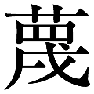

| 悩むチカラ (ＰＨＰ新書) | |
| 伊藤 友宣 | |
| (2017) | |

悩むチカラ
ほんとうのプラス思考
伊藤友宣
職能上の知識や技能に関する書物以外、読書はすべからく、心と体のくつろぎのためにある、と私は常々思っている。この本もそのためのものであれと願っているが、それにしては、この本のテーマである「悩むチカラ」は重すぎるとお思いになる向きも多かろう。
左脳での、論理の整序ではなくて、むしろ右脳での積極的なイメージの展開として、あらゆる社会的な人間の現象を、相互に矛盾しあい、位相の異なっているもの皆すべて横並びに置いて、そのズレや違いなどに悩んでみる。すると「悩むチカラ」の同質性こそが、人間なるものの主軸を貫く単純明快なプラスイメージの源泉であることを発見し、思いがけぬ心のほんとうのくつろぎを味わったりするものだと思うのである。
そこで「悩むチカラ」とは、「四方八方抜け口がないと見える事態においても、明るく穏やかな平生心を失わず、とりあえずの急場の対応を講ずる習性によって、思いもかけぬ真剣な愉しさを呼びこんで、岩をも通しかねない人の心の結集を招く力」とでも、とりあえずは定義しておこう。
互いが人また人に取り囲まれた人間社会における、自分一個のありようを捉えるのは、まさに一生事である。
拙速はいけない。
実は、人間にとっての平和の「根」を捉えようとして、この小書一冊を綴るのである。
今どきはビジネスでもレジャーでも携帯電話が便利、インターネットで用が足りる。ＩＴ化の目まぐるしい発展で、仕事も暮らしも見事に変わった。
知りたいことやほしいものが、こんなに簡単に手に入るようになると、いちいち手間のかかる人づきあいなんて、やってられない、というのが今どきの人々の実感なのだろう。
煩わしい手順や手続きを伴う余計な人間関係が省略できるようになって、自分の好きなことや高度な作業に専念できる。これは大いに結構だが、人間は決して機能的な便利さだけで満足のいくものではない。
煩わしいものは省けるだけ省こうということになって、戦後半世紀余りの間になにもかも整然とさせてみたところ、早い話、たむろして無駄話に明け暮れるという愉しみ方がいかにも不慣れになっている。私がまだ若かった頃は、誰かれなしの手を借りて厄介事を片づけねばならぬという不便がやむを得なかったからこそ、人と人とのかかわりを思いがけず深めざるを得なかった。われわれ年嵩の者同士は、以前と今を比べてあれやこれやと語りあう。しかし若い人たちのなかには、まるで話のきっかけがないから、他人との接触なんかすべて不自然で無用だとみなして忌避するしかないという人も結構多くなっているようである。
私自身は、自由な発想を大事にしたいがため、教育機関やどんな企業や組織にも属さず、自分一人のカウンセリング・ルームを自営しつづけてきたために、世間に吹いている風の匂いや色あいの、その時々の微妙な変化が、いちいち痛く響く。
この二、三十年の間、深く考え悩みっぱなしで、世の中の変わりようがとても気になる。
というより、悩むことをしなくなった若い世代のことが、とにかく心配なのだ。
社会のあらゆる面でマニュアル化が進み、効率第一に戸惑わず滞らず無駄なくあらゆることがスムーズに処理される。
立ち止まって、これはどうも腑に落ちない、気になるなどと悩んでいたら、置いてけぼりを喰ったりはずされてしまうだけである。
なんでも出来あいのものですましているうちに、ついどんなことでも、もともとの成り立ちなど斟酌しておれなくて、手っ取り早く事をすますことに慣れるようになる。ほぐしてばらしてもとの仕組みを確認するなどという丹念でくどくどしいが、それがおもしろいのだというこだわり方などは、すべて素通りしてしまうことに慣れてゆく。
もし、こだわったりこじれたりして、いちいち悩んでいれば、すぐに流れからはずされることになり、ぽつんと一人はずされてしまえば、新しく別な流れに参入することが大変困難で、結局、使い捨てといっていいような扱われ方をする働き場所しか見つからないのが今どきの世間の現実である。
気が差していたずらに日を過ごせば、いよいよ世の中の動きの一つの歯車として、どこにもはめこんでもらう機会がなくなり、絶望が加速度的に高まったりしがちである。行きづまってしまう。
悩むこともなくいきなり破綻にだけ襲われる。あるとき、自分だけが周囲と違ってしまい、特化しているのに気づくのである。生きていく策が見つからなくて、度を失うばかり、ということがありがちな世の中になっているように思える。
なんとなくそうなりそうな気配を感じて、夜も眠れないという人が多くなっているようだ。精神の不安定な状態が自分の常態なのだと自認する人が、ありがちの世の中になった。
精神科、神経科に通う患者の数がこのところ年々増加の一方である。
先日もある精神科医と話していて、私が「眠るのに薬の助けを借りた経験などもちろん一度もない」と言うと、あきれたように驚かれて「このごろでは精神医療にたずさわっている人も薬に助けられて眠るのが普通なのに。最近は、いい誘眠剤も出てますよ」と言われてしまった。
驚かれたほうがもっと驚く始末である。
ありがたいことにご飯がおいしくないと思ったことはないし、夜が眠れなくて困ったということはないし、排泄が順調でない日などまずあった覚えがない。
なのに、悩むべきことがなにもないことなど、それこそまたあった例がないのでもある。
無限の悩みが自分の心の中で渦を巻いている。こんな時代を生きているのだから当たり前のことだろう。
悩むことを常習にしているからこそ却って、心と体も平衡を保っていられるといえるのかもしれない。
今の世の中、ともすれば「悩むチカラ」に欠ける傾向が目立ちすぎる。私には、それがとても気になる。
安定してうなりを伴って回る独楽は、しゃんとまっすぐ立って、一見、静止しているように見える。三味線でもバイオリンでも、弦がピンと張っていなければ輝かしい音色があたりに気持ちよく響かない。
こんな世の中だからこそ「悩むチカラ」で、悩みの先にあるプラスイメージをつかみ慣れていかねばならないと思う。
さて、米ソの二極対立の構図が崩壊してこのかた、まるで世界は、不安定要素がまる出しになったようで、特に九・一一以来、朝、新聞を見るのが憂鬱になり、テレビ報道の煮えきらない中途半端さに心は乱されっぱなしである。
どうも惑わされすぎているのではないかと思うのは、報道されることだけが今日明日の問題のすべてであるかのように思いこむ習慣が、いつのまにかできていることだ。報道の異常さや不安定さに、自分の日常の情緒や思考が引き寄せられる傾向が現代人には強すぎる。
つまり、うっかりすると、不確かな揺れ動きに身をまかせて、心がちゃんと大地に根づいていないともいうべき日常の心の不安定さを、それが常態だと思いこみがちではないか。
「悩むチカラ」とは、自分個人の根づきのよさを確認する力でもある。
世に抗しきって生きる力などあるわけでもなく、かといって、世の中につまらない足のとられ方もご免である。
「悩むチカラ」こそが、しなやかで、したたかな根づきのよい生き方の原動力なのである。
悩むチカラ──ほんとうのプラス思考 目次
扉レイアウト──林とも子
「悩むチカラ」とは、なにかが気になったら、気になったものの正体を一つのイメージとして捉えられるようになるまで、自分の課題として心にとっておくことのできる習性の力である。
悩むこと自体に心の励みを感じられるくらい「悩むチカラ」を鍛えるポイントは、実は、「事を憎んで、人を憎まず」にある。「事」と「人」とを分けて捉える習性こそが、どこまでも真剣に、どこまでも愉しく「悩むチカラ」を深め強めるキーポイントになるわけである。
つまり、なされた「事」とそれをなした「人」とを分けて捉える際の「人」というのは、「人間一個の自律する生体としてのプライドの権化」ともいうべきイメージであるのに対して、「事」はあくまでも「事物」そのものである。
この「事」と「人」とを峻別する習性が、はからずも「悩むチカラ」を「真剣な愉しさ」と同義語だと納得させる決め手になる。
クヨクヨ、くどくどと底なしの悩みに落ちこむ愚かさとは、この「真剣な愉しさ」は訣別してしまっている。
「悩むチカラ」は、あらゆる人々との知らず知らずの連帯を誘う。「知らず知らずの連帯」とは、意識しないうちに起こる心と心のエールの交換のことである。
あーかこーかと悩む自分の心の内の、 藤や対立から目を逸らさないで、自分自身を大事にすることを心がけていれば、周りのどんな人とも心の奥で共感が湧き、愉しい気概に自らが支えられる。
藤や対立から目を逸らさないで、自分自身を大事にすることを心がけていれば、周りのどんな人とも心の奥で共感が湧き、愉しい気概に自らが支えられる。
さて、左脳は論理脳であるのに対して、右脳は感情脳、イメージ脳だと最近わかってきている。明治以来のわが国の学校教育は、左脳教育に偏っていたことが、このごろやっと指摘されるようになった。
右脳がいきいきと活発化するとき、思いは突如広がったり微細なものへ凝集したりする。その視野の広がりや視点の置きどころの柔軟自在の移動や変容が、実は、「悩むチカラ」のポイントである。
平生の思念に巨視的な視点と微視的な視座を自由に往復させ、飛躍したり沈潜したりしてみる。それでこそ、この世に生を享けて、まさに自己自身として生きている事実の証ではないか。
極端な未熟児で生まれ、重篤極まる身体と脳の障害のなかで、知的学習と自己表現の独特の技能を獲得した、まだ十五歳の日木流奈君が、「流れに身をまかせながらも、人生を自主的に生き出すと、いろんな人との心のふるえる縁がどんどん深まる」と書く。
そして、「私はいつも悪い時代はないと思っています。悪いのでなく発達途上なだけだと思っているのです。ですから、まだ矛盾のない社会というのはできていません。いつでもなにかしらの変化とか修正が必要なのが社会なのです」という、自尊の愉しさに満ち満ちた自己表出に惜しみない。心身の決定的なハンディキャップのために、他人との雑多な摩擦や回から免れることができて、こういう純なスッキリした思念がこの年齢にして生まれたというべきだろうか。
まさに「悩むチカラ」の権化というべき彼のこの発言は、誰にもかぎりない元気を与えずにおかない。
ごく一般的な現代人の悩み、たとえば、さしあたって金がない、やりたいことがわからないとかいう場面で、自分の今の思いつめごとを、どうしたら私のいう「悩むチカラ」、つまり真のプラス思考への深まりに方向づけていくことができるのか。
困ったこと、つまり自分のマイナス面を、どうしようどうしようとばかり考えつめても、なんにも出てこないときは、ほんとうになにも出てこない。だから、直接、今の悩みごとにはかかわりのないことでも、自分の周りのあらゆるプラスイメージに心を遊ばせるのである。
心を遊ばせる。つまり、なにかにつけて愉しむゆとりである。すると、「あっ、こんなところに自動販売機がある」と発見したりして、すぐになにかの役に立つわけのないことでも、さりげなく心が豊かに整備される。また、ふと出会った人に機転のきくなごやかな挨拶を交わしたりすると、相手がプラスイメージのきっかけになって、「あなたもどう？」「一緒に行ってみない？」と思いもしなかった誘いを受けたりするものだ。
妙なもので、思いがけぬ知人のつてで、手頃なアルバイトが見つかって、さしあたっての小銭の融通がついたり、いろんな人との何気ないプラスイメージのかかわりのなかから、やってみたいと思っていたことが形になったりする。
漠然とした焦点の定まらない曖昧さが、なんやかやの右脳に湧いてくるプラスイメージを誘い、さらに、自分のプラスイメージが周りの人や物のプラスイメージを呼びこんでいく。
とにかく、さて困ったことになったというときにいらいらしない、すぐさま煮つまってしまわない、ゆとりのある悩みの保留こそが、私が強調してやまない「悩むチカラ」のありようである。
さて、読者にまず「悩むチカラ」なるものの実際のリアルな姿をイメージしてもらうのに、うってつけの人物を紹介することにする。この本の書き出しをこの一人の実在の人物紹介から始めることなど、このテーマで一冊を書きたいと思った当初は、実は、まるで考えてはいなかった。
紹介するのは、わが国の産業界を底辺で支えている多くの中小企業のなかの、このごろとみに、その企業の優秀性とユニークな経営方針とに視線が注がれている、一会社の社長である。
私とまさに同世代の人で、発想というか、人間の生地そのものというべきものが、こんなにもなじみやすく、しかも私などとは違って、実業界の厳しい競争社会のなかで、一見のびやかに、自分の思いを行動に移して、前向きに地歩を確実に固めている人が現実にいるとは、驚き以外の何物でもない。
元気づけられるのである。
まさに「目から鱗が落ちる」とはこのことである。
私などは日頃、狭い領域に閉じこもって、なんだか偉そうなことを言っておられるものだから、寡聞にすぎて、世の中がほんとうはどんな陰の力で支えられているのかを知らなさすぎるようだ。できるかぎりの機会を捉えて、自分の仕事のルーティンからはずれ、世間のあれこれに耳目を開こうと心がける愉しさこそ、それゆえに人生の悦楽になる。
自戒の思いをいっぱいこめながら、今、いささか元気を失いがちな人に、「せっかちに思いつまるのは単にうっかりごとにすぎないのでは」と語りかけたいからこの本を書こう。
長い間、イメージに描いていた当たり前な「悩むチカラ」の持ち主の典型を、ある新聞の人物紹介のページで見つけ出したのである。ご当人も「悩むチカラ」などという造語が、自身の生き方にふさわしいかどうかなど考えたこともおありではないだろう。
つまり「悩むチカラ」とは、意識し心に努めて刻苦勉励のための目標として錬成されるものではなく、真剣な愉しさの展開に夢中になれば、知らず知らずのうちに自然に身に備わるものだと、私はイメージしているのである。
正直なところ、上に立つ者は下の者を一方的に叱咤激励するとばかりに、これまで思いこんでいた。この人は、そうではなかった。しかも品位に満ちて、上に立つべき人としての敬愛を下から存分に得ている。
私と同世代の人。私より一つ年下の一九三五年生まれ。この人はどうも違う。
名古屋に生まれる。都会育ちの私などの世代の者ならみんな経験した学童疎開で、島根県の松江での親元を離れた暮らしを体験したのだとか。
とにかく、今では（新聞記事の二〇〇三年当時）、社員数七二人で、年商二八億円という事業の成功者である。
カメラ、腕時計、自動車などの超精密プラスチック部品では世界的に知られるトップメーカーになった中小企業の社長。新聞には実にほどけた明るい表情の、人なつこい、その年には見えぬ若やいだ写真が載っている。
その人は、樹研工業社長の松浦元男さん。
「社長としてずーっと愉しくやってこれたのは、会社での人間関係がうまくやれてこれたからなのです」と、氏は臆面もなく言ってのける。
「朝起きてわくわくするのは、今日は誰のどんな顔に会えるのかなと思うからで、事務所にしかめっ面して入ってきたことはない」とも言うのである。
こういう企業主の得意満面な表現は、えてして社長の独りよがりな自画自讃が多いものなのだが......。
「企業は、第一に技術革新に真剣に取り組まないと社員が愉しくない」と言う（傍点筆者）。
これなど、世の教育関係者によく聞いてもらいたいところだ。「真剣」が「愉しさ」の基本だと言っているのである。企業の経営に全精力を注いできた人が、なにをもとにして、こういう表現ができるのか。あとあとを読んでみて、驚いてしまうばかりである。
つまり、「会社の人間関係が愉しくなきゃあ誰だってやってられない。会社に入って、兄弟が増えたようなものだと思うのは、社長である自分一人ではない」と断言するのである。
私は新聞ではじめて知って、その後、テレビの企業探訪の番組でも、この会社の様子が紹介されているのを見た。
仕事中の社員は、この社長が来訪者を案内しながら脇に近づいても完全無視しどおしである。つまり、社員は社長を、形式的な儀礼において一顧だにしない。
その晩の社長社員そろっての会食の様子を見ても、いったいどこに社長がいるのかわからない。よくよく見れば、社長は隣りあう社員との歓談に夢中である。節度のある屈託のなさが場の全体に爽やかに行き渡っていて、グループや派閥のないこだわりのなさを感じ取るばかりである。
集団というものの色や匂いが敏感に気になる私は、陰々たる上下関係や派閥を嗅ぎあてるのが得意である。テレビの一場面ではあるが、その集まりにはたださりげなく力の抜けた個人それぞれのくつろぎが平たく広がっているのだった。
企業経営への打ちこみ方もただものではない。
「どんな小さなところでも、いちばん大事なのは、業界のトップにいることです」と言う。
「競泳でも二番手、三番手だとトップの波をかぶって余計な苦しさを負わねばならない。これからの社長たちはもっている情報量とその取捨選択の力、そしてインテリジェンスがなければ、あらゆる面での地図が読めない。責任という意味では、中小企業の社長は引退できないのだから過酷なものですよ」と笑う。
社会全体の動きを読み、手元の状況を把握する。
外目にはいつも変わらぬ明るい穏やかさで、誰とのかかわりにも力が入っているようには見えないが、世の中の動きに向けられた心は常に激越な修羅場なのだろう。
強烈な「悩むチカラ」というものは、外には見えないものである。フル回転している独楽は均衡を保ち、静止しているように見える。
「日本経済が順調に成長している時代に遊びまくった社長が、今、苦労しているんです」と笑う。
この人の、緊張しすぎず油断しない姿勢は、日々、精を出す者同士の快さとして、いつしか社の全体に共振を起こしていくのだろう。
「うちの連中は、学生時代にあんまり勉強していないのですが、会社に入って、平常心として勉強する姿勢になっています。これほど勉強する社員は、日本でも珍しいんじゃないですか。だからこっちも勉強して、毎日が真剣勝負です。そのへんが愉しいなあ」と言うのである。
このあと、この社長がどれだけ際立って、「悩むチカラ」のすばらしい持ち主かを読者にもわかってもらえると思う。この本の冒頭でこのように紹介するのは、その柔軟に流動する視点の動きの見事さゆえである。
この人物を、私が、「悩むチカラ」の持ち主の代表としてこの本の最初に取り上げたくなったのは、単に事業の経営主として誠実な、幸運にも恵まれた成功者であるからではない。
明るいほどよいなごやかさを誰に対しても向けながら、見事な人間観を柱に据えた、まことに個性的な経営のあり方に、まず驚いてしまったのである。
一九六五年に創業とあるから、三十歳にして自らの手腕で企業を立ち上げたわけである。
その出発点から七十歳を迎える現在まで貫いている考えのユニークさには、私は声なしの思いを抱く。
まず入社試験なしで社員を採用してきたというのである。それだけではない。入社資格として、学歴も国籍も性別も問わないという。だから、先着順の採用だとのことである。
しかも、定年制がないという。
果たして、それで経営が成り立つのだろうか。秩序が保てるのか。うまく機能するのか。
単に経営方針だけがユニークなのではないのである。社長その人の生き方の哲学が、一切の芯になっている。
その芯を、私は、抜群の「悩むチカラ」なのだと捉えたくてここに取り上げている。
この本を書くにあたって、「悩むチカラ」とはどういうものかということを、まず論理として、つまり頭の左脳を使って説明することから始めるよりも、なんとか一人の生身の全体像を示すことで生動する気韻あふれるイメージとして、つまり直感的な感覚で把握できるような右脳にピンとくるイメージで訴えられないものかと呻吟していたところ、この社長の記事に偶然、新聞の紙面で出会ったのである。
地元の神戸新聞紙上で出会い、ほどなくしてテレビ番組に取り上げられたのも目を見開いて拝見し、ついで『ＡＥＲＡ』（朝日新聞社）でも人物探訪の記事が掲載され、熟読させていただいた。
そうしたいくつかの紹介に接しているうちに、非常にいきいきとこれこそが「悩むチカラ」だという実感が深まってきた。それは、氏の実に鷹揚な一面が、これこそが徹底していることにある。
これが大切と見れば、精細緻密な研究を怠らない。第一、この会社は二〇〇二年に一〇〇万分の一グラムという世界最小のプラスチック歯車を開発したことで、一躍有名になったのだから。
そのぶん反対に、さして要訣とするにあたらないと判断できることには、実に頓着のないこだわりのなさが徹底されている。
それは社長個人の個性そのものの反映でもあるのだろう。普通には考えられないことである。この大胆さが成功のどうやら鍵であるらしい。だとしたら、そのような個性をもつに至った背景はいったいなんなのかと考えてしまう。
細心さと大胆さが共存しているがゆえの、まさにそれゆえのゆとりである。
人間関係が狭く浅く、いびつなものになりきって、殺伐として極度に緊張している面ばかりが報道されている昨今なのに。
氏は形式には固執しないで、肝所を感じ取りあう感性に生命を託している。努めてそうしなければという当為としてではなく、いわば右脳感覚でそうし慣れているからそうするまでという、常日頃の修練のたまものというべき、まことに慣れた判断力があってこそである。
それを身につけるまでの真剣な愉しさが、「悩むチカラ」を鍛えた。あるいは、「悩むチカラ」を鍛えてこそ、真剣な愉しさが身についたというべきか。
入社試験なし、学歴、国籍、性別を問わず、先着順の採用というのも、そういうものが企業の命運に基本的に響くものではないという判断があるからだろう。いや、それらこそプラスに働くという自信と確信。
いったいこの人は、なにをポイントに考えるのか。
実はこの人は、高校生活に違和感が強くなって、高校を中退してしまっている。
私はこの三十年間、自営のカウンセリング・ルームで、いろんな高校生やその親たち、また高校の教師たちとも出会ってきたが、高校に在学する意味を見失って挫折するというのは、まず挫折する側に問題があると親も教師も捉えがちである。
しかし、未成年のまだ育ちきらない年齢で子どもの側に問題があるのは当たり前で、だからこそ学校教育が必要なのではないか。
学校が子どもにとって魅力がないのは、学校側の不覚悟、不用意、怠慢の要素が大きいのに違いない。
この人は、これ以上高校に在籍していても意味がないと思ったときに、中途退学したのである。
それからは、三〇以上の職を転々として、それなりの社会体験を味わってみて、自分の自覚、自分の意思決定で、やがて学校にもう一度行き直したという。
バンドマンをしながら愛知大学を卒業。そして、一九六五年に樹研工業を創業したというのである。
だから、実感として言っているのであろう。力みこんだ話しぶりでなく、「フリーターが増えて心配だといわれますが、ぼくにはなんの違和感もないなあ」と言う。「ぼくも高校を中退して、若い頃は三〇ぐらいの仕事をやったフリーターのはしりでしたから」と。
「彼らはなにをしようかと決めかねているだけで、これと決めれば前進する馬力は三倍ぐらい大きいんです」
やる気になりようのない無力感を味わってこそ、なにかの要因が重なってやる気になったときに、充足感の真に明快な気分が実感できるというものだ。
「会社が場所とちょっとした動機づけを用意するだけで、スタートダッシュがかかるんですよ」
自分自身のことを誇ると同時に、ちょっとした動機づけをしてやる側の数々の体験を積んでの実感が、この言葉にはこもっている。
「この間も、若い人たちが成人式で暴れたと否定的に報道されていましたねえ。ほんとうはどういうことでしょうか。明けても暮れても前例どおりのことをやって、人の書いた原稿を棒読みして......」
私はこの言葉のなかに、氏が自分の高校中退当時のやりきれなさの思いを重ねているのを素直に感じてしまう。
教師と生徒が互いに自分の思いを素直に語りあい、耳を傾けあい、真剣さが愉しいといえる高校生活なんてものではまったくなかった。氏はその思いを語っているのである。
「心をこめて、若い人たちを祝福したんでしょうか。そういうまじめさがないと、若者は感性がいいからすぐ、小ばかにするんです」
これなど、最近の子どもの問題の根っこそのものの指摘である。
「こんな世の中、生きていたくない」と、感受性がごく普通に育っていれば、小学生だって何割かの者がふと本音を洩らしかねない世相になった。どこまで堕ちるのか。
中学二年生の二割がうつの傾向にあるという北海道だかのある調査記事を、最近目にした。旧態依然たる教育現場のマンネリズムへの、それは若い感性による異議申し立てにほかならないと私は思う。
私がこの本にしっかり示したい「悩むチカラ」というのは、なにかが気になったら、気になったものの正体をしっかり突き止めるまで、自分の課題として、心にとっておくことのできる習性のことである。
今、若い感性が耐え難いのは、同世代の集団においてさえ、その場その場の空気がとても普通におれる落ち着いたものではなくなっているほどの、世の中のいびつさである。どんなことでも根源的にもともとの正しさを探るということが、ほんとうになくなった。すべてに、いわゆるマニュアルというものが今ではそろっている。なんでもマニュアルをなぞっておりさえすれば、すべてＯＫである。
しかし、学習はまねることから始まるというが、安易にまねてそれでおしまいということなら、自分のものにならない。習字のお手本を下に敷いて半紙に写るお手本をなぞっただけのものは、形はそれらしくはずれたところがなくても、一見して明らかに勢いがない。死んでいる。
書道では、筆勢を大切にする。人間の生き方も同じである。
「これでいいや」といい加減を許しあっているうちに、ピンと響きあう緊張感のある愉しさから遠のいていく。次第になにがどうという気もせぬうちに、なにやらなにもかもがおもしろくなくなってゆくのである。
この社長には、好きなものはどこまでも好きという率直さがあって、バンドマンのアルバイトで学費を稼いだりしたくらいだから、自分の感性に確信をもつタイプである。
右脳でまずプラスイメージをキャッチする人は、物事に感覚から入ってゆく。ところが、理屈人間の左脳タイプは表情が乏しい。すると、他人との接触になごやかさが欠けるから、右脳の活躍自体がおろそかになる。
逆に右脳を全開にできると、キャッチするプラスイメージが明確になり、右脳と左脳をつなぐ脳梁が活性化して、左右の脳は刺激を受けあって積極的に活動するようになる。
左脳右脳の橋渡し役の脳梁が神経線維二億本でできているというのだから、人間の脳自体の仕組みなどというものは、人間の考える理づめの論理などに比べると茫洋たるもので神秘そのものといっていい。
活性化した脳の動きに身をまかす、という感覚が大事だとつくづく思う。
若い人たちの自然な動きをうまく誘い出すための発想ということになると、なんといっても大人の感性が決め手なのだ。
「よその会社にあって、うちにないものが一つあります」と、この社長は言う。
「よその会社にあってうちにないものの一つが出勤簿です」
「毎朝、たぶん八時半頃には仕事は始めているのでしょう。遅れそうになっても急ぐな、事故を起こしたら一生の問題と言ってあります」と言う。
物静かで淡々として、明るく、平常心を失わない社長のいきいきとした態度が、会社全体の自発心や自律性を誘うのだろう。
「信頼していれば、十分や十五分遅れたってちゃんとそれに応えて仕事をやってくれます」と、いたって鷹揚なのである。
そしてこうつけ加える。
「ほんとうに困るやつは一パーセントもいないのに、残りの九九パーセントを管理するのは、おかしな話ですよ」と。
徹底した爽やかさを、私が痛感するのは、「朝礼や訓示なんてやったことがありませんね」というところである。
形式だけの、空疎なのに、重々しく意味ありげなこの朝礼とかいうものに、子どもは、どれだけ毒され、毛いしていることか。
「はじめから仕事に来ている人にとっては、却って邪魔じゃないですか」
こういう明解な言辞を口にする経営者に、私は、あまり出会ったことがない。
「入社試験だって、やってみてもどっちみちわからない」と言い、さらに、「親にとっては大事な子どもを、他人がおまえでいいとか悪いとかはちょっと言いにくい」とまでつけ加えるのである。
そして、人を雇用する側の自戒の厳しさをこうも言う。
「リストラをやる社長は話にならないと思いますね」
「リストラで会社を立て直そうというのは、安易なやり方で、それに頼っていれば会社は崩壊します。あれは、日本の文化じゃありませんよ。戦国武将は自分が腹を切るから部下を助けてやってくれと言ったものです」
今どき、しゃんとした心に響く言葉を聞くことが、いかにも少なくなった。
何年か前にこんな経験がある。少しこの社長から離れて、私自身のある体験を語る。
小学校を、ある用で訪ねたときのこと。折悪しく新学年のクラス分けをしている最中なので、待ってほしいと言われたため、運動場でそのクラス分けを見ながら待たせてもらっていたときのことである。
一組から順に子どもの名前が読み上げられて、ちょうど新しいクラスの編成が終わったところで、それぞれ二列に並んだ四つのクラスの子どもたちに新鮮なさざめきが高まっていた。
「では、次に一組から、担任の先生の名前を発表します」のひと声に、期待でみんなひっそり静まった。
「一組は、ヤマシタカズヤ先生」
途端にいちばん右の二列から歓声が上がった。一組のみんなは瞳をきらめかせ、口々になにやら声があふれ、隣の子の肩をたたいたりしている。
「では次、二組」
再び、シーンと静まり返った。
「二組、カワシマヨシユキ先生」
なんという違いだ。「エーッ」と失望の空気が隣の二列に充満する。小学五年生なんて、率直なものだなあと感心してしまう。
しかし、これは先生たちにとって、なんと厳しい逃げ場のない評定だろう。
「三組、ヨシタニレイコ先生」
女の子の黄色い声が強かった。男性群はシレーッとなったようなゆるんだ空気。
子らのそれぞれの一瞬の反応だけで、先生たち一人ひとりの様子がまるで知らない外部の私にまで察せられる。見ている私にまで、新鮮な一陣の風が吹いて通っていったような見物であった。
四組まで担任が発表され、「さあ、みんな。姿勢を正して。校長先生のお話です」との声に続いて、校長先生が壇上に立つ。慇懃に話し出す。
「皆さん。これで、新しい五年生のお互いの顔も確かめあうことができました。クラス担任の先生も、決まりましたね」
などと、ちょっとばかりこわばった挨拶のなかで、この校長は、こう続けたのである。
「ところで、皆さんに忠告しておきたいことがあります」
そこでポーズを置いたので、次なる言葉が私にもしっかり聞こえ、なんともやりきれない気持ちになってしまった。そのとき、その校長の続けた言葉はこういうものだった。
「先生方の名前の発表の際、君たちはなんですか。あれはあからさまな差別です。わーっと喜んで歓声を上げたり、エーッとげっそりしてしまったり、あからさまです。どの先生が担任になっても、君たちそれぞれのクラスの受け持ちの先生方の期待に、君たちのほうがしっかり応えていかなければならないのです。差別のない平等が、いつもいちばん大切なことです。あからさまな差別は許しません」
これを聞かされている子ども集団の、一人ひとりが皆、心の向きを失ったような空気のゆるみようには、私はとてもいたたまれない思いがしたものだった。
形としての平等。上からとりしきられる平等......なんだか、いつもこの向きでのおし着せの平等論が、この学校ではまかり通っているのだろう。子どもは憮然とし慣れている。
これで果たして、自発的な意欲が、一人ひとりの子どもに芽生えるのだろうか。
学校というところで、私はどれだけ多くのこの種のやりきれなさを味わい重ねたことだろう。自分がまだ幼い、児童、生徒であった頃からずっとずっと。
蛇足ながら、この文脈で、ここではこう書き足しておこう。
望むらくは、である。
子どもたちへのこういう訓示は一切不要で、代わりに職員室での先生方への、心からのエールは校長の口からどうしてもほしいところである。もちろん、当の校長が、そのあと先生方にどういう向きの訓示を垂れたのかは、私の知るところではない。
訓示はいらないのだ。穏やかなエールがいる。
子どもたちが差別をしたなどというのは、とんでもない捉え方で、子どもは単に正直なのだ。なんと率直なこと。その率直さが可愛い、という気持ちを背景に置いて、先生方には、
「皆さん、子どもたちの評定は厳しいねえ。率直だねえ。見てのとおり、感じたままの色が子どもからあふれでます。厳しいものです。
今の子どもの心の向きがはっきり子どもによって示される。この年齢の子どもの心の捉えどころがどんなものかを知ることは、教える側のこよなきありがたい指標になりますね。
真摯に受け止めることから始めるのが前へ歩を進めるきっかけなんですよ、先生方。
なーに、人間の生地のほんとうのところなんて、もっともっと年輪を重ねないと、わかるものではないのです。
先生方、自信をもって、この一年を元気に励んでくださって、大丈夫です」
とかと、先生方へのおおらかな惜しみないエールがいるのだと思う。
先の社長の、「戦国武将は自分が腹を切るから部下を助けてやってくれと言ったものです」という言葉から、果たして今の、特に教育の世界で、そんな言葉が行き交う日常であろうか、と考えていると、この、とある小学校での、やりきれない差別と平等のマンガチックなナンセンスな捉え違いを鮮やかに思い出してしまったのである。
さて、この社長が、昔高校を中退したということは、学校教育の空しさにケリをつけざるを得なかったということだろう。
勢いをなくしてふらふら日を過ごす若者は、なにをしようかを決めかねているだけで、これと決めれば前進する馬力は人より三倍大きいと言ってのけるのは、ご自分の体験を捉えての実感である。やんわりした仮借ない教育批判である。
なんといっても体験に基づいた、実感のこめられたおおらかな言葉は、道を見失って自信がなく緊張に固まっている者の愁眉を開く。
この社長の、ああかこうかと悩み抜いた体験は、筆舌に尽くせないものであるに違いない。解決の糸口がなかなか見つからないときも、決して悩みを放棄したりはしなかった。
自分一人の立身出世だけを考え成功したとしても、それが成就する道ではないことを、イメージとして、悟りすぎるほど悟ってきた人物だと思う。
私のいう「悩むチカラ」を、底深く幅広く鍛え抜いた人物に違いないのである。
「悩むチカラ」についてのいちばん大事なポイントで、この章をしめくくることにする。
「どんな小さなところでも、いちばん大事なのは、業界のトップにいることです」
というこの人の言葉は、ずいぶん含蓄に富む言葉である。
つまり、自分の得手とするポイントを探りあてて、精いっぱい伸ばせるかぎりそれを伸ばしていけば、少なくともその面で後れをとることはない。そういう面をしっかり見つけることが、自分のプライドを潰さぬ秘訣、というより、積極的に前向きにプライドを守り立てるプラス思考だというのである。
手を抜いて楽をしたがるのが人間の本性だと信じて疑わず、それをよく監視し規律と制約のなかへ押しこんでおくことが会社運営のコツと考えるのか、逆にどんと骨太くおおらかに、真剣にやることが愉しいことだと、自分にも誰にも自発心や自律性を確信してかかるのか。この人は、その違いを捉えているのだろう。
実は、この違いこそが新旧の人間観の違いである。戦後の教育が、表面は民主教育を標榜しながら、内実はまるでそれにはなりきっていないということを、ほかならぬ子どもに見破られているように、この六十年、戦後教育こそが、社会秩序の破綻を誘い出すもとになってしまっているのである。
体制の一挙の改変だけを急務としてしまって、心構えや生き方そのものの根底からの洗い直しそのものに、思いつかなかった戦後の処理の仕方。
それが戦後社会の拙速の過ちで、その決定的な過ちを、当時の大人たちが理解できなかったのは、しかし無理もない。
ただ、昨日まで口から泡を飛ばして昂然と言い放っていたこととは一八〇度反対のことを、いくら悔い改めたからといって、態度もがらりと変えて、にこやかに教え説いてはばからない体制順応型の大人の体質が、当時のまだ純な子どもたちの目には、まるでしらじらしく映った。
戦後は、民主的な平等の教育だと標榜して、あらゆる競争を廃することが差別のない平等教育であるとばかりに、騎馬戦は言うに及ばず、かけっこや玉入れなど勝ち負けを決するものは全部廃止という運動会が横行して、運動会そのものが、しまりなくだれた空気になり、親も家族も見にゆく愉しみが萎えてしまった時期がある。いまだにそれは尾を引いている。
競争の一切を禁じてしまえば、心の励みがなくなって、気の抜けたサイダーやビール同然で飲みたくなくなるものである。
しかし克己の気負いが、自発と自律の勢いを生むのである。
勝ち負けを競うことはどうしても必要であるが、ゲームと戦争の区分けだけはつけておかねば、とんでもない加速度現象を生む。
ゲームには厳しい競技上のルールがあって、ルールを守るという一点で、戦争とは隔絶する。
近代オリンピックの創始者ピエール・ド・クーベルタンは、世界の近代化のために、一般市民の多大の犠牲を強いる国家施策としての国と国との戦争はやむを得ないとする考え方に代わるものとして、平和の実現のために、古代オリンピックの復活を提唱したのである。
戦争とゲームの違いは、単に、「憎い者は徹底的にやっつけざるを得ない」と考えるのか、逆に「事を憎んで、人を憎まず」と考えるかの違いに尽きる。
ルールを厳正に守ることでしか、あらゆるゲームは成立しないのだ。
相手の息の根を止めるまでやるしかない殺しあいという戦争とは、本質が違う。
実は、「悩むチカラ」が心の励みとして鍛えられるときのポイントが、この「事を憎んで、人を憎まず」である。
「平和を守ろう」が戦後半世紀の革新政党のスローガンになってきたが、それがなんとも根本の誤りであった。守るとは、保守ではないか。革新が保守を標榜する矛盾に気づいていないから、ぬるま湯の社会が温存された。
平和こそ、日々新たに創造し直されねばならないのに。
まずは、はからずも自分の生まれ育ったこの国のここ半世紀のありようが、私という一小市民にどんな悩みの材料を提供してくれたかを、ざっと概観することにする。
一九四五年の太平洋戦争の敗戦を境とする戦前と戦後の違いは、なににあるのか。その「戦後」がもう半世紀を優に超えている。
若い人たちには、戦前と戦後の違いなどといってもピンとこないかもしれないが、大変なものだ。
戦前は、大日本帝国憲法のもと、万世一系の天皇が統治する国家であったのに対して、戦後は日本国憲法のもと、主権在民、つまり、国民が統治する国家に変わったのである。
「神聖にして侵すべからず」とされた絶対権力をもつ天皇を頂点とする上意下達の一方通行で、国家の秩序が成り立っていたのが戦前で、それと次元を異にして、戦後の国の機能や組織は国民の合意によって成立するものとされたのである。
天と地がひっくりかえったのである。
古くは中世の昔から、領国を治める絶対権力者は領主と決まっていたのだが、フランスなどのように王政が革命によって共和制に変わり、その変遷をくりかえして今に至るといった長い歳月をかけて国家形態が変わっていくのが歴史的な筋道なのに、わが国は、一夜にして、革命もなく、統治者が天皇から国民に変わったのである。
それまでは、すべからく上意下達が徹底していて、いったん緩急あれば国家に身を奉ずるべしが体質になっていた。個人が自発心や自律性という市民感覚を身につけた個性とか人格を認めあう習わしなどは、思いつきもしなかった。
千数百年からの封建社会の体質のままに、欧米先進国の脅かしに急迫対処しての軍事大国化で、たちまち一億一心、火の玉になって、かの第二次世界大戦にのめりこまざるを得なかったという、日本という極東の島国に住む私たち。
目をひんむくようなこの変わり方を、肌で、心の底で、深く深く国民の一人ひとりが認識できるはずなどなかった。
「国民の合意による」などというのは、人類史何千年の果てに、ようやっとたどりついた人間の英知の結晶ではないか。これこそ人類最高の発想なのである。今後長い年月をかけて、これを「掌中の珠」となし得るかどうかは、それこそ今からの私たち一人ひとりが心に問いかけ確かめ抜かねばならない命題なのである。
「猫に小判」なのではなかったか。「豚に真珠」ではないのか。今までのところ、まさにそう。
今の世相のていたらくを見れば、ほんとうにそれを誰しも案じざるを得ない。
時の権力者とその取り巻きが、権力のより強大になることを願って、国益の損得勘定が追いつまったときに、国民を駆り立てて、損得で敵対している相手国へ戦争をし向ける。
「戦争」というのは、国と国との人民の生命を犠牲にしての、本質は単に殺しあいの喧嘩である。
いつか世界中が真の意味で国民の合意による国家体制を敷く国家ばかりになれば、自分たちの命を犠牲にする戦争を、国家間でおっぱじめるなどという非人間的なことを、国民自身がなんで自分たちの合意で始めることがあろうか。
さて、世界は今ようやく、国際間の言語や習慣の違う民族と民族が、互いに日常的な交流ができるほど、ＩＴ化を軸にしての、交通通信網の密度が加速度的に高まっている。
これだけ互いに接するようになると、急速に地球上の人たちが知りあった仲になってゆく。
アメリカは先の戦争で、こっぴどく戦争が国民に強いる犠牲の大きさを思い知らされたので、とにもかくにも二度と戦争をしかけない国であれとの願いから、日本に主権在民の基本的人権と民主主義の憲法をつくらせ、戦争放棄を謳い上げさせてしまったのである。
人類史上、こんな先進的な憲法は、はじめてである。これをつくらせたアメリカが、今頃になって石油資本のご都合で、九・一一の同時多発テロを盾にとって、中東での戦闘態勢を強力に展開しようとしている。憲法第九条の制約で日本が参入しないのは不都合も甚だしい、九条なんか捨ててしまえと言いそうな気配だが、もともと戦争放棄はアメリカが散々の思いをしたからこそ日本に強制したものなのだ。
ご都合主義の支離滅裂も休み休みになさい、とやんわり諭さねばならないところである。
日本に恒久平和と戦争放棄を憲法に謳い上げさせたのは、終戦を急ぐあまりに原爆まで投下したアメリカ自身の戦争への贖罪の反映でもあったのである。
とにかく、わが国の戦前と戦後の違いは、国の最高法規の違いからして次元の隔たる異なり方なのだ。
革命なくして国家体制が変わったというが、なんの代償もなく変わったのではない。過去の歴史上のどの革命の比ではない、破壊と殺戮の大戦争の犠牲がもとになっているのである。おかげで人類史が遺し得た最高の英知が、わが日本国憲法にはからずも盛りこまれてしまったのだ。
この新しい憲法は、一言一句が国民一人ひとりの血と汗で生み出されたとは言い難く、いわば人類共通の悲願が一夜漬けで作文されたのである。
第一、国民の合意などというが、国民の一人ひとりが、まさに、自分のことを考えると同時に、他人皆へ思いを致す知恵や工夫のゆとりや体験をもっているのかどうか。
それにふさわしい政治家を送り出すだけの、参政権を使いこなす訓練が、果たして国民にできているのだろうか。いまだにそれは道遠しである。
出発からして生半可だった戦後というもののその本質が十分に活かされないまま、もたついた半世紀余りの末、混沌がいよいよ深まるばかりの当節の世相である。
戦後は今からこそ創るのだという気概で、これからを生きる覚悟がいると、私などは思っている。
そのための心の要が「悩むチカラ」だと言いたいのである。
「悩むチカラ」を鍛え抜いている実在人物の一例として、第１章では町工場の松浦社長に登場してもらった。彼は滅法明るく穏やかで、根が磊落そのもののように見える人格者なのだ。
しゃんとまっすぐ動かずに立っているように見える独楽は、フル回転しているからこそ自ずから内にも外にも均衡を保っていられるのである。
世の中を誠実な動きで支えている各界の各組織、各部署の人々は、おおむねこの社長の謙虚さにつながる一生懸命さで日々を過ごしておられるのは確かである。だからこそこのわが国の平穏さが、現在のこのレベルで保たれているのは確かである。
私はこの本のなかで、いちばん大切なポイントにふれる。
松浦社長はまさに私たちの世代の人物であり、ごく単純にいって、世の資本主義体制が富の独占に向かう必然性をもち、大恐慌と二つの世界大戦の惨劇を引き起こし、それとは対峙し得なかった未熟な共産主義体制自壊のあと、九・一一というきっかけをつくって、人間の欲望を中心にした秩序の再構築に懸命な現世の権力者たちの焦りを、ごく冷静に客観視する感性の持ち主であると直感する。「悩むチカラ」とは、人が互いを活かしあうための工夫に生命を尽くす愉しさのことなのだ。
その背骨を支えるのは、なんといっても人類の英知の結晶である「主権は国民にある」と定めた憲法なのだ。
「主権在民」という言葉は、この半世紀、あまりにもわれわれが言い慣れ聞き慣れているのに、このとてつもない難しさを新鮮な思いで捉え直すことには、ずいぶん手ぬかりが多すぎた。
早い話、「国民の合意によって国が統治される」ことのほんとうのすごさを、われわれ一人ひとりがどこまでまともに吟味できているだろうか。
人間が複数いれば、いる人みんなの合意をはからねば一緒に生きてはいけない。
夫婦二人だって、合意をはかるのは時にとても難しいことなのに、一億三〇〇〇万人の合意をはかるなんてことは、なんという難しさだ。
イメージとして、その難しさを想像するくらいしか一般のわれわれにはできないが、大変さを真剣に、本気でイメージすることこそが、謙虚さにつながるのだろう。だからこそ、松浦社長の常套句である、「真剣でないと愉しくない」が柱となる。
集団が一定の秩序を保ちながらも、のびのびと自発や自律の充実を、成員一人ひとりが感じて過ごすことができることほど、人間のあり方としてすばらしいことはないのだから。
つまり、日本の憲法は、そのどこまでいっても果たせそうにない夢をはるかに求めてやまない理想を、国の法規としたものだ。
本来、規則やきまりなどというものはなんであるかというと、実は規則やきまり自体をできるかぎりなくすという目的のためにこそあるのである。
今は逆の勢いで、あらゆる法規は厖大になる一方である。憲法の最大の任務は、国家権力そのものをかぎりなく制約することにあるものなのに。
まさにその意味につながって、あの松浦社長の存在を最初に取り上げたかった。
会社の一人ひとりに真剣な愉しさがあれば、入社試験も出勤簿も定年制も、そして朝礼とか訓示とかもいらない。それにはどんな小さな企業でも、業界のトップにいることが必須の条件だという社長。この人は、もと、やる気がなくなって通っていた高校を中退し、あれかこれかと三〇もの職を転々としてから、好きなバンドマンのアルバイトで学費を稼いで大学を卒業するという、つまり、自分を知り抜くと同時に世の中を知り抜く苦難を超えて、いや今もなお、自分自身を探索しつづけながら、世間や世界を探索し抜いて、ただ真剣が愉しいと、にこにこ微笑んでいる。
そして、真剣な愉しさに感応しあうことで、社員の「悩むチカラ」が自律的に深まっていくと確信している。
真剣な愉しさに共鳴しあえさえしておれば、細かな制約や管理はいらないという真理を、具体的に実践しながらご自分の事業に成功しているのである。
「真剣な愉しさ」は「悩むチカラ」と同義語なのである。
六十年前のあの激変はなんだったのか。あの当時、体裁のつけられた民主主義とは、形だけの上からの民主主義だった。どだい民主主義なるものが、上から命じられて成り立つわけがない。その当時、子どもであった私の実感を述べておく。
さて、終戦直後は、それまでの、上からとりしきられて言いなりに動くことが忠実であり従順であり美徳だとされてきた日々から、一夜にして、自分の思ったように動くことが大事なのだと一転したとき、教育の担当者がまず泡を喰ってしまったのだった。
これからはなんでもしたいことをさせてよいのだと、短絡的にそう理解する向きが多かったので、これまでの規約や規則一切を廃止してしまうことにもなった。
私は小学（その頃は国民学校）五年生で終戦を迎えたが、終戦当時の学校の混乱ぶりは、子ども心にも、あまりにひどいものだった。
ほんの一つ二つの些少の例にとどめておくが、戦中と戦後の激変ぶりは、たとえばこんなふうだったのだ。
戦局いよいよ急を告げる頃、お上の達しで、町中の空地や道路のいたるところに敵機の来襲時に避難するための防空壕がつくられたのだが、各学校には、それに先駆けて金をかけたコンクリート製の、立派な奉安殿なるものが麗々しく校庭の一隅に建立されたものである。
敵機来襲という非常時には、生徒退避の誘導よりもなによりまず先に、教育勅語が収められた紙筒と天皇のご真影（写真）の額縁とを、平常時に安置し奉っている講堂正面の賢所からこの奉安殿へご避難させていただくのが、学校当局の第一等の心得事なのだった。
さて、終戦後、何年もしてからのことである。退職した恩師が、声を低めて恐る恐るの打ち明け話を、戦争中に教え子であった私にしてくれたものである。彼は、ふーっと息をついて言った。
「私は、実は命拾いをしたんですよ」と。
空襲時、その日はちょうど日直当番で、教育勅語と額縁とを、講堂から奉安殿へ自分が移す役目となり、緊張で身体がこわばった。筒と額を恭しく取り出したあと、カーテンを閉める際に、取り出した筒と額とをまず手元の演壇の上に仮に置いて、空いた両手で静かにカーテンを閉めて、さて、いよいよ奉安殿まで運ぶべく、仮にそこに置いた筒を眺めたとき、とんでもないしくじりに気づいて顔面蒼白になったというのである。
筒の「教育勅語」なる上書きが、天地逆さに置かれている。つまり自分がさっき仮に置いたときに、うっかり筒を逆に立てて置いたのである。
「いやー、誰も見ていなかったから、私は命拾いしましたよ。勅語を逆向きに立てて置くなんて、露見しておれば不敬罪に問われて、たちどころにクビ。教育の場から放逐されざるを得ないところでした」
不敬罪......。
それは、戦前の大日本帝国憲法下の刑法にあった重罪である。旧刑法では、犯罪は、重罪、軽罪、違警罪に三分され、不敬罪は、天皇、皇族、神官、皇陵などに対して不敬な行いを働いた者に科せられる重罪であった。一九四七年、新憲法のもと刑法は改正されて、不敬罪などはもちろん刑法から削除されている。
私は終戦後何年も経ったあとであるにもかかわらず、恐る恐るこれを聞かせてくれた恩師のこわばった表情を、今もはっきり悪夢のように思い出す。とんでもない後ろめたさの色ばかりが濃い、罪人意識に苛まれるその姿を見て、権威に隷従させられつづけるとどんな体質に染まるものかという現実に、改めて感じ入ったものである。
このように、当時、少年期にあった私の世代は、大人たちのうろたえを直視して育ったのである。
かと思えば、その後の体質の改変を強制される大人の、いかにもちゃちな表面的なごまかしも、直視させられたものだった。
戦後の激変ぶりを表すものとして、もう一つ私の目撃例をあげておこう。
戦後の小学校教育は、教科書の墨塗りから始まった。それまで使っていた国定教科書を開いて、たとえば「わが天皇は万世一系の現人神であらせられる」という一文を、先生の命令一下、墨汁で、黒く塗り潰していくのである。
教科書はほとんど全部真っ黒になったものだ。
つい先日まで、これ以外の真実はないと教えられていた教科書の中身の肝心の箇所を、敗戦後、全部虚偽であるゆえ、目にふれてはならぬ、と、読めぬように墨で塗り潰す。その作業を、当の子どもたち自身にやらせていく。終戦の秋、小学五年生だった。
なんともそらぞらしくやりきれない墨塗り作業の手を休めて、私はあるとき、たまたま窓外の校舎の裏庭にいた小使いさん（用務員を当時こう呼んでいた）の作業をぼんやりと眺めやっていた。そのとき、小使いさんが書類の山を焼いていた。
まさにそのとき、教育勅語の紙筒とご真影が、ほかの紙 と一緒に燃やされつつあったのである。あっけなくめらめらと煙が立った。思わず私は声を出しそうになった。
と一緒に燃やされつつあったのである。あっけなくめらめらと煙が立った。思わず私は声を出しそうになった。
あの、日直の先生が後生大事に恭しく運んで、筒をもし上下反対に置いたのが見つかっていたら不敬罪でクビだと、ビクビクしたそのまさに神聖なるお宝であった教育勅語の紙筒と天皇の写真が、古い文書類と一緒にされて、用務員が何気なく焼却して始末する！
見てはならぬものを見てしまったという胸の高鳴りを、半世紀以上過ぎてもなお私は思い出す。なにもかもマンガのような展開だった。
終戦までは、なにもかもお上の命令に従うべしだった。終戦後は、なにをするも個人の自由ということになった。
そういう色違えが、短絡的に混乱なく行われるはずはないのだ。
もちろん法治国家である。戦前も戦後もあらゆる法にふれることは許されない。法にさえふれなければなにをやろうと個人の自由、したい勝手の世の中になったのだという、通俗にいえばそういう風潮が、戦前とまったく違う戦後の色となったといえばよいだろう。
戦後なるもののいかがわしさの例をもう一つ述べておく。
小学六年生の一学期はじめだったと思う。つまり、終戦の翌年の春である。
物々しくも全市内の先生方を招集しての、とある実験授業が、わが東須磨小学校で行われることになった。
ホームルームの時間というものを、各教科の授業のなかに、週一回、設けるべしという、ＧＨＱ（連合国軍総司令部）からのお達しがあったが、そのホームルームなるものがどんなものかの認識がなくて、各学校が戸惑っていた。そこでホームルームなるものの模範授業が公開されることになったのである。
義務教育のそれまでの授業は、教壇に立つ教員の一方的な講演に尽きていた。
ホームルームは子どもたちに自由に発言させる時間らしい、ということになって、模範授業を私のいた学級を使って行うことになったという次第である。
たまたまの運びで、学級委員の私が議長なるものを担任教員から仰せつかる。
はじめての経験で、指名を受けた私以上に担任の先生がうろたえ、校長や教頭たちに囲まれて、額を寄せて戸惑っている。
結局、とりあえずの形式で、私は担任から言われたとおりにふるまった。つまり、先生に代わって私が教壇に立ち、「今からホームルームを開きます」と宣言する。「なにか議題を決めて、みんながそれについて思ったことを発言してください」と。
議長がそう提案しても、今まで自由にものを言うという習慣がない以上、戸惑って誰も発言しないだろう、と先生方は予測して、案を立てる。
もしも議長がそう促して誰からの発言もないときは、生徒の一人が「今週の目標を決めることにしましょう」と、挙手して提案することに段取りを決めておくことにする。そこで「今の提案についてどう思いますか」と議長は皆の意見を聞くことにする。やはりしーんとして、誰もなにも言わないときは、議長が多数決で取り決めることにする。「賛成の人は手をあげてください」と。
手順を決めておかないと、行きづまって緊張が高まるだけでは大変なので、次に、「では今週の目標はなにがいいですか」と議長がみんなの発言を促し、そのあと、しーんとなりすぎないように、誰かが、「廊下を走らないようにしましょう、というのはどうですか」と、発言者と発言の内容を決めておくことにする。それに対してやっぱり発言がないときは、「では多数決で決めることにします」と議長がとりしきる。そういうやり方が、民主主義の要だということになる。
「賛成の人は手をあげてください」
一斉にみんな手をあげる。
「反対の人は手をあげてください」
これはもちろんゼロである。
「賛成四八、反対〇。多数決で、今週の目標が決まりました。皆さん『廊下を走らない』が今週の目標です」
そこで皆、拍手。
「それでは今週のホームルームは、これで終わります」
ホームルームの公開演習はこれで終わり、招集されて講堂にあふれかえっていた教員群は一斉に拍手。
あとは静々と潮が引いたように市内の学校から来た先生群がいなくなると、講堂の中央に残されたわがクラスメートはほーっと我に返る。
担任教員こそ、ほーっと息を抜いて、
「皆さん、よく頑張りました」
とねぎらいの言葉を吐く。
みんなは放免されてわーっと声を上げ、廊下を思いのままに走って我先に運動場へ飛び出したものだ。今ホームルームで取り決めたものとの矛盾に気づく者などいなかった。
上にしきられた、枠のなかで、自発性のない多数決の手続きを演じさせられることが、民主主義なるものの原理だという認識がこうして始まり、ごく曖昧にごく当たり前に踏襲されることとなった......個人の自発的な発想で、それから逸脱しようと試みる者は、集団の秩序を乱すものとして懲罰の対象とされる、という旧来の常識のなかで。
戦後の学校改革は、ちょうど私の世代が義務教育制度の中学校新一年生となる年、一九四七年に行われた。戦禍で荒廃しきっていて、衣食住に事欠く庶民の暮らしのなかで、中学校の三年間が義務教育の延長となるという新制中学づくりは、一応の形式をつくるだけでも大変だったろうと、当時の大人の当事者の辛苦を、その頃教育を受ける側の子どもであった私などには、今にして、十分すぎるほどに偲ばれるのである。
明治以来、立憲君主制の国家であったわが国が、第二次世界大戦後、急転して民主主義の国家体制をもつに至ったという歴史的事実はまさに人類史上、特記されるべきことである。
近代的な民主主義は、イギリスの産業革命以降、市民の自覚の高まりとともに歴史的な経過をたどって形成された市民社会の成立の末の結実なのである。
政治的平等の原則に立って議会制度に基礎を置き、自由主義的なブルジョア民主主義としての成り立ちのうえに君主制を冠するというのが明治憲法下の国家体制であった。一方、戦後の新しい憲法の下、民主主義の国民国家になったということは、その前提として、もはや統治される「人民」でなく、国家の動向に関心をもつ「国民」主体の総意が国家を統治するという重い自覚や認識が、国民一人ひとりに必須なのである。
私の子ども時代に体験した「ホームルーム」の模範授業などは、まさに器をつくって中身を伴っていないための戸惑いの見本なのであろう。
時しも、東南アジアや大陸の各地から、つぎつぎと敗残兵たちが復員してくる。
着る物一つ、食べる物一つ事欠くなかで、戦時中の束縛や緊張の一切から離れて自由を謳歌すれば、たちまちの十月十日後の出産ラッシュだ。
自分の目で眺めて全体の様子を察知し、省みては自己のありようを直視して、言うべきは言い、自戒すべきは自戒するという、民主主義的なるものの運営に必須な国民の心がけが決定的に欠けているなかで、戦前の束縛から離れて、したい勝手にすることこそが美徳だと言いかねない空気に惑わされ、一気に子の親になってしまった者たちの支離滅裂ぶりが、戦後生まれた幼児たちの人格形成に禍根を残すことになる。
いわゆる団塊の世代と称される世代が、その子どもたちなのだった。
この世代の小学校中学校の各学年は常にそれまでの二倍以上の生徒数であふれかえった。急造のプレハブ教室に詰めこまれ、職員室も学年ごとに分散しなければならず、いわば十把一からげのごく雑な秩序管理だけが精いっぱいの義務教育で、まさに心こもらぬ義務的な措置を受けて流れ作業的に育てられることになる。
六、三、三、四の教育制度は、単に形式だけの通過過程となる一方で、高校、大学の受験競争は年ごとに熾烈さを増し、よい学歴を得てよい企業に永久就職することが人生の幸福の頂点であるかのようにみなされる。社会全体は、たちまち戦後の復興の加速度的テンポのまま、経済成長の一途前進に歯止めがきかない。
終戦直後、私たち、新制中学発足当時の新一年生は、観念としての民主教育を受けたといえる。そのおかげで、子どもの発育は充実の歩を深めるどころか、いつしか、民主主義とは単に多数決の原理だとするやせ細った民主主義原理が体に染みついてしまった。政治の世界でも、政党政治は利益優先の政党が党利党略のごり押しによる過半数獲得ですべてを決す仕組みだということになる。自らの生き方や世の秩序を真摯に捉えたいとする向きは、政治に期待し得ず、政党離れ、政治離れが進む一方となる。
俯瞰してみれば、この社会全体を構成する国民一人ひとりが、社会全体を自分の目で眺められるかぎりを眺め、民主主義なるものの運営に必須な国民としての自覚の、成長成熟の歴史を積み上げる過程を経ないままに、この国の半世紀の、形ばかりの平和の時代は過ぎた。
つまり、社会全体と個のありようの捉え方についての「悩むチカラ」が決定的に育まれもせぬうちに、個々人が大人でなければ到底、運用不可能な大人の国家体制を、世界史上の皮肉なめぐりあわせとして、わが国が唐突に運用せざるを得ない破目になったというべきか。
「悩むチカラ」を有するということは、いわば人間が大人の人間であることの資格であり、要請されて簡単に促成されるものではない。
意識無意識のもっと奥で、長い年月の慣れの習性として自然に打ち出されてくる自律の力というようなものが必須なのだと思う。
残念ながら経済の向上をのみ達成目標として、一途な余裕のない懸命の頑張りにすべてを注いできた結果のバブルの崩壊は、努力はすべて虚妄にすぎぬとの思いだけを深めるような成り行きとなった。
ちょっと考えれば無理なことだと十分わかりきっていても、当面の自己の利益になることならば、理に合わないと万般承知のうえで強引に事を推し進めてしまうごり押しが政治のルールなのだと捉える無理無体のし放題が、なぜかくも普通にはびこるに至ったのか。
もちろんのこと、私が先に他愛ない体験の例として述べた、戦後の新制日本の杜 すぎる第一歩の出だしからして、その後の確実な歩みを約束するものでは到底なかったのである。
すぎる第一歩の出だしからして、その後の確実な歩みを約束するものでは到底なかったのである。
団塊の世代が大学生となった頃、進歩派の口にする社会理念と、実態としての弱肉強食の我利我利競争との間の大きな喰い違いに、全共闘の運動が火を噴いた。
大学の大衆化に対応しきれない旧態依然たる大学体制と、感性での一方的論理の絶対正義を主張してはばかりのない若者との対立は、各地でさまざまな魑魅魍魎ともいえるほどの醜怪な混乱混沌を生み出した。
大学紛争の事の起こりは、東京大学医学部でインターン制度に旧来のままの権威追従の仕組みを見て取った自治会が大学側に抗議し、学生が安田講堂を一時的に占拠したことからだった。
革命的な正義の推し進め方で、制度の改変を迫るという学生側の力の対決のあり方に、大学側は、夏休みで一般の学生がいない隙に徹底排除を講ずるべく、学内に機動隊を導入した。
東京大学というわが国のまさに知のシンボルが、力と力の対決の修羅場と化したのだった。
反発のための反発、対決のための対決が全国に派生し、諸大学に結成された新左翼系ないし無党派の学生組織である全学共闘会議、略して全共闘は、結集と分裂をくりかえし、やがては法治国家の体制の下、行く先もなく、制圧されていったのである。
団塊の世代は、時代に翻弄されて生まれ、時代に翻弄されて無理な成長を余儀なくされ、自己を主張する仕方も教えられず、不本意に屈することを強いられ、言葉なくしおれたまま、経済成長期のごり押しの強制で働き蜂の役割にはめられて今日に至っている。
戦後日本の、泡を喰ってあたふたと過ごしてきたこの半世紀余りのお粗末な歴史の消長のシンボリックな存在が、まさにこの団塊の世代であるといえるような気がする。
この何十年か、団塊の世代に常に自殺者が最も多いという統計上の流れを見ても、それはいえるのだろう。
学生紛争たけなわの頃、暴挙に走る若者と背を向けられてなす術のない親との関係は「親子の断絶」と称され、親と子の「対話」が必要と言われたが、この世代の親は「対話」なるものがなんたるか知る由もない。
「対話」の必要性を提唱する者すらが、わが国のこれまでの歴史では、「対話」なるものなど日常の暮らしに無縁で、この用語自体が古代ギリシャの哲学用語でしかなかったのを弁えていなかったのでもあった。
私がこの本でいう「悩むチカラ」とは、悩み方を弁えもせず、クヨクヨ、くどくどと底なしの悩みに落ちこむ癖をよしとするようなものではない。団塊の世代の弊は、まさにそれであった。
この章のはじめに、私は戦前と戦後の違いを、大日本帝国憲法と日本国憲法の違いだと説明した。
戦前が上下の関係ですべての秩序が保たれたのに対して、戦後は、お上の絶対権威に代わって、人権対等で自由が重んじられ、民主主義の手続きですべての秩序が守られることになった。この違いが、しかし、戦前の体制に体も心も馴化している者にとっては、そう単純に呑みこめる道理がなかったのは、当然といえば当然だった。
つい数年前、『プレジデント』（プレジデント社）が、本来は経営管理のビジネス誌なのに、このところ家庭とか家族とかの乱れが社会問題化しているのに対応して、夏休み号を〝「家族」の幸福学〟と銘打って、父親の家庭でのあり方の特集号とし、たまたま私が巻頭の〝父の居場所を取り戻す「会話力」〟を担当するよう依頼を受けた。
こういうビジネス誌に、私のようなファミリー・カウンセラーという畑違いの人間の見解が登壇することはまず異例に属することなので、編集者もつい気をきかせた理解を示したつもりなのかもしれないが、全四ページの各ページに見出し活字の大きな惹句がカットと併せてレイアウトされており、その惹句のうちの一つに驚いた。私の本旨をとんでもなく曲解した文面になっている。これが世に出るのはあまりにもひどい、と身も心も細る思いになったが、なにしろ本文の校正は目を通したものの、レイアウトの惹句は編集者の意向にまかせよとのことだったので、すでに発刊されたあとに届けられたものではじめて知ったような始末で、もはやどうしようもなかった。
「父親は、
家庭という名の
船の船長である。
家族が乗客で、
その間に上下関係はない」（傍点筆者）
と、私の見解の要旨をまとめたものとして麗々しく太字の活字が踊っているのである。
私はせめて数十冊ほど、自分の周辺に配って見てもらうぶんには、次のとおり訂正文を添付したものである。
「見出しなどは編集担当にまかせよとのことでしたが、これは違います。とてつもなく遺憾です。論旨が変質します。筆者。
.........
父親は、
家庭という名の
船の船長である。
家族は乗組員で、
機能上の秩序は絶対である」
この本の第１章にある松浦さんの会社は、社員一人ひとりが自由な気持ちで仕事に打ちこんでいる。しかし、まさか、社員は会社のお客様で社長との間に上下関係はない、などというわけがないのと同じで、集団としての機能に秩序がいるのは、会社でも国家でも家族でも同じことである。
家族の長たる父親は、いくら物わかりがいいといっても、それを船の船長とたとえて、家族は乗客でその間に上下関係はない、なんて道理があるだろうか。
父を船長にたとえるなら、ここはどうでも、家族は乗組員であって、機能上の秩序として緊急の際の船長の絶対命令に従うべし、なのである。編集者の誤 は深刻である。
は深刻である。
家族や家庭の混乱は、名をなすビジネス誌の編集者がこういう誤を犯すほどのひどさにまで進んでいるのかと、心の冷える思いがする。
外から強引にしきるのではなくて、人間一人ひとりの感性として内から湧き出す意力によって、全体の秩序を大切にしたいという気持ちの共有を確認しあう。それが、戦後の民主的な人間像である。
最も肝要な、言葉よりも奥の、意識よりも無意識よりもなお奥の、知らず知らずのうちに習い性になるべき人間の自律性の問題が、戦後あまりにも問われなさすぎて、この半世紀余りが混沌を深めるだけの不用意のうちに過ぎてしまった。
子に問われて絶句する時代である。
「なぜ人が人を殺してはいけないの」
そして、現実に、「人を殺してみたかったから殺した」と殺人の動機を語る未成年の殺人犯が現れる時代である。
論理をいちいち求める感性の欠如は、深刻である。
自律感覚が育っておれば、人を殺すことは自己を殺すことだと直覚できる。
生命を否定するものは生命ではない。
第２章に記したように、あらゆる問題や課題を直視し、たじろぐことなく「自己一個」と世間とか社会とか世界とかの「人間集団のマス全体」の双方の活かしようを真剣な愉しさでイメージし抜くという、いわば「悩むチカラ」が、豊かに根を下ろし得る土壌はどこかといえば、人間一人ひとりの「心」である。
そしてこの「心」こそが、個々人によって種々まちまちにイメージされがちなものながら、現代社会の諸文化・諸制度・諸科学の基底をなすところの「心」のイメージは、実はまぎれもなく、ソクラテス、アリストテレスの古代ギリシャの人間考察のあり方に端を発し、カント、ヘーゲルを経て、社会経済の変革を志向したマルクス、エンゲルスに至った。その思考思索の展開術としての弁証法の仕組みを、個人心理の成り立ちの原型として定着させたのが、二十世紀初頭のフロイトの心理学なのであり、現代心理学における「心」のイメージは、東洋的な「心」の理解とはそもそもの概念の立て方自体からして異なっている。
ところがフロイト以後およそ半世紀ののちに、極東の島国であるわが国において、戦後の再出発の足固めに、いわば人類の祈願をシンボライズした画期的な理念の一つの具現の形として、現実の一国の最高法規たる日本国憲法が生まれた。その基調をなす国民主権、平和主義、自由と平等の民主主義は、フロイトの「心」のイメージを基本に据えての論理の展開によって構成されているものであるのに、当の国民のほとんどが無邪気に無自覚に、以前からの位相的な「心」の概念と混同して捉えた。
私なりの小市民的実際感覚で、フロイトの「心」のイメージが人々一般の日常的な通念にまで熟することを願って、「心」なるものをどうイメージするのが現代の人間理解に益するかを、私なりに解説しようと大いに愉しみながら呻吟を連ねてみた。
現代社会の人間の心の捉え方の基本は、百年前のフロイトの心理分析によるものである。
フロイトは形のない「心」というものを、こんなイメージで整理した。現代人の心の整頓の仕方の原理である。つまり──。
心は三つの心で全体が構成されるものとする。
ａは我で、自分の欲を晴らし、自己の可能性を追求してやまない心である。
私たちにはずっとなじみ深い我は、似ているようで概念としては同じではない。古来の我と、フロイトの我のイメージの違いを、とりあえず我と我の表記の仕方で区別しておく。
ｂは超自我で、他人を気づかい、他人に認められてこそ充足できる心である。
ａとｂは互いに反発しあいながら常に対立と藤をくりかえしてこそ、幅のある人格ｃが育つ。つまり、「自我が確立する」というのはこのことを指している。
心の二面性が収束できずじまいの破綻とは、心ａ、つまり我と、心ｂ、つまり超自我とが、それぞれそっぽを向き、超自我だけでふるまうときにはそればかりが自分の本態であるかのようにふるまい、別の面ではころっと変わって我の出っ放しになるから、ａとｂが収束し統括されて実る心ｃ、つまり自我が確立し得ないのである。人間として破綻せざるを得ないのが、昔人間の常態だったといっていい。
つまり、心は「悩むチカラ」の装置といえる。これから紹介する世間を騒がせたいくつもの事件の主人公たちは、この装置をどのように動かしていたのだろうか。
かの神戸で一九九七年に起こった連続児童殺傷事件は、もともと心の二面性が収束できなくなっての犯行であった。
酒鬼薔薇と名乗った犯人は中年の凶悪犯か、とかあらぬ憶測でマスコミが大騒ぎしていたとき、地元周辺の誰もかれもが、ひょっとすると彼ではないかと察しがついていたらしい。しかし警察やマスコミは、そこらじゅうに広がって潜伏していたそんな推測を、誰もが口にはせぬ以上、まったくキャッチし得なかった。
もしそういうことを自分が口走ったと、少年Ａやその家族に知れたとしたらと想像しただけで戦慄が走り、滅多なことは言うまいと人々は固く口を閉ざしていた。固く口を閉ざさせるだけのこわばりようが、事件の異常さの度合いと一にしているといおうか。
あの周辺一帯の戸別訪問の捜査などは綿密を極めていたようだし、少年Ａの家にもその訪問はすでに回を重ねていたようである。
表向きの調査はすべてが上すべりしていたのである。
少年Ａは、平生のごく当たり前な超自我の言動のなかに、突如、角ばった我が突出してくるので周りのみんなはその唐突さに驚いてしまう。
我の表れ方があまりに激しく不自然なので、みんなに知らず知らず敬遠されてしまうことが、少年Ａの心がさらにバランスを欠くもとになる。
敬遠などせずにその悪いバランスの不愉快さを誰かが共感してやれておれば、少年Ａ自身が自分のバランスの悪さを実感し、自力で、自然なバランスを取り戻せるようになるものなのに、言い聞かせて直させようと周りが焦ったり遠ざかるから、それに反発してますますバランスのちぐはぐなほうへ自分を向けてしまったのである。
同じ学年の子らは少年Ａのことを、普段はみんなとわいわい冗談も言いあい自分からテレビ仕立てのギャグで笑わせもするのに、なにか気に障ることがあれば、にわかに人が変わったような険しい目つきや動きになり、怖くて話ができなくなるので、あいつはやばいと敬遠してしまっていた。
そんな少年Ａの異常さを目撃した人は、誰もが口を閉ざす。後難を恐れるあまりに。
そういうことはすべて、警察やマスコミにあとでわかったことである。
次のようなことがしょっちゅうだったという。
自分のことをとやかく言っている女子生徒がいるなどと耳にすると、たちまち殺気立ち、目の先の女の子の群れにその当人がいると見るや、「あいつか！」と唸りざま、その一群目がけて手にもっている工作ばさみをひゅんと投げつけてしまっているといった怖さがあって、少年Ａについての風評を誰も口にしない空気が、いつのまにやらしっかりできていたというのである。
容赦のない険しさというよりも、気持ちが激すると抑えがきかない性格になってしまっていたのだろう。つまり心の二面がばらばらに動く。
その傾向がずっと早くからあったという事実を、事件後のおびただしいマスコミ報道でもよくは捉えていない。誰もが口を閉ざすからだ。
実は、少年Ａが通学していた小学校の実際の状況を知る近隣の人から口コミで耳にしたのだが、彼のいた学年は彼が小学校の低学年の時期から、どこかこわばってとげとげしく荒れがちで扱いにくいと、毎年、教員たちから敬遠されていたというのである。
それというのも彼の存在が、常に問題の要因になっていたようなのだ。誰もそれを語らないことが配慮ということになってしまっていた！
問題はさらに遠く幼児期にさかのぼる。
私は痛切に思う。
わかってやることが大切だったのに、と。
「なぜそういうふうに荒れるのだ」と険しく咎める代わりに、親身な気持ちで「ついそういう荒れ方になるのは自分自身がやりきれないからだね。わかるんだよ」と。
端的にいえば、びっくりするような危険な行動に咄嗟に走る子どもに対して、言い聞かせは役に立たない。非難したり愚痴るのもまたもちろん効果がなく、むしろあらぬ反発を招いていよいよ荒れがひどくなるのが落ちである。
だからといって、これでは話にならぬとばかりに誰もが遠巻きに敬遠すれば、それこそ当人の心の根のいらだちが解消できずに残る。残ったものはつぎつぎと心の内に堆積してしまう。
火種を残したまま積み重ねられた枯草は、いつか限度以上の熱を帯びて、突如、火を吹く。
突然の発火は周りを驚かせ、敬遠の傾向がいよいよ強くなるばかりで、悪循環は加速度的にひどくなるものである。
心の二面性が収束できないでいるとき、心を刺激するものがあって、いらつかされると穏やかな態度も突如として険しさへと豹変するのだ。
心の二面性がなぜかくも収束できず、それぞれ別に動くように習慣づいたのか、それはもっともっと幼い頃の問題から発している。
少年Ａは長男で、弟が二人いる。父親と母親との五人家族である。長男は、一般的にいって、下の子よりも重い負荷を担わされる傾向がある。少年Ａが典型的にそうだった。
しっかり育ってほしい、早く育ってほしいと焦るあまりに、大事なことは手っ取り早くわからせてやったほうが効率的だとつい早まってしまいがちなのが、親の何気なく陥りがちなとても深刻な落とし穴である。
生まれてまだ日が浅い子どもは世界のあらゆる不思議に気をとられ、おもしろいなと心に深く感じるまでにはそれだけのゆとりや時間がいるものなのに、親はそのゆとりを与えない。
大事なことを早くわからせてやろうと力むよりも先に、今とりあえず、子どもはなににどんな関心を向けているのか、子どもの気持ちはどちらに向いているのか。そのことにこそ親が関心を向けるべきだった、という残念さ......まさに小さいときからの無慮無数の無念さが少年Ａ自身の心の中にも渦巻くなかで、少年Ａはいらつきながらあの破綻に追いこまれていったのだ。
たとえばこんな一般論が、少年Ａの場合にも十分あてはまると思う。ほんの一例である。
「部屋の中にアリがいるよ。母さん。アリ、アリ」
と声を上げる子に、母親は見向きもしないで口先だけの咎め声で、
「なんでそんなところにアリがいるのよ。引き出しに甘いものをしまってるからでしょ。昨日のクッキー、独り占めしてまた隠してるんじゃないの」
と、甲高い愚痴や非難が止まらないというのが、常日頃の対応であれば......。
子どもが「アリ、アリ」とつい大声になったのは、長い足をめまぐるしく動かしてせわしなく動き、小さいくせにちゃんと頭もあって目も動いている黒い生き物を見たときの自然界の不思議さに惹かれての驚きの声だったりするわけで、こうした子と親の行き違いが、「なんだ、もういいよ」と子どもの白けた気持ちを呼び、さらに子どもの白けた表情が親のいらだちを一層加速させる。
どこにもありがちな子どもと大人のズレの一般例を述べているわけだが、幼い子が自然界の律動に惹かれて我を忘れて夢中になるのを、いつも大人は大人の馴れた常識感覚でけなしつけ、意味がないとばかりに蹴散らかしてしまう。
こういったことは幼児期から行われているのだろうが、周りの大人の不注意によっては、第一次反抗期の時期に、成長発達の一過程である反抗期の反抗をこじらせて高めて、一生を反抗人生に向けさせるということだってありがちなのだ。少年Ａがそうだったのだと思う。
少年Ａはいつしか親の声には心を動かさないのが習性になり、親が口うるさいので形だけのうわべで従うようになってしまう。
ここでまたしても松浦さんの感受力を例にあげるが、この人は『父と息子の永い付き合い』（鳥影社）という、いわばご子息・直樹君の成長録をまとめた本も出しておられる。対照的に取り上げる。
これを読むと、私は思わず感嘆の声を上げずにはおれない。
わが子の自然に惹かれる心身の躍動に、父親自身が見事に夢中になってつきあっておられる。
直樹よりも、私自身も久しぶりにタナゴの群生地を見つけ、少年に返ったような気になり、ガラスの入れ物に子供のときと同じように捕まえたタナゴを飼ってみたいと思い始めた。
彼も又、タナゴの美しさには惹かれるものがあり、ぜひ手に入れたいと思っていたようだ。
こうなると彼は私の命令一下、行動は人が変わったように迅速になる（傍点筆者）。
このような闊達な事例から、父親の心と体の律動が子の成長の支え柱になっていることが伝わってくる。
松浦さんは企業経営では息の抜けない展開に全力投球しながら、一方ではわが子の育児録を執筆なさってもいたわけだが、まさにその最中に神戸で凄まじい異常事件が起こった。緊張の高まる思いでこの一冊を、自分は教育者でも心理学者でもないが、世の父親の一人として書かずにはおれないと懸命に書き綴られたものだということが巻末から窺える。
わが子を育てることこそ、人間として全身全霊で立ち向かう仕事だという気迫が、一冊全体にあふれている。
多くの人に読んでもらいたい一冊である。
私はこの人を、「悩むチカラ」の持ち主として自分のイメージにあまりにもピッタリだと感じたから第１章に、特にその事業展開を中心とする生き方や物事の捉え方を述べさせていただいたのだが、「悩むチカラ」がどういうものか、イメージしていただけただろうか。
「悩むチカラ」とは、クヨクヨと悩みにふけるイメージとは見事に縁のないものである。人間界のあらゆることどもをすべて自分なりにイメージして、さてそのうえで簡潔な朗々たる歩みにたゆむことがない生きる力のことだと、私はイメージする。
「悩むチカラ」とは、悩みを昇華させる力のことなのである。
宇宙の天然・自然への驚きが、感受力の豊かな幼児のような心の世界のすべてなのだ。
不思議をともに不思議と感じ入ってくれる大人と、子は快い視線を交わしあう。
その眼差しの交感があってこそ、その刹那に大人は子を可愛いなと思う。
子どもを可愛いと思えない親は、子どもが育てられない。
少年Ａについての叙述から、松浦さんの育児観とその実践力に話が逸れた。
話を戻そう。
世間にあふれかえった事件発生当時のマスコミ報道を通して知るかぎり、幼い頃の少年Ａはもともと感受力の鋭い、知らず知らずのうちの気づかいなどが豊かにできる子で、親もつい期待をかけてしまったようである。
一生懸命なところのある母親は、自分のいささか不満だらけの人生において、この先、この長男の成長に思いを託す気だった。だのに、思いに反したいらだちが重なることになる。
母親は、長男のとても鋭敏なところを伸ばせるだけ伸ばしてやりたいと思っていたようだが、子自身のためというより自分の欲がいささか強すぎたと見える。それというのも、母親は夫に対するじれったさの代償をいつしか長男に求めていた節が見られる。
夫、つまり少年Ａの父親は、神戸の大手鉄鋼メーカー勤務だが、高卒のため将来の出世ということでは頭打ちで先が知れており、神戸育ちの母親にとっては、奄美の出身で関西弁が苦手なために人と話すことに臆しがちな社交下手の夫のおかげで、近くに東大通りとも名づけられる区域があるほど教育熱心な居住区に住む者として、肩身の狭い思いをしていたのは確かなようである。
欲が先立つ焦りのために、子ども、特に長男、つまり少年Ａへの期待が強く、教えてやろう導いてやろうとの焦りが先に立って、子どもの豊かな心の動きをじっくり見つめて親としてそれを愉しむゆとりなどなかった。
周りの進学熱に沿うてはいけない子だ、反発ばかりして学力が上がらないと少年Ａを値踏みした母親は、持ち前の気の強さから、それでも屈しはせぬとばかりに「うちは受験地獄に子を追い立てはしません。生活の規律第一に健全さをモットーとしています」と周りに売りこむ人だった。
たとえばの話、最初はどこにもありがちなことなのに、たまたま排水溝に落ちた一本の爪楊枝でも、引っかかりどころが悪いとつぎつぎにごみの溜まるもとになる。たちまちいろんなものが滞留して、溝の水捌けが悪くなり、ついに汚水があふれだすといったひどい事態にもなるわけで、些細な拙さが加速度的に拙さを重ねて、たちまち異常な拙さにまで高まるなどということがよくあるものである。
この母親はそういう焦り方をした。少年Ａに対してＡ自身がとてもおろそかにしている日常の問題点をよりくどく教え諭そうとし、少年ＡはＡで自分自身の心の動きに目を注ごうとはしない母親をいよいよ無視し、反発し、軽する傾向を高め、親子の反目はそれぞれにいらぬエネルギーの浪費をもたらし、さしあたって学業の遅進ぶりがあまりにも目につくようになる。
少年Ａは、受験態勢一本槍の中学校で、急速に浮いた存在になっていく。
なんにも手がつかないとき、我を忘れるほど自分を夢中にさせてくれるものが見つかると、とりあえずそれに逃げてしまうのは、ありがちのことだ。
父親が気晴らしに収集の趣味にしていたホラービデオや、凶悪犯罪の実録ビデオに、現実と映像を混同しがちな少年Ａはいつしか虜になる。
心酔すると、現実と映像の見境がつかなくなるという、大人の分別と異次元の世界へわが子が突入していっている現状に、親が気づかなかった！ 親は子が熱心なものを妨げないことが大事との考えから出なかった。
言っても聞かないことは、やりたいようにうっちゃっておくことにして、母親はせめてもの親の責任とばかりに、日常生活のけじめの励行をくどく強制する形で、子らに実行させていたらしい。
親の言葉は子の心に響かない言い聞かせに終始していて、形のうえで順応の態度を装うことに少年Ａはすっかり習慣づいていってしまう。
この母親はあとあとで、「私は母親としてやるべきことはやった」と公言し、本も出しているが、たとえば、「しつけはきちんとしたものでした」との、その例に、「子らは九時には全員就寝と決め、実際に自分の厳令にみんな従って、九時にそれぞれ自分の部屋へ、お休みなさいと挨拶して、床につきました」と言うが、それを素直に励行した少年Ａはその何十分かあとには、二階の窓から下りて向かいの通称タンク山に行き、夜を過ごすのが習慣になってしまっていたというのが実際のところなのだ。
タンク山は、ホラービデオや凶悪犯罪のビデオに刺激されたままの、その世界に入りこんでおれるたたずまいに自分が仕立てたもので、自分一人の孤寥もビデオのバーチャルリアリティのなかの一員と思いこんでいる以上、寂しくはない。寂しくないと力んでおれる異常さ。
あらゆる現実の日常生活の世界にこうして自分が訣別することに、日々慣れはしてゆくものの、自分といういわば生木を引き裂いて、その半分だけで生きているような、自分のどこからか、奥の奥から「これは耐えられない」という悲鳴が聞こえてくる。
悲鳴を上げているのは自分だとわかり抜いておりながら、そこから脱する術がなかったのである。
事件を起こす以前、少年Ａは自分が二面乖離した突如の殺気立ちに、みんなが敬遠してしまう日常のなかで、やりきれない本音の本音を語ったり書いたりしている。
それらを語りたい書きたいレベルに深まったその深さで共感してくれる人格者とは、結局、少年Ａは出会っていない。
たとえば、「ニンジンも、豚も、人間も、生き物として同じである。殺して悪いはずはない」というような鬼面人を威すようなことを、これ見よがしに書く。
これを単にあきれて敬遠してしまっては、読み違えなのだ。
少年Ａは「今、自分自身が豚やニンジンと同じになっている。助けてくれ」の悲鳴を、持ち前の強がりでこうしか書けなかったのだ。心の底の底の痛みをこの表現から読み取れる人との出会いを求め、心の涸渇にのた打ちまわりながらこれを彼は書いていたのだ。だから、
「そうだ。おまえの感じ方は深い。生き物であるという次元では、確かにニンジンも豚も人間も同じだ。おまえの言うとおりだ。
だのにねえ（ここで、だけどなあと語を継ぐと話が説得に変調する。ここでは、だのにと続けて）。人間は結局、人間優先の生き方を通さざるを得ない。だのに、だよ。それが納得できない気持ちが、おまえには強い。
人間は言葉で交流を深めることのできる唯一の生き物だから、その点でニンジンや豚とは違うといえる。
だのに。だのにねえ。おまえは、なにかというとみんなに今、いつも敬遠されっぱなしなんだもの。つらいよねえ。そのつらさは猛烈なものだ。他人は意識もしないで当たり前に深くかかわれる。
それでこそ、人間なんだものなあ。
でなきゃあ、ニンジンも豚も人間も同じことだと唸るしかない。喚くしかない」
という次元でわかってやれる人との出会いが必要だった。それを熱望していたのだ。ところが現実には、
「なんで、そんな変なことばかり言うの？ だからみんなに、変な奴って敬遠されるんじゃないの？ それがどうしてわからないの!?」
と、うとましがられるばかりなので、
「じゃあ、いいよ。誰もかれもニンジンや豚と同じ奴らばかりだ」
と、すごい捨てゼリフを吐いて、膝を抱えてぽつねんと孤寥を深めるしかなかったのだ。
少年Ａが、学校帰りに交わる友もなく、家に戻ろうともせず、タンク山を向かいに眺める小高い公園のベンチで日暮れ時、いつまでも学校カバンをかたわらに放り出したまま寝そべっている姿を、近隣の人々が再三目撃している。
少年Ａが行きずりに少女を殴打して、重傷を負わせたり死なせてしまうという凶暴な行為に走る何カ月も前に、その周辺の草叢に猫や鳩などが脚を切り取られたり首がなくなったりという無残な姿で放置されているのが、地元の新聞で報知されたものだ。その記事を見て、私は深く心を痛めざるを得なかった記憶がある。
その記事の見出しに思わず異を唱えたかったのである。
「許すわけにはいかぬ、この残忍さ」というような向きの見出しだった。新聞が正義道義の判定者になっての、糾弾者の視点に立っていた。
許す許さないでなく、こういう普通ではない非情な行為をする者に対して、一時も早く心の救出をはからねばならないという、糾弾や刑罰の対象ではなくて救済すべき対象と捉えるのが、社会の公器としての新聞報道のあるべき視点ではないのかと、私はいらだった。
あとあと判明したところによれば、それらもまた、すべて少年Ａのしわざであったわけだが、世の中一般の向きが、ともすれば敬遠や懲罰の姿勢に向いてしまうことが、少年Ａを孤寥の淵に追いこんだのだ。
彼を言われのない人を殺すことにはばかりのない特異すぎる心情に追いこんだのは、彼の心の内部のどんな神経の動きによるものだったのかが、最奥の問題点だと私は思う。
上手な言い方ができないのだが、少年Ａはつまり、超自我と我の藤の末に人間的な社会人としての妥当性を誰からも認められるだけの自我が成長する心の道程を歩むことができず、超自我と我という心の二面の収束ができない自分を、ただやたら親にも友人にも敬遠されることによって、ますます人から敬遠されるべき方向へと反発し反抗するばかりで、凶悪世界のバーチャルリアリティにしか身の置きどころがなくなった。
それは人間本来の心の律動とは、あまりにも異質なはずれ方でしかない。つまり、自分はもはや生き物としての自然さから遠く逸脱してしまっている。人間として生きながら、生き物の律動からはずれてもとに戻れない者にとっては、生き物のリズムに快適に生きている者は、どこの誰であろうと許せぬ存在なのだ。せめて自分の力で殺れるものなら誰でもかまわない、息の根を止めてやるという形で、生き物すべてを辱めてやる気概を天下に示すという気負いの向きに加速していったのだろう。
なにを殺ろうと、生き物一切を、自分と同等の位置におとしめたことになるという形でしか、自分が人間であることの保証の仕方がないという思いこみ。
少年Ａはどぎついかぎりの赤のスプレーで、世の一切に挑戦する激しいがやりきれない叫びをこめて、公道や団地のエレベーターの壁面いっぱいに、「呪」とか「殺」とか「死」とかの不吉な忌み文字を書きなぐったりもしている。少年の心の奥からの悲鳴なのだ。
だのに、それらを目撃した勤め帰りの人、買い物に行く人、通学途中の人、病院帰りの人、皆、声も立てず、互いに話しあう材料にもせず、無視して行き過ごす。
ホルマリンまがいの液に生き物の死体を詰めた瓶などが散乱する自分の居室の腥い臭いにも、あきれてもう親も非難しなくなった。少年の心を読み解く者がいなかった！
母親が立てた家庭生活のきまりなるものさえ、ハイハイと従っておれば、親は親の義務はやり通せているとばかりに納得して、長男の二面乖離の隠れた行動も、心も、見ようとせず放置したままで、母親はいそいそとＰＴＡ活動とかに出かけていってしまう。
決められた手伝いや時間どおりの起床ができないとき、罰則として、庭で腕立て伏せ何十回とか、鉄棒で懸垂何十回とかをやり通してさえいれば、親は満足してよしとする。
外を通る通行人は、腕立て伏せや懸垂の様子を垣根越しに見て、健康家族の模範みたいと思い過ごしていたという。
生きていて、生きてはいない自分の存在を誰もかれもにうっちゃられたまま、放置されたままで、地球軸は気楽に自転を続けている。
あらゆるものに呪いをかけないではいられないほどの焦燥と無力感。
自分の手に合うことで世間の目をひんむかせてやらねば、自分の気がすまないという一念で思いがいっぱいになり、ほかの一切のことに気が動かず、ホラービデオの世界に入りこんで主人公になりきるしかない。
他愛なく文句なしに生命を謳歌してはばかりのない者の命を不意に絶つということほど、人間なるものの自然な律動に対する挑戦がまたとあろうか。その発案に目くるめくばかりの少年Ａは、「立てた計画は遂行するまでさ」の勢いで、通学路で行きずりの少女を襲う。
その後のマスコミの騒ぎようが、まさに手応えそのものであり、満足もしつつ、いよいよ寂寥も極まる。
また時々家に遊びにきては、天衣無縫の可愛さのままに自分にも無邪気そのものでなつく友人の弟は、父親が医師という恵まれた環境で、ご両親の愛情を体いっぱいに受けて育った輝くばかりの存在だった。
世のすべてに敵意を抱いてやまない少年Ａにとっては、自分の手に合う、全世界を凌辱してやりたいという思いを晴らすに、象徴的な対象であった。
まことに非人間的な異常な事柄の多くは、往々にして人間的なもの一切の、裏目が露呈した現象である。周りが敬遠してすむという話ではない。敬遠されたゆえの逃げようがないという焼けつくいらだちと不安こそ、否定された人間のまさに人間的な現象なのである。
「悩むチカラ」とは、あらゆる人間的事象を取りこみながら、非人間的にしか生きていけないという人間の、その人間性をこそ、丹念に捉えつづけようと粘る根気強さのこともいう。
二〇〇四年の六月には、長崎県佐世保の小学六年生の女児が、授業時間帯の空き教室で、心酔していた『バトル・ロワイアル』の登場人物になりきって、実際にカッターナイフで首を刺し、同級生を殺してしまった。
大人のうっかり加減や社会のおろそかさが、十二歳の少女にここまでの倒錯行動に踏みこませるほどにも、不用意な危険レベルに達しているのだ。
当時、〝佐世保の女児に異例の精神鑑定〟という報道があった日、その記事に並んで評論家の芹沢俊介氏が、「この世代の子どもたちの考えや感じ方や行動は、ものすごいスピードで変化しており」と語っておられたが、すごい変わり方をしているのは世の中のいわば先端技術であって、子どもはそう簡単に変われるはずもない。先端的な便宜にふりまわされて、わけがわからなくならされてしまったまでのことだ。
インターネットの掲示板になことを書かれたことのいらだちが高じて、現実に無抵抗な級友の首をカッターナイフで刺し、殺害してしまうというのは、子どもの成長を守るための文化環境が、いかに不用意な危険さに満ち満ちているかということのなによりの証左である。
インターネットなるものは、自我の確立した社会人同士の情報の交換には大いに役立つであろうが、人格未成熟の子どもにはいたって危険ということなども、こういう異常な事件を通じて痛ましい犠牲を生まなければ、世間が悟れないことなのか。
世間全体が大人ではないのである。
この本でも、すでに再三ふれてきたように、人間は大人になるまでに無限といってもよいほどに、超自我と我の対立藤の体験を重ねてこそ、やっと自我の確立のきっかけをつかんでいく。
自己の内なる心と心の闘いが必須なのである。佐世保の女児は、まだ幼い。これからなのである。
しなやかでしたたかな、頭がクールで心がウォームな、心と体のバランスの息づいた自律性の備わった人格に育ち上がるためには、よほどさまざまな困難をクリアする生命の充足感を経なければならない。
小学六年生といえば、いちばん少年少女期の不安定な動揺の激しい時期で、些細なつまずきについ絶望してしまったり、ちょっとした評価を得ればたちまち全世界をわがものにしたような有頂天に走る時期だ。
少人数の学級編成の仲間うちで、自分は成績もよくクラスのリーダーだと自他ともに認めていた学級の空気を、転校してきた大新聞社の記者の娘が乱した。新入りの優秀さにリーダーとしての立場を脅かされた。
わが世界をあの子が壊してしまったという激しいうろたえと自信喪失が、どれだけ彼女にとって大変なものだったか、想像に難くない。
自分の力に引けをとらない子の到来で、ライバル視する思いと同時に、親密になって自分自身の格を上げたいと熱望する思いとが交じりあった。
この年頃のありがちな心の藤である。
その相手が、インターネットで自分の容姿にまで言及して最大の恥辱を与えた。こちらの屈辱感を一向に気にしない相手をどうしてくれようかと、憤怒に燃える。こんなことはこの頃の思春期のはじめにありがちなことで、そこを越えてこそ、自我の芽生える大事な一時に学習ができるというものである。
この小六女児がなんと時代がかった「殺るか殺られるか」に徹する『バトル・ロワイアル』なるものを愛読書に選んでいたという、これがなんという不幸な出来事か。
この劇画を映画にもした深作欣二監督は、半世紀前の戦時中に南方のジャングルをさまよい、木の根や虫や鳥やらの生き物をとって生き延びた敗残兵の体験を、恐怖と絶望のなかで味わってきた人で、椰子の葉陰で敵兵と出くわすかもしれないという戦々恐々たる思いが日常であった精神が固着してしまったらしい。復員後、故国での誰もが言いたい放題の自由な気楽さに様変わりしている様子にはついていけず、平和平穏の空気にどうにもなじめぬままに、映画づくりの世界に戻ると、自分には殺るか殺られるかの世界しかないと、それからずっと仁 映画ばかりを撮りつづけてきた人である。
映画ばかりを撮りつづけてきた人である。
最近の中学校では、子ども同士の果たしあいにまで達しかねないトラブルが時に起こるというのをヒントにして、人生最後のテーマに選んだのが、なんと無人島に集められた中学生の一クラスが最後の一人まで殺しあうという、現実にはあり得ないテーマの『バトル・ロワイアル』という劇画を、リアルな映像で映画化する仕事だった。
深作氏自身が、戦地での悲惨な過去の緊張から終生解き放たれることがなかったのは、戦後に復員してからのちに、氏が真に迫ってその緊張と恐怖を語れば、その痛ましさを思いやって人は敬遠するか、または、それに抗してもっと穏やかな心情が現実的だといさめ、それにむきになって対立して緊張を高めるかで、どちらにしても孤寥を強めるしかなかったのではなかろうか。
深作氏の孤寥と、この小六女児の気負い立ちとは、私にはダブって見える。生きてきた時代や年齢や思いの深さは違うのに、ただ周りとの親身なかかわりをもてず、とんでもない自分一人の思いこみのなかに沈んでいったというパターンの類似において。
『バトル・ロワイアル』に今どきの小学六年生女児が心酔するという現実から、私たちはなにを感ずるべきなのか。
周りの子らは「見てはおれない」「怖い」「ぞっとする」とそれらの画面から目をそむけるのに、その小六女児は自分一人じっとその世界に入りこむ。
その本が愛読書だと公言してはばからない本人の危機を、周りの大人の誰かれは気にしていたに違いない。その結果、敬遠され、一方で反発を強めるしかなかったのだ。
自律する感性を育て得ないわれわれの非力さ。
強烈なインパクトには単純にのめりこみやすい、この時期の心のまだまだやわにすぎる子どもが取りこまれてしまうと、現実とバーチャルリアリティの見境がつかぬために、あんなことも起こしてしまうのが、人間の脆さ弱さである。
あの少女の家庭は、父親が病弱で働き手は母親だったとか。親たちはわが子があらぬ形でさまよっている心象世界の危険さを、本人の挙動や関心の向きから感じ取る感受力に欠けていた。
またクラス全体の人間関係を察知し得る立場の担任教員が、こういう状況にまで一人の生徒が追いこまれているなんてことをいささかもわかっていなかったはずはない。不穏な空気を十分に感じながら、なんともなし得なかったという自責の念で、担任教員が寝込んでしまっているという事態を週刊誌が容赦なくたたいているが、クラス運営の基本を、人間の成長期の難しさを基底にした形で教員担当者が身につける訓練などは、今の教育界にはない。
先の章でも雑ながら述べた戦後の学校改革のおろそかさ全体にかかわることであって、そのお粗末さが、こういう凄まじい愚かな惨劇を突発的に生んでしまう、そんなことが起こる社会なのだ。
「悩むチカラ」は、全体を洞察する力のことである。なにが問題の根源なのか。明らかに、人間が、人間というものを、よく知らなさすぎることが問題の根源なのである。「殺るか殺られるか」に殺気立つ空気が、地球上に瀰漫している現代なのだから。
ごく人間として当たり前な、「自分も活かし抜き、他人をも活かし抜く」だけの平和の思想がどれだけ深まることが可能かを、終生の命のポイントとして、生き抜こう。そういう意味の「悩むチカラ」ほど、この世の中に必須なものは、ほかにない。
二〇〇三年には、大阪府河内長野で、人生は取るに足らないものだから死ぬしかないという思いで考えが一致し、一緒に死のうと取り決めあった男子大学生と女子高校生がそれぞれの一家皆殺しを企てた事件が起こった。
いつか自殺しようと、前々から決めていたという点で考えの一致した者同士が「せめてわずかの日数でもここまで見解の一致した二人だけで、心置きなく一緒に暮らすという体験を味わいたい。自殺はそれからのことにしたい」と考えたことが発端だった。
しかし、金もない二人が心置きなく暮らせる場所などどこにあるか。わが家しかないわけである。
「どうせ自分たちが死ぬのだから、わが子が自分から死んでいったという難儀を抱えてこの先、生きてゆくのは親たちにとっても重荷だろう。いっそ両方の家族をみんな殺してしまってから二人が死んだほうが後腐れがなくていい。家族を殺してしまえば、とりあえずわが家で二人がなんの気づかいもなく暮らすことだってできるのだから」と男は考えたというのだった。
家族全員を殺すなんてと思いながらも、世界にたった一人、ともに死のうと意思決定してくれた相手にことさらに異を唱える気もないと、つい女は男に従っているうちに、男が意を決したある夜、家族皆殺しの行動を実際に展開し、母を殺し弟と父を傷つけた時点で、父親が警察に助けを求め、逮捕となったのである。
その後の精神鑑定がどうだったかなど詳細については省くが、このケースほど、心の二面性が幼いまま収束不能となって破綻した場合、実際にこんな形が起こり得る世の中になったということを如実に示す例は、あまりない。
「悩むチカラ」をここまで喪失した男女の心の奥にタッチのできる者が、近親者に誰一人いないという人間の無力化は、この先どこまで進むのか。
女子高校生の親は教員だという。
これまでの彼女の言動でクラスメートたちによく知られていたのは、絶望的な自殺願望があること。事実、手首にリストカットの傷がいくつもあって、パソコンに死や絶望の記録が残っていることなどなど。
心の破綻状況と、大人に見せる出来のよい子の典型である気づかいや親切な態度との極端に激しい落差は、心の二面乖離を明白に示しているのだった。
心の二面乖離のこういう突出した現象については、この二人の事件はほんの氷山の一角で、その底辺の広がりは想像するに難くない。
大学生も女子高校生も、それぞれ大人に絶望している。この世に未来はないと決めこんでいる。
記憶では年間一万人そこそこだったはずの全国の自殺者数が、二〇〇三年は三万五○○○人近くに増えているのだとか。大きな企業が先行きの知れぬ不良企業に転落したり、少子高齢化の運びで今後は年金にも頼れない生活に陥っていくばかりとか、明るい見通しのないなかで、いちばん決定的なのは、人間関係の難しさがあまりにも一般的すぎることである。夫婦関係も兄弟関係も交友関係も、どれも拠り所にできないと見る風潮が普通になっていく。
絶対的な安定とか、絶対的な正しさとか、絶対的な信頼とかを、これまでの大人たちはまるで自分は手に入れているかのように、子どもたちにきれいごとを言いきって、子どもはそれを信じきって大きくならされた。
長じてやがて世の中を少しでも知るようになれば、大人に聞かされてきたことはすべて口先だけのきれいごとで、大人たち自身、言っていることとしていることはまるで違うと子らは気づきはじめる。
うろたえた子どもが大人の矛盾を指摘すると、「そんなことをいつまでも言うなんて、おまえは大人ではない」と、薄笑いしてばか呼ばわりをする。態度の豹変が常の大人たち。
我慢がならない。
やりきれない。
それで思い余った末にこういう窮迫極まる親殺しなどが、ごく平均的、いやそれ以上に育つべき環境にいる子らのなかから突出する事態が起こる。
超自我と我のバランスが、やがて自我の確立を約束するという心のあり方が、もっともっと一般的になる必要がある。
大学紛争の当時から、「親子の断絶」という仰々しい用語が珍しくなくなった。それが特記すべき特例ではなくなって、断絶している親子の例はごくありふれているといってよいほどの人間関係の乱れが現実だというべきだ。
今とりあえず、「対話」なるものが成立する際の心の仕組みを説明しておく。
心の中の二つの心の対立藤が、自我の確立を約束することはすでに何度も述べた。
だから、子どもの我が強く出ているとき、横から親の超自我が口を出して、強く出すぎの子の我を抑えようと力めば、たちまち子の我と親の超自我の反発とのいがみあいが起こって、なんのことはない、子の心の内部の二つの心、我と超自我の藤の余地がなくなってしまう。
親に子が絶望しがちなのは、親がこれを平然とやらかすことが親子の関係というものだと思いこんでいるからである。
そうではなくて、親は、子の自我に向かって自分自身の自我からの発信を心するのである。
すると期せずして、子の自我から親の自我への返信も自然に起こり得るというもの。
「悩むチカラ」の装置として、心のしなやかでしたたかなありようを確かにしていけるのは、親と子の対話の成立によってでしかないのである。
我と超自我の内面での相剋が可能なのは、自己の自我と近親者の自我の対話が成立してこそである。
昔々の古い子育ては、「心は清く正しく強くあれ」の絶対命令に尽きていた。
この響きは、まことに単刀直入で潔い。
一見して誰の気持ちをも清々しくさせる。
半世紀以上前の、皇国日本の軍国主義が華やかだった頃の、兵士や子どもの古い写真があれば見るがよい。
目元が涼しい。としている。
正しいことを正しいと信じきっている目だ。
「敵を討つ」ことが、絶対命令であったがゆえである。いよいよとなれば、正義のため、国家のため、生命を捨てて悔いはない。迷いはない。なにが正義なのかが明確だった。
滅私奉公が命であった。
男子に二言なしだった。
ところが、第二次世界大戦が惨めな敗戦に終わって、軍部など権力の中枢の実態があらわにされてみると、権威権力の内輪の争いが国の運命を考慮してというよりも、個々の有力者、実力者の実権拡張の私利私欲のもつれあいで、国民を動する二枚舌、三枚舌のどろどろした陰湿さが、国家のやわな屋台骨の正体であったことが無残に露呈してしまう。
それよりもなによりも、視野を広げれば、地球全体の勢力分布のなかでの危うい小国日本の置かれた位置づけを見ると、もともと列強諸国の陣取り合戦がまさに取り者勝ちの、まるで稚児の菓子の奪いあいにも比すべき争奪合戦だったのだから、日本もうかうかすると植民地にされてしまう危機にさらされており、必死に列強のしたい放題に抗して、自己の存立をはかるべく髪振り乱して富国強兵に励まねばならなかったというのが、大戦へのいきさつであった。
身を守る必死の努力が高じて、いつか自分も権益や領土の拡張争いの列に悪乗りして、気がついたらしっかり陣取り合戦に加わっておったなんてことになり、半世紀以上前の日米戦争まで、それはとどまる術もなかったという次第で、特にどこの誰が悪かったというわけではない。地球上の人類の総体が、その程度の愚かさであったということだった。世界中、その愚かさから今なお抜け出てはいない。
さて、戦後復興のかけ声のなかでの新制教育で、ちょうど私の世代は前述したように、三年間に延長された義務中学の粗製濫造のまるで間に合わせの教育体制で育ってきたわけだが、このおよそ半世紀の教育の基調は、「権威を奉れ」の反動として生まれた、まったく裏返しの、「自由主義と民主主義」であった。「個人を尊び、平和を貫く」であった。
基本的に「自由主義」と「民主主義」というものは、ちょうど「本音」と「立前」というのと同じで、本質的に二律背反しあう対立の概念だという、いちばん大切な認識が欠けていた。
これらの概念を運用していくためには、人間一人ひとりの社会性を備えた自律的人格が、二面相剋が自我を確立する運びによって、よほどトレーニングされていなければならないという難しさが、到底理解できてはいなかったのである。
幼児期とか小学生のうちは、「自分の思うとおりに行動すること」と「友達とはみんな仲良くすること」が大事だと、お題目のように唱えていれば、それですむ。幼い間は、大人も口先だけのきれいごとを教えておればそれでいいのだが、中学生になり自我の芽生える頃になると、そういうわけにもいかなくなり、教員や親がやたら口を出さねばおれなくなる。
いつのまにかいちいち介入されて、結局、大人の都合のいい形に折り曲げられ型にはめられて、それに馴れて平気になることがつまり大人になるということなのか、これでは権威を奉れの昔と同じではないか、「大人は信用ならん」との若者の不満が、実は、私の世代の頃から、むんむんと心の中にむせかえっていた。
強い者の子分ででもなければ、丸腰のへらへら調子ではとても世界に伍していけないという日米安全保障条約を、きれいごとの平等教育で育った世代は、アメリカへの機とりの大人の胡う散さん臭さの象徴としか思えなかったわけだ。
こうして団塊の世代が成人を迎える頃、不満が暴発して、大学紛争が展開される。
しかし、若者たちのエネルギーは仲間うちの支離滅裂な分派分裂に消耗され、大人の圧力で平定されてゆく。
「世の中は薄汚い。自分だっていい加減なものさ」の自虐自 が、やがて戦後教育の基調となったといえるだろう。
が、やがて戦後教育の基調となったといえるだろう。
昔の「心は清く正しく強くあれ」のモットーを、清廉潔白な心で絶対命令だと言い抜く元気は、敗残兵の体験ののちの戦後の大人たちにはまったくない。
声を張って言い抜く元気はないが、ほかに言うべきこともない大人たちは、心もとなげにも、どうか「清く正しく強く」育ってくれと心の内で願うしかない。その一縷の願いこそ、今どきの親にとっても本音なのに、この世に生きてゆくために結局は経済成長の流れに呑まれて、コマーシャリズムに奉仕して、愚にもつかないこわばりの苦々しい笑いで打ち過ごすしかない。
世間におもねりながらも、なんとか普通に育ってほしいと願いをかけてきた子どもたちに陸続と唐突に、あるいは度肝の抜かれる形で怪奇な事件をおっぴろげられると、誰しもの心の屋台骨がへし折られる思いがする。
大人たちの無力感はひどくなる一方で、戦後半世紀余りの間に、親の権威は脆弱になるばかりである。
虚ろな焦点の定まらない大人ばかりを見ていれば、子もつまらなくて、若いうちからこの先を生きる気力が湧かないというものだ。
前章に述べた大阪府河内長野の男子大学生と女子高校生にしても、どうせこんな世の中、生きるに値しない、自分で死を選ぼうという決断をもって久しい二人が出会ったという現実は、当の二人にしては稀有な出会いなのだと共鳴しあう。
死んでおしまいということなら、せめてこれだけは体験したい、味わってみたいと思うことを一緒にやろうか、最後の最後のお笑い草までにとでも、二人は思いついたのか。
哀しいかな。生命を自分たちの意思力で徹底的に凌辱し抜いてやりたいというのが、最後の願いだったともいうべき心情だったろう。
「二面相剋が自我を確立させる」という捉え方を学習していないがために、親の願いどおりにプラス面の超自我のみを貫き通して生きていくことはできないし、自分の思いどおりにプラス面の我だけを貫き通して生きていくことも無理な話だと考える。
つまり、生き抜くということ、そして生命が輝くということが、自分には到底無理なのだという絶望感に追いつまって久しいのだった。
自分ら二人のまじめさに比べて、周りはいい加減に生きているのだ。その意味で、自分たちが生きるに値しないと思う以上に、その辺で生きている誰もが実につまらなく生きているだけのことではないかと、二人は共感する。
生命なるものを、自分のこの手で思いのかぎり辱めてやりたいと願う。
そうだ、自分の親を殺ろう。
自分が生きた人間だったということの証になる、これほどのスリリングな体験はほかにない。
人生を罵倒し抜くには、これ以上のやり口はないという思いつき。
考えてみれば、バラして壊してみることは、生命というものの神秘さを実際にこの目で見られる確かさがあり、幼い頃からのドキドキする思いだった。
しかとこの目で見るという形でしか物事は納得できないものなのだという、浅はかな思いこみをもとにしての発想だけで生きてきた心の貧しさゆえに、生命というものをこの目でまともに見たいとなれば、人を殺して噴き出る血を見るという形でしか、生命の神秘は確かめることはできないという思いこみに心が囚われてしまっている。それが自分の意思が生命を超えるしるしになるという思いこみに。
そうなると、「さあ、誰を殺そうか」ということになる。
いちばん手っ取り早く、しかも計画遂行に邪魔が入らずにすむのは、わが親だ。あくまで安易な発想しか浮かばない。
親だけを殺せば身内が騒ぐ。やっぱり家族皆殺ししかないか、と。
人間には、いつしか身についた優先順位が人それぞれの人生の形をつくる。
自分が死ぬことに決めた以上は、親なんて道端の石ころと同じ値打ちなのだ。
つまり、絶対正義を求める生き方、そうであるべきだと信じる道を歩まねばならない絶対的な唯一の生き方を主張するしかない囚われ方をする、若い世代における無残な破綻なのである。
二面相剋が自我をかぎりなく確立させていくのだという、これは現代文化のもともとの基本原理ともいうべきヘーゲルの正反合の論理展開をヒントにした、フロイトの心をどう捉えるかのイメージそのものなのであるが、百年前のフロイトの定説が、庶民一般には今なお通念化されてはいない不運のゆえ、とでもいおうか。
今どきの子どもの目を見てみるがよい。
戦争時代の兵士や子どもに匹敵するほど、目元涼しくとした瞳が見つかるだろうか。
きらきら光る目をしているのは、せいぜいクラブの対外試合で好調な成績を上げている子どもたちぐらいではないか。
先般のアテネオリンピックで金金銅三つのメダルを獲得した水泳の北島康介選手のあの挑みかかるような瞳は、誰をも惹きつけてやまない。
一人のトップアスリートの極限能力発現のために何人ものテクノクラートたちが生命を燃焼し尽くすなんて、そういう頂点を目指す人間たちの瞳の輝きは文字どおりすごいのひと言に尽きるが、ごく平凡な周りの子たちの、澱んだ目、気力を喪失した目、険しくこちらを咎めてやまない眼差し、病んだ虚ろな目元は、あまりにもやりきれないではないか。
「なにか信じるに足るものがほしい」という切々たる願いが、に満ち満ちている。
そして、振りこめ詐欺のような人の心の弱みにつけこんで一攫千金を企むいかがわしい輩が群れているのが世間である。
今でも、幼い子には「清く正しく強くあれ」の励まし方しか言えない大人たちは、この六十年来、世の中がどんと変わってしまったことにはいまだによく対応しきれず、昔と変わらぬ励まし方はするものの、なんとそのかけ声の弱々しいことか。
大人自身が信じるに足るものを失って、心がやわなのだから、精いっぱい腹の底から笑うことも泣くこともなくなって久しい。
最近、テレビ番組に出演している若手お笑い芸人たちの、貧相げなうすっぺらな笑いを見てみるがよい。
平生の人情の機微で失礼にはならない程度のマスコミネタを、冗談の種にして笑わせるくらいしか、今は笑いのタネもない。
健康的な人間らしい腹からのあけっぴろげな笑いというものは、思いもかけず知らず知らずのうちに人を誘わずにおれない笑いである。そんな笑い方で、人柄まるごとになじんでしまえる大人がいない。子どもは心が慢性的な飢渇の状態なのだ。
まだやっと思春期なのに、もはや更年期障害ふうの身体の異常を訴える子も珍しくないような昨今である。
みんな腰を引いて、うっかり揚げ足をとられてからまれたり、ひったくりの被害を受けては大変と一切の表情を隠し、そのくせ麗々しく身を飾って歩いているのだ。
この六十年は、今の「虚ろな目」に至るまでの混沌の半世紀だった。時代は変わったと、かけ声だけはかけながらも、人々の心は定まらずにうろたえっぱなしだったのだ。
戦前の昔は人間が強かったと、年寄りは愚痴って今の世を嘆くが、戦前はひたすら上からの無理頑張りが強制されていただけで、自律や自発の勢いで、他人を思い、自分を思う、ここでいう「悩むチカラ」なんて、必要とされていなかったのだった。
戦時下においては「敵を討つ」ことが目標である以上、「いちいち悩んでなどいたら話にならない。設定された目的達成に一路邁進せよ」の進軍ラッパが高らかに鳴り響いて、上からの指示のままに頑張り抜くその元気には、「悩むチカラ」なんて邪魔なのだった。
戦時中の「敵を討つ」の大義名分に代わって、この半世紀余りは「万博まであと一年！」であったり、「東京オリンピックを成功させよ」だったり、もっと身近な暮らしのなかでは「クリスマスまでに女の子を見つけよう」だの、「マイホームをもつまで励まねば」だの、とにかく国も個人も目の先のイベントを目標にして、無理頑張りの気張り方でやっと日を過ごしてきた。
「大義さえ立てればすべてよし。細々しい悩みなどふりきって前へ進め」でやってきた。
戦前も戦後も、構造はなにも変わらないのである。
ただ、「生命を犠牲にしてまでも頑張りを強制されるのだけは御免」となって、戦後の頑張りはなにもかもが生半可。ぬるま湯に浸かってなにも考えないという始末。それが日々の常となった。
今はこれらしいと周りの動きを見習って、先を競ってみんなが走る方向へ自分も走る。見事に付和雷同の世の中になった。
古来、いわゆる二枚舌は人間として恥ずべきことだとの発想につながって、人間の心というものは、たった一つのものとされてきた。
一つきりしかない、かけがえのないものである以上、「心を汚すな」の教えとなり、「心は正しくあるべきだ」の当為の概念が強制されて、「心は清く正しく強くあれ」と励むことになったものである。
ゆえに教育とは、心が清く正しく強くなるよう教え導くことだとされた。
昔のような「国のため」というナショナリズムが禁じられた今の老人たちは、戦後の教育では「世のため人のために役立つ人間になろう」と子らを教え導き、当為の概念を一方的に示すことが心の育ちのために必要だという、基本の心の捉え方にはなんの変化もないままに今日まで来たのである。
「自由と平等の民主主義」における心の原理は、たった一つの「当為」の概念ではなく、「二面の相剋が育てる自我の確立」というフロイトの心理分析の原理をもとにした、「存在」の概念である。
ほんとうのところ、「心」とはいったいどういうものなのだろうか。
型は心臓をかたどっているが、心は頭脳のどこかにその核があるようにも言われ、結局、心はこれだと手にとるように眺めたいと焦れば、件の男子大学生と女子高校生のように、人を殺して血が吹き出るのを見るしかないという発想にも陥る。
実は、心とは、内面の思いの中心というべきものを心に描いてみる「イメージ」である。
人間が生命の律動を続けている間、「内面」に動く一切のもの、それを「心」と名づける。
一つの臓器の機能ではなく、観念なのである。イメージなのである。単に心に心のイメージを描くのである。
フロイトの心理分析は、心というものをどうイメージすれば、あらゆる文化文明の基礎概念として活用しやすいのかという「イメージの提案」なのである。そして現代文明の構築の基本柱として、これ以上の心のイメージはほかにないのである。
・ヘーゲルの、正と反と合
・フロイトの我と超自我と自我
・現代社会における自由と平等の民主主義
これらは同じく、二面相剋がより次元の高い統合を生むという点において、共通のイメージである。
第３章でも述べたように、心には、我と超自我と自我と三つあるのだよと、子どものうちから教えられていたら、心の二面性を気にしてどうにも立ちゆかないなどという思いつめなどしなくてもすむのにと、私は三十年間のカウンセリングの仕事のなかで、ずっとそればかりを考えてきた。
心は三つなんだよと、小さいときからすでに教えられ尽くしていたら、自由と平等の民主主義の概念だって、実質の難しさとおもしろさをもっと感じ取りながら、わくわくいきいきと育ってこれたのにと思う。
訳語がどれも似ていてまぎらわしいので、心理分析なんて専門家のみの操れる知識などと一般には敬遠されてしまい、三つの心の理解は戦後半世紀以上経っても、つまりフロイト以後百年経ってもほんとうに進んでいない。
早い話が、学校の教員でも我と超自我と自我の三つの心の説明がしっかりできる人は、驚くほど少ないのが現状である。
自我と我なんて、同じものだくらいに混乱している中学校の校長なんかざらにいる。
どうでも勝たねばならない。負けられない。そういうときに「悩むチカラ」はいらない。勝つための「頑張り」だけがいる。
勝つのでもない、負けるのでもない、一緒になんとかやっていくしかない。そういうときにこそ「悩むチカラ」が必須なのである。
これからの世界は、あらゆるテクノロジーがますます高度なものになって、情報通信、交通などが発達し、交流が密になるという意味で、人類がひとまとまりのわかりあった集団になっていく一方なのだ。
一人ひとりの個人が、自分の内側の三つの心の分析の達人になるために「悩むチカラ」を身につけねばならないのは、今からなのである。
近年、人間の脳や神経の仕組みがより明解になる一方で、とりあえず左脳と右脳の機能の違いがよく話題にされる。
左脳は知識を使って論理を組み上げる働きを司る。
それに対して、右脳は、感覚やイメージの世界を領分としている。
「あ、これはおもしろそう」とか、「これはくだらない」とか、プラスイメージとして受け止めるのかマイナスイメージとしてシャットアウトするのかは、右脳の瞬時の判断であって、左脳の論理より常に先行する。
明治以来、学校教育は左脳教育一辺倒だったのだとつくづく思う。
教育の形骸化の原因の一つは、ここにありはしないか。
いくら大事なことを伝えようと力んでも、右脳でシャットアウトされてしまえば、力めば力むだけ余計に毛いされる。拒否される。
そうなっている親や教員が右脳左脳の働きのありようをもしもっと理解しておれば、とすこぶる残念なのだ。
「生きていたくない」と思わせられるほどのマイナスイメージが、この世の中にあまりにも無造作に多すぎる。
一瞬の歓喜やくつろぎに一息つくことができて、よーしまた出直そうと、元気を取り直しても、またぞろ思いもかけない新たな悩みに遭遇する。それが人生の常である。
ああも努めこうも頑張っただけ、喜びや愉しみが光り輝くものになるわけで、結局のところ、あらゆる悩みに打ち克って人生を生き抜き、天寿を全うするのが、人として生命ある者の自然な姿である。
悩むべきときには、静かに明るく深く悩む。クヨクヨしたりげっそりして悩みに負けてしまわない。心の中のイメージを輝かせて。
そのためには、いわば悩み通すことで悩みを脱する力、つまり、悩みに打ち克つ自信に満ちた十分な「悩むチカラ」を、とにもかくにも普段からプラスイメージとして身につけるトレーニングを愉しく気軽に重ねていけばいいのである。
「悩むチカラ」なんて、今の常用語にはない。
なのに、これこそ平和の恒常のために、必須なものである。
国じゅうの街という街が焦土と化して、よれよれの復員兵たちが祖国に戻ってきたあの頃、つまり半世紀余りの昔、平和こそが大事、これからすべてが立て直しだと、誰もが必死で清冽な気持ちに満ちていた頃、あの頃に唱える議論だったのにと思う。今、私が書いている「悩むチカラ」が大切という、こういう議論こそ......。
月刊『少年育成』（大阪少年補導協会）の二〇〇三年七月号の編集後記にふと目がとまる。編集者自身の体験した些細な目撃が強い印象だったという、ほんの十数行の記述である。
久しぶりの、わが子の授業参観という形で中学校に足を踏み入れた日の体験だというのである。
授業が進んでいるところへ途中から遅れて入ってきたクラスの子の祖母と覚しき老婦人が、上履きを履いていない。靴下のままの足元なのを、教室の中のほうに位置する生徒の一人が、なにか予感でも感じたように考えもなしに動くといった動作で、つと席を立って教室の後部まで歩いてきて、婦人の脇に無言で自分の上履きをそろえてしゃんと脱ぎ、婦人がそれを履く。生徒は自分の席に戻る。
その間、授業の空気は変わらず、ただそれだけのことだが、その様子を誰も気にとめない流れだったと、目撃した筆者が感動したのだった。
必要なことを必要と感じた者が過不足なく行動し、おそらくその動きを見守りながら、展開のスムーズさに、自らの気持ちにも落ち着きを深めさせられている周りの生徒や教壇上の教員や参観中の父母たちの気配りに、筆者は感動したのだろう。
私にはこのちょっとした一文が、「悩むチカラ」への洞察を深めてくれるヒントとして心に残る。
私は、人生の岐路といえるような大問題に直面した際にも、確実な深い「悩むチカラ」を遺憾なく発揮できる人は、子どもの頃からこういう直截な行動性を備えているのではないかと感じる。無駄な気づかい、無駄な言葉、無駄な神経や動作がないという日頃の運びは、どれほど周りの誰もかれもの気持ちを、知らず知らずのうちに深めることか。
さて、もう一つ些細なことながら、これこそ何気ない日常のなかでの大発見と感じた文章は、またしても松浦元男さんの著書『父と息子の永い付き合い』の一節である。
まだご自慢の息子さんが、二歳になるかならないかの日常でのひとコマである。
実はこの息子さんは、小学校低学年の頃に「自分を鍵っ子にしてくれ」と父に提案。一人で家にこもって、父親のステレオでショパンや『白鳥の湖』などのクラシックの世界に耽 する子で、大学生活はアメリカでと熱望し、学業と豊かな交流を深めるかたわら、クラシックだけでなく、ジャズ、フュージョン、ロック、ポップスとあらゆるジャンルの音楽にはまり、自らもベースの魅力にとりつかれ、父親のピアノと時にライブ演奏を愉しむという感性の持ち主である。その彼の幼児期のなかのひとコマにいたく私は感じ入ったのである。
する子で、大学生活はアメリカでと熱望し、学業と豊かな交流を深めるかたわら、クラシックだけでなく、ジャズ、フュージョン、ロック、ポップスとあらゆるジャンルの音楽にはまり、自らもベースの魅力にとりつかれ、父親のピアノと時にライブ演奏を愉しむという感性の持ち主である。その彼の幼児期のなかのひとコマにいたく私は感じ入ったのである。
小さな町工場を始める前はトタン屋根の六畳と四畳半という社宅暮らしで、その頃に生まれた息子と銭湯に好んで出かけたという一節である。
「銭湯とは実におもしろいもので、話しかけてくる大半の人たちはここだけの知り合いで、ほとんどどこの誰かもわからない」とあるように、私なども大いに記憶にある庶民暮らしの典型といってよい情景描写のなかで、この小さな息子の天真爛漫ぶりが描かれている。
「お爺ちゃん、汚れてるの（が）、とれないよ」
「......」
「どうして、こんなに汚したの」
ちょっと目を離しているすきに、直樹は一人の老人の背中を、自分がいつもやってもらうように石のついたタオルで、ごしごしと流している。老人は......
「ぼうず、お前は良い子だなあ......お爺さんのように体をよごすなよ」
「うん、僕よごさないよ、こんなに汚すとね、メッ、て、しかられるよ」
「そうかそうか......ぼうず、もういいよ、ああ、有り難うよっ」
私はそれを見て戸惑った。その老人の背中の汚れは、見事な昇り龍の入れ墨であった。
それでも、裸のつきあいとは良いもので、
「若いお父さん......良い子に育てろよ......それにはな、お父さんとお母さんが、仲良くすることが一番大切なんだ......わかっているとは思うけど」
どこかの組の引退した大親分であることは知っていたが、さわらぬ神に祟りなしと、いつも顔を合わせれば、会釈を交わす程度にしていたのだが、二歳半の息子がお構いなしに裸のつきあいをしてしまった。
とあるが、単に二歳半の幼さのゆえに、元組頭の老人の心が開いたのではないと、これを読んで私は、不覚にも涙をこぼしながら痛感したものだ。
ほかの箇所に松浦氏自身が、こう書く。
「子どもは正直」などというのは全く で、子どもはもつけば親を騙しにもかかる。又そのくらいの知恵がついてこなくては、躾もできない。
で、子どもはもつけば親を騙しにもかかる。又そのくらいの知恵がついてこなくては、躾もできない。
愉しい父と息子の本格的なつきあいは、既に始まっていた。
こう書き綴るほどの親がいて、幼な子とその親とのかかわりがこの天衣無縫を育んでいるのだと、この入れ墨の主も、生きてきた歳月のなかで身についた直感力で、感じ取ったに違いないのだ。
それで思わず、心を開いたのだと思う。
ことほど左様に、右脳のひらめきはすばらしいものである。人の心に直截な単刀直入さで、沁みこんでいく感性の赴くままに、これはしたいと思ういろいろなことをさせてみる。
ただ、集団でともに生きる社会の制約の基本のところでは、親は親としての厳しさで、許せないことは許せないと立ちはだからねばならない。しかし危険なところからは、生命を けてわが子を救ってやる。
けてわが子を救ってやる。
許せると思うぎりぎりの範囲で、我と超自我の二面相剋を味わわせてやることによって、子の自我が次第に確立せずにはおかない。なにを許し、なにを許さないのかは、すべて親自身の自己の錬成の結果としてできた自分のイメージで判断する。
松浦元男さんの場合は、心理学や道義の学問を学んで得たのではなく、ご自分の感性の赴く形に人生を選び取ってこられた生き方のなかに、巧まずして鍛練なさった「悩むチカラ」が充 してなさる。
してなさる。
二面相剋が自我を確立させるのである。
この拙い文章が、読み手のまさにイメージを文句なく輝かせるヒントになれば、との思い。
非力ながら切歯扼腕の思い。
自分の内面の闘いから逃げない。淡々と、「悩むチカラ」の律動を味わい尽くす。
明るいプラスイメージを大切にできる自分だぞと、のびやかに自分自身に語りかけながら。
さて、最近は〝自己の全体〟から〝世界の全体〟への往復という、いわば微視と巨視の総体を思考の土台に据えるようなイメージの展開に自信を喪失したというのか、自分がそんなことを試みても一切は不毛だというあきらめからなのか、外にも内にも目をつむって、つまらぬこと（トリビア）に、その時々のあきらめを見出そうとする営みがもてはやされる。
テレビで『トリビアの泉』という番組が視聴率を稼いでいるし、ついこの前の芥川賞の二作、『蹴りたい背中』と『蛇にピアス』は、どちらもトリビアルな対象に耽する視野狭窄の世界を、成人したばかりの若い女性が描いて評判になったりしている。
トリビアななにかにのみ執着して生命をそれに捧げ、大きな世の流れに翻弄されている自己の実態には目をつむることにする。
その趨勢は、現今の世界中いたるところでの現象なのだろう。
見えてしまうものを見えないふりをし通して、無理やりそれで生き過ごしてしまえという強がりの時代ではないのか。
もともと、戦後、中学校三年間に義務教育を延長したのは、子どもの成長期に社会に出る前に、いわば現実社会のシミュレーションとして、誰もかれもが生まれ育った地域でともに暮らす経験を味わおう、それが民主主義社会の素地づくりだという考えからだった。
クラスのなかで自然発生的なグループ対立などを超えて仲間意識を培う訓練のための、誰もかれもが一緒に暮らすシステムというのが義務教育の基本的なねらいなのだった。
当初、グループダイナミックスの研究などが、中学校教育の基本づくりとして重要視されたが、残念ながら実を結ばなかった。
理念や観念が先行して、現場の教員たちの実践力が培われていなかった。
生徒たちの、人格のトータルな自信から培うことが大事だったのに、そのやり方が教員たちにはわからなかった。
自分は誰かと群れていなくては耐えられないという思いは、単に群れを生む。
自律する個人が構成する社会のシミュレーションの役割を、義務中学はついにこの六十年間、担うことができなかった。
ひたすら他人の意向を満足させようと力む卑屈さとか、他人の注目を集めることで自信のなさをカバーしようとするギャグの飛ばし屋とか、または自分の手下を従えていないと不安な空元気屋とか、中学校のクラスを構成するほとんどは、そういう意味の依存的な性格が、自然発生的に身についている者ばかり。
成り行きまかせの群れづくりの放縦を許すばかりの義務教育と成り果てた。
二面相剋により自我を培うところから、人格の形成を始める運びの、自律する個人が構成する社会のシミュレーションとして、義務中学三年間がフルに機能すべきなのに。
それとは本質を異にしていた中学校が、義務制の意味をとっくに喪失したまま、今どうなろうとしているのか。
私学へ脱け出るのも、不登校の児童生徒が激増するのも、現状の教育が人間の基本の欲求にふれるものではないからである。
トリビアなものへと、人が皆、逃げている。
私なりのこの七十年の歳月でできあがったイメージでいうなら、人間社会全体を経済資本と文化資本の、二つの軸で捉えておきたい。
経済資本を軸として捉えるなら、社会はこの先、いよいよ三つの層に分岐することになるのだろう。
つまり、今や秒進分歩といわれるＩＴ革命の波の先端に立って、巨富の経済力を獲得し、社会に対してそれ相応の責任を全うしなければならぬひと握りのいわば選ばれた層と、今流れている社会のシステムの一端にどうにか加わり得ていて、人並みのプライドを保っておれる、まあいわば大多数の層と、世の中の流れから手を離してしまった格好の、どうにもこうにもやりきれない層の三つの層である。
この三つ目の層は、今や明らかに現実にある程度の数を占めているのだ。次第に堕ちるだけ堕ちて悲鳴を上げはじめると、単に悲鳴を上げるだけでなく、社会の安定を基底から揺るがす、世の中全体の不安材料にならずにはおかないだろう。
九・一一の同時多発テロ以来の世界の不穏な動きだけにかぎって見てみても、「殺られる前に殺れ」とか、「殺られたら殺り返せ」とかの血腥い争いから、世界はまるで脱け出せてはいないのである。
先に述べた佐世保の小六女児の同級生殺害も、いたって冷静に捉えるならば、今の時代に合った行為と見ていいのかもしれない......といえるほども、私たちはまさに魑魅魍魎というしかないさまざまな得体の知れない化け物の横行を、人間の愚かさゆえに許している世界に生きているという自覚がいる。
万物の霊長といわれるだけの知情意を備えた人類の、現時点の愚かさは、とてもじゃないが後世の人類に記録として残すには忍びない。
あの摩天楼に飛びこんだ旅客機そのものにたまたま乗りあわせていた乗客や、あの世界貿易センタービルのオフィスに執務していたビジネスマンたちの無慮何千人にとっては、あのときなにが起こったのか見当もつかなかっただろう。まさに突然、魑魅魍魎の世界に引きこまれたとしかいいようのない体験で、あっけない死を迎えたか、幸い死を免れても一生無残に押し寄せる恐怖の感覚に脅えるしかないという、わけのわからない事態に巻きこまれたのだ。
あのテロを計画し遂行したのは、これはまさしく人間そのものなのである。誰がどのように企んで、それはなにへの報復であるのかなんて、正確にはとても私などが推察に及ぶ力はないが、なんにしてもそのすべてまるごとが、愚かしさのかぎりであるに違いはない。
石油資本の金勘定や、エリートや資本家を自認する人間どもの政治や経済の思惑がからみにからんでの成り行きで、贅を尽くして暮らす人たちだけにとどまらず、末の末のおこぼれに、極東の島国の私自身もまた与かっているのは間違いのない事実と自覚すれば、まさに世界中が魑魅魍魎であふれかえっているのが現実なのである。
あれだけの軍隊をイラクへ送っているのだから、それもつぎつぎ倒れあるいは傷つき、あるいは公表されないが、おそらくさまざまな精神疾患、つまり現地での戦場だか日常だかの定めのつかない緊張と恐怖のため、生きる意味の喪失に精神を冒されて帰還を余儀なくされる兵士たちの交代に、つぎつぎと新たな兵士志願を募らねばならぬのが、米国政府の現在の力の入れどころだろうと思う。
低所得者層以下の、食事にありつくのも大変なその日暮らしを続ける社会の裾野にいる人たちから、生活が保障される安心な就職口だくらいの気楽さで兵士志願を募り、米国の誇りとして国民の英雄に祭り上げ、鐘や太鼓の鳴り物で賑やかに囃しかければ、増兵続きの軍隊の補充も十分可能な社会。それがアメリカの現実なのである。
ごく庶民の一人である私などがキャッチし得る情報で、知らず知らずにできているイメージをいうと、民主的な自由経済の国は、何十年か続けばいつか自然と階層社会になり代わってしまうものだ。世界経済の破綻で大恐慌と二度の世界大戦を経験したのち、共産主義対資本主義といういわば世界を二分しての対立の緊張にも疲れ果て、共産主義体制の自滅崩壊のあと、今や、人類の経済資本の偏差傾向は甚大である。
しかし、それ以上に、まあいわば文化資本の差というか、健全な知情意を堅持し得ている層と、それをもち得る術もなく世間の荒波にふりまわされるだけのその日暮らしの層が見事に分岐して、新たな文化資本をもつ人と、もちそびれた人との二層の社会が確実に形成されつつあるように思えるのである。
早い話、イラクなどでの破壊活動で確実に経済の循環が活性化し、生活の潤いを享受し得ている富裕層へと富は偏在してゆく。
アメリカ庶民の典型のような太り方をした中年女性が、白髪まじりの髪を振り乱して「わが家は祖父も父も、夫も、兄弟もが、朝鮮戦争やベトナム戦争、このたびのイラク戦争に参戦している兵士の誉れ高き一族なのよ。わが子が自爆テロに巻きこまれて、焼け焦げた写真一枚が帰還したんだわ。なんということ。正義の国アメリカに手向かう獣同然のアラブの奴らが憎らしい」と喚いているのも、また厳粛な現実なのである。
一方では、アメリカ軍の爆撃で手足はもぎとられながらも、イスラム民族主義の闘士として戦い抜くと誓いも新たなスンニ派の青年兵士も、確実に地上の人間の一人なのだ。
冷めた目で、縦にも横にも、つまり歴史の流れも世界の隅々までも、自らの得た情報で広げ得るかぎりの生きたイメージを張りめぐらせて、しかと自分の目で世界を見守る感覚がいる。
半世紀前には二、三〇億人だった世界の人口が、今は六〇億人にもなっているのだとか。
増えたぶんはほとんど、その日暮らしにも困る層だという。
人間が人間であることを誇り得る時代には、いまだ達していない。それが人類の現実なのだ。
それにしてもと、つい私などは、立ち止まってしまいがちだ。私などの世代の者にはとてもついてゆき難い世の中の変わりようを、もう少し並べてみようか。
悲鳴を上げたいのが本音でありながらも、現実を直視する必要から逃げられはしない。
翻って、わが国の知的レベルを考える。
最近の世相を見ていると、なにもかもがだらしなくなって、「人権」というものの捉え方など、つくづく箍がゆるんでしまっていること甚だしいかぎりだと、残念でたまらない。
たとえば、大阪府池田の小学校に白昼押し入って、子ども八人を殺害、教員を含む一五人に重軽傷を負わせた宅間某の死刑がこのたび異例の早さで執行された。それを報ずる地元紙などを見ると、「執行に至る経緯について適切な情報公開もないまま、本人の謝罪もなく真相も語られないで事件を封印してはならない」などと仰々しく書いてある。私などにはこの新聞記事の真意がわからない。
なにを言っておるのか。公開しすぎるほど、この事件についての情報は公開されきってきたではないか。だのにこの期に及んでまで、まだ本人の謝罪がほしいのか。真相はすでに十分すぎるほど語られているのではないかと、私は各新聞社のふんぎりの悪さにあきれはてる。
理由のない無差別な殺人は、そのこと自体で、犯人が自らの人権を自分から ぎ取ったわけであり、殺人と同時に自身の人権を喪失したと捉えるべきである。その厳正さを、マスメディアはわかっていない。宅間自身のほうがずっとわかっている。
ぎ取ったわけであり、殺人と同時に自身の人権を喪失したと捉えるべきである。その厳正さを、マスメディアはわかっていない。宅間自身のほうがずっとわかっている。
彼は犯行に及んだと同時に、問答無用で死刑に付されるのが当然と前々から言っている。これだけは彼が正しい。
そして、あとで謝罪するくらいならこんな大それたことはしなかったとも。
自分で自分の人権を捨てる（＝死ぬ）決断に踏みこめず、滅茶苦茶な人権奪のされ方を選んだ。これだと問答無用で死ねると考えたのだから、せめて即刻亡き者にしてやらねばならなかった。この事件はすでに明々白々ではないか。
それほども自分の人生、生きるに甲斐なしと思いつめて、悪逆無道の犯罪を起こしたのであろうと、せめて犯罪を起こす前の彼は人間であったのだから、犯行後は直ちに死刑に付してやることが、人間を処する正当な扱いではないか。
あんなとんでもないやり方で幼い生命を巻き添えにしなければ、自分一人の命の処理ができなかった優柔不断さと、実際あれだけの行為に走ってしまう猪突猛進ぶりが、彼の不本意極まりない人生をあまりにも如実に物語っているのである。
接見した臨床心理士に、「自分が生まれてこなければこんなことは起きなかった」と語ったとあるが、つまり「生まれつき悪い」と自己規定するまでの自己否定の習慣が身につけば、こういう事態も起こし得るのが人間というものの弱さなのだと、私たちに骨身に沁みるほどもわからせてくれた事件なのである。
古くは暴君といわれたローマ皇帝ネロの残酷な処刑から、新しくはナチスのユダヤ人虐殺など、皇帝や独裁者のみの特技ではなくて、普通の市民の犯した暴虐無残は、古くも新しくもそれこそにかぎりない。人間とはその程度のものなのである。
私などあの池田の事件についていえば、なぜあれほどのひどい行動が宅間某にできたのか理解できなかった。しかし、その理由の一端が、あの事件後、父親がテレビにのこのこ出てきて滔々と、「あの男は、今に始まったのではない。幼い頃からひどい言動が常であった子だ」といった意味の言葉を、自分が父親なのに、平然と吐いたところに見えた。
ああいう親に育てられたのだと知れば、もうそれ以上知ることはなにもないと思ったものである。
マスコミは、ともすれば、自分こそ公正な正義の代弁者たり得ると思いこんでいる能天気者ではないのかと、疑わされるほどはしたない向きが目立つ。
弁護人も弁護人である。「謝罪して始まるものなどなにもない大罪をなしたのだ。謝る気はない」と断言する宅間のそのひと言で、死刑に付されるまではまだ人間であるしるしを示したいと、はかなくも考えている哀しさがわからないのでは、人間の尊厳を語る資格なしと言わざるを得ない。
とにかく今の世相を見ていると、経済界は言うに及ばず政治の世界にも司法界にも、人間の息吹きの感じられない事態が多すぎる。
先にふれたことだが、あの佐世保の小六女児同級生殺害事件について、先日もテレビでいわゆる知識人の誰だかが、「あんなことができるというのは、このごろの子は、私たちの子ども時代とはなにかが違っているのだろうか」などと、耳にするのも恥ずかしいような愚かさをはしたなくもさらして、不用意な問いを発していた。
子が変わったのではない。人間って、そう易々と変われるものではないだろう。周りが変わったことに大人が気づかないのだ。
いかにむごたらしい場面であっても、バーチャルな、つまり虚像の映像には、腥い臭いがない。触感がない。痛覚など関係がない。幼い子が見慣れさせられている。
見慣れると平気になるというのが、恐ろしい。映像としてリアルな、しかし見る者には痛みも苦しみも伴わない残虐極まりないリアルそのものの絵面など、私など、小学生という幼い時代に見たことはまったくなかった。もし見ていれば、私だって人間が変わっているだろう。
私はバーチャルな映像など見たこともなくて、生のリアルなものから五感だけでなく六感もすべて使って、感じ取る体験しか覚えがない。たとえば階段を踏みはずしてこけるという体験をすると、それによって受けた手足の痛みや体のバランスの崩し方が異常体験として、痛切に体に訴えてくる。こうして覚える感覚がすべてだった。
戦時下の非常時体験に精神が固着してしまった蒙昧さから脱し得ぬ人間のつくった映像に、半世紀余りのちの現代の小学生が心酔しているという異常事態を放置していた周りの大人の不用意さは、なまなかなものではない。
戦時中だって、成長期にある子どもたちにリアルな戦場などの絵面などは見せないようにとの思いやりは徹底していた。
残忍な戦時体験などを味わい尽くした人たちは、どうしてもそれが言葉にできず、六十年後の今になってぽつぽつと語りはじめる老人がいるくらい、それは重い体験なのである。
それに類する体験を、小六女児が今の時代に身をもって実行したのである。
もう少し違う角度からの例をあげよう。
この原稿を書いている時点でいえば、ちょうど今日がプロ野球始まって以来のストライキ第一日となった。
一二球団二リーグ制でなきゃおもしろくない、新規球団参入の申し入れを受け入れたいと願う選手会に対して、具体的な理由も曖昧なまま、来シーズンは無理と既成球団経営者側が突っぱねて、ついにストの実施に選手会が踏みきった。何十億何百億円の資産形成を果たしたと公表し、新しいチームをつくってプロ野球に参入したいと申し入れている企業の社長は、いずれもＩＴ化の流れに乗って急展開をはかる三十代、四十代の若い事業家であり、新旧の経営者の感覚のズレが、はからずも明白に示される運びとなった。
今どきのＩＴ革命の進展ぶりは、日進月歩ではなくて、秒進分歩の勢いといわれる。経済資本の急激な流動が、私などの想像をはるかに超えたレベルで展開していることに、口をはさむ余地などまるであるはずもないが、それにしてもテレビのニュースなどに登場する当人の具体的なイメージによって、たとえば、このところよく画面で散見するライブドアの堀江貴文氏は、いつも黒いＴシャツのラフな姿で気負った権威などがなく、いわゆる経済資本に対する文化資本という用語を使うなら、並々ならぬ実質の文化資本の持ち主たらんと心がける姿勢も感じられる。
新しい文化を担う若い世代の台頭ぶり、彼らがつくった企業の急成長ぶりには安定しない危うさを感じもするが、ここまで勢いがある以上、試行錯誤の末に失敗したら失敗したときのことだ、やるだけやってみればと思う。とにかく今の時代、こういう超エリートを生むＩＴ革命の時代なのである。
と思えば、一方では、朝刊の一面トップに、〝若年無業者五二万人〟とある。
求職せず通学もしない。つまり働く意欲もなく教育や訓練を受けてもおらず、親か親族に寄生する若者がそれだけいるというのは、不健全極まる社会の一面を物語っている。
「なぜ自分は生きているのか、生きねばならないのか。それがわからない」
漠然とそう思って久しい若年層が、とにかくそううそぶきながら、なんとなく徒食しつづけておれる世の中なのである。
日頃、街で中学・高校の女子生徒によく見かける、ルーズソックスなるもので太くたわんだ足元がだらしなく緊張のない群れを見ると、馴れあいで互いの心のゆるませごっこに余念がないのだなあなどと感じ入ってしまう。
足元がああいうだんご状態だと、成長期特有の臨機応変な緩急自在の自律感覚に伴う、すばやい運動感覚を、自ら封じているようなものだ。
それぞれにわが命とばかりに、ケータイを握って小手先だけの励みで、体も心もほかは無沙汰のままに、わずかな末神経のみを動かしている。
だらしのなさを互いにその同じ容姿で確認しあって、もっとだらしなくなろうよとエールをかけあっているように見えるのは、なにゆえなのか。
男子生徒もまたまったく同じで、いつの頃からか、シャツの裾をズボンの内側に始末しないで、はだけて腰まわりにふらつかせる。そればかりではなくて、ズボンをしっかり引き上げない。ベルトをきちんと腹で締めないで、ゆるんだベルトが腰骨でどうにか止まっているだけのだらしないズボンのたくしおろしで、足元にはズボンの裾がたるんで皺だらけになって溜まりに溜まっている。歩きにくかろうし、それこそ気持ちの動きよりもすばやく走り出すという、この年頃の身と心の軽やかさを、好んで自ら懸命に封じこんでいるといった風体。
男の子もピアスの小穴を体にいくつ開けるかを競争しているようで、耳たぶや鼻先やらにキラキラ穴を通した光りものを誇示している。ネックレスや手首の飾りもので、心の輝きのなさを補い尽くそうと躍起になっているのを見ると、種族民族の違う若者なのかと、つい、遠目によそよそしく白けもいいところといった気分で見てしまう。
でも、ああいう子どもらのだらしなさを、親や教師が軽感をあらわにして非難でもしようものなら、むしろ子どもらは「オッ、やりがいがある努力だった。やったぜ」と、互いの以心伝心で共感を深めあうだけが落ちである。
知らず知らずのうちにできた世代間の隔たりに気づくことなく移ろいゆく世の中。世の大人たちへの反目が心に働いて、若者たちはああいう身ごなしを好んでしているのだ。
自分の本意じゃない動きばかりを、「きびきびやれ」と強制されて、その半面、自分の体がひとりでに動き出してしまうようないきいきした動きについては、なにかといえば勿体をつけて「だめだ。いけない」と封じこまれる。そんな学校や家庭の大人たちの姿勢に、なんとも言えぬうっとうしさを感じる子どもら。
群れをなしてだらしなさを強調してはばからない若者たちの風体は、その反目の結果の無意識のうちのサボタージュなのだ。
「そんなだらしなさでやたら上辺を飾り立てて、いったいどういう気なんだ」などと、大人たちがいらだちをぶつけるなら、それこそ「ウヘヘ」と、そういう形ででも自分に関心を示してくれたことへの、心の表面上の満足に皮肉な笑いを見せながら、自分の気持ちなどほんとうはよくわかっていない子どもたち。
心の底に澱り淀んだ不満足の実態を、しかと眺め渡したことなんて、絶えて久しくないことなのだから。
比較に持ち出すなんて失礼なことながら、前述したライブドアの堀江氏なんか、人間まるごと身も心も充足感にあふれているから、体の外周りをわざわざ飾り立てることなしの身一つ心一つの気軽さで、公的な場所へでも、着慣れたＴシャツで出かけてゆく。
語る言葉も気負いのない平素の言葉づかい。率直に話してなにが不自然なのかと気づかわない態度が、不 極まると非難される不自然極まりない公的な社会の実態に、この堀江氏が改めて気づかせてくれる過程で、この人自身がどのように率直でありつづけるか、期待や願いを抱いてテレビ画面で見続けていよう。
極まると非難される不自然極まりない公的な社会の実態に、この堀江氏が改めて気づかせてくれる過程で、この人自身がどのように率直でありつづけるか、期待や願いを抱いてテレビ画面で見続けていよう。
この人の率直すぎる行動力や発言力は、古いタイプのプロ野球球団の経営者たちには、唐突すぎて届かない。
責任のいたって曖昧な管理体制が、戦前からの柔軟さを欠く精神論で固められてきたことが、発育不全のままでなんとか過去を踏襲してやれてきたことの本質の問題ではないか。
社会のあらゆる層で、実質の再検討が求められていくのだろう。
私は、自営のささやかなカウンセリング・ルームを運営して三十年が過ぎるが、十年ほど前から、相談に来所する人誰にも、私と話しあったやりとりのすべてをテープに録音して、持って帰ってもらうことにしている。
私がテープを持って帰ってもらうのは、録音することによる二つの効果を期待してのことである。一つは、人の話などというものはいかに気をつかおうと、いい加減なところがいっぱいあるもので、言い足りなかったところや二通りも三通りも違った解釈が可能な曖昧なところなどがあるのはやむを得ないから、あとで補足したり訂正したりできるようにするということ。そしてもう一つは、人間関係は話しあいを重ねることによってしか、前向きな明るい運びには展開しないものだと考えるゆえである。
ところが世間一般では、録音して会話のやりとりを残すのは、動かぬ物証として問題が生じたときに役立てるものだという理解であるようだ。
なんのことはない、会話をやりとりする者たちが最初から敵対関係であると想定していることになる。
話をどんどんここから広げていく。
私はこの十年間、こうして録音テープを来る人来る人に持って帰ってもらいながら、大げさにいえば、これを社会全般への挑戦になっているのだと思わないわけにいかないのである。
どうやらこれまであらゆる人間界では、対人関係の基本の構えとして、身内か余所人かの見分けを行うことが常であったのだと思いあたる。身内同士ならなににつけても、まずわかりあえている者同士だと前提を立てて、事を荒ら立てないことにする。余所人ならば逆に、不用意に気を許してしまわぬよう、踏み入れてはならない一線をまず引いておかねばならぬ。
大家族制度が通例であった昔、ある程度の数の身内に囲まれて、その内側だけでの生活が日々の常態であった。極端にいえば、いちいち言葉のやりとりも必要のない気安さ。だが家長の権限のもと、ある一定のルールを守り通すというマンネリズムを我慢し抜くという、不自由このうえない生活を余儀なくされたものである。
世の中急変転してなにもかもが便利になり、たちまちのうちに大家族は解体されて、核家族が主体になった。
一歩外へ出れば、余所人ばかりで気が許せない。気づまりで耐えられないから、安心し抜ける身内がほしい。だのに、夫婦だって、親子だって、兄弟だって、それぞれの自分の行動範囲が家の中よりも外での時間のほうが多くなって、気がついたら身内ともいえないほどの安心できる存在ではなくなっている。
いつのまにやら、対人関係とは、身構える関係だというのが常識になった。
身内か余所人か、その二つに分けることができなくなってこそ、人間の尊厳なるものが深まるのだと、私は思う。
人の心をフロイトの提案した原理に沿って捉えると、人間は常にともすれば心のバランスを失いがちなもので、いい気になって超自我を出しっぱなしにして、人の前で善人面をしたがるものであり、一方では自分のための納得づくの満足に浸りたがり、我がやっぱり自分の本質だったのだなんて思いもするものである。
神戸連続児童殺傷事件の少年Ａならずとも、人はえてして自分の心の中に、何事に対しても反対な捉え方をする二つの人格が潜んでいると思わぬわけにはいかないもので、いつもそうそう円満な、あたりの爽やかな自我が、両者の対決をとりなしてくれるとはかぎらない。
自分一人の心の奥にもそういう相反する矛盾を内蔵しているのだから、他人との関係にだって共感する部分と反発する部分と、その双方を感じていて当然なのだろう。
この私にしても、誰との関係だって、妙に親しい身内的共感の部分をもつと同時に、他面ではつくづくと余所人でしかないと感じる違和感をもつ。
誰だって、その二面があって当然と思う気持ちがはっきりあるから、相談場面のやりとりのテープを持って帰ってもらうという割りきりができるのではないかと思う。
大胆にそこから考えを広げてみる。
人間なんて、みんな身内で同時に余所人なのである。自分自身さえも、あるときは身内で、あるときは余所人であるときがある。
自分は自分だという安心感が常の自分のようにも思えるが、妙に自分が自分らしく思えなくて、自分を突き放したい気分になるときもあるのは確かで、その感覚はいい加減にはごまかせない。
だからこそ、だからこそなのだ。
誰とも、なんとか互いの存在を否定しあわないで、生きていく工夫を大切にしようよと、誰かれなしに声をかけることを正当とする。「悩むチカラ」には、その工夫のためにはなまなかのことではへばらないぞと、またしても鋭気を燃やし直す気力がいる。
ところがいくらそうは願っても、自分一人の主観で思いつくことは、狭く乏しく自分勝手な独り合点にすぎぬことが多すぎる。
だからこそ、他人から見てどう見えるかを率直に言ってもらえる自分でありたい。でも、思いもかけぬ自己の欠点を他人から指摘されて、どんなときにも動じない自分であり得るか。私自身、これまでの生活体験でいうと、ほんとうのところ到底その自信はない。
自分が気づかないだけで、四方八方の方々にかけてきた迷惑というものが誰にもあるものなのだ。それらを完璧に指摘されることは恐ろしい。そうも思いながら、それでもまあ休み休みの悠長さでわずかずつでも視野を広げて、この「悩むチカラ」を日常的にトレーニングしていこうと、改めて決意し直す。
「経済資本」なるものと対比して捉えた、心の柔軟さ、しなやかさのもととなる「文化資本」なるものを、心の内に豊かに貯えていくことが、わが心の励みとなる。文化資本は必ずしも経済資本とは相関していない。経済力はさほどなくても、心の文化資本を貯える術はいくらもある。心で願えば願う形に、文化資本なるものは蓄積し得る。
経済資本ではなく文化資本なるイメージで社会を捉えると、やはり二つの層に大別できる。
自らの内なる志の違いによって、もっている人ともっていない人の二つに分けるのである。この先もっともっと、流通、通信、交通の高速化は進むであろうし、それをいかに自分の心の豊かさのために活用するか、あるいはしないかは、個人の自由である。
個人の心の豊かさという文化資本の有り無しは、必ずしも経済資本の有り無しと相関しているとはかぎらないが、心の安定度には相関しているといえよう。
経済的にはまったく不如意そのものでありながら、心の安定した豊かな、しぶとい精神力を維持し得て通した人生もあるだろうし、巨万の富を引き継ぎながら、資産管理のみに汲々として実に素寒貧な心をもてあます人生もあるだろう。
いずれにしても、単に心のもちようである。
心のもちようは、幸いにも幼い頃から知らず知らずのうちに方向づけられ、努力することを身につけてしまっている場合もあり、人生半ばまでの自分のマイナスの生き方が逆転の発想になり、努力することの愉しさに自分を方向転換する場合もある。
わが心の文化資本を、いかに豊かに深め広めていくべきかを考えた途端に、この自分の生きる社会全体のなんとも貧しく幼いレベルでしかない現実を、思い知ることになる。
話は行きつ戻りつの流れをたどるのだが、世界に目を向けると、米ソの二極支配の構図が崩れてのちの、いわゆるグローバリゼーションの叫び声は、アメリカ主導型の優先順位の強制でしかなくなっている。
このところの対イラクのアメリカの悪あがきに連動した日本の自衛隊の国外派遣から、ひいては改憲騒ぎへと、われわれの日常を脅かす要素に満ちていて、人類の秩序と平安はいったいなにによって保たれ得るのか、杳として行く先見えず、頼るよすがなしの様相を呈している。
こんなときにこそ、私たちは自分なりの安心の指標を堅持していくべきなのだ。
それを宗教に求めるか、哲学に求めるか、理想とする過去の歴史上の人物像に帰趨するのか。あるいは経済的な富で身を防御すればいいのか。屈強の腕力・武力・軍事力で、すべての敵をなぎ倒すべしと身構えるしか術なしなのか。
私は、文化資本の豊かな個人の連帯で、世界の秩序の成立に一人ひとりが人間としての誇りをもつという方法しかないのだと思う。
それでもって、「人間の存在の仕方そのものに信を置く」という安心の指標を揺るぎないものにしていくべきだと確信する。
この世は今まさに乱世だというなら、人類始まってこのかた、乱世ならぬ一刻なんてあった例があるだろうか。
むしろ、今やっと隣近所の住人が、なんだこれだけの人の集まりでしかなかったのかと、互いを知る安の思いにたどりついたというのが、世界の実情なのである。
今、だからこそ「悩むチカラ」の持続が要請されるのである。
「悩むチカラ」とは、生きとし生けるあらゆる人々との連帯のイメージを深める力である。連帯のイメージとは、つまりその時々に必要なエールの交換のイメージを、個々人が心に内蔵し抜くことである。
「悩むチカラ」を持続するとは、どういうことを指すのか。
まあ、言ってみれば、つまり「あーか、こーかと悩む自分の心の内の藤や対立から目を逸らさないで、自分自身を大事にすることを心がけながらも、周りのどんな人ともできるかぎり共感しあえて、連帯を願わずにはおれない愉しさと気概を貫くよう努め抜く。無理難題が多く、矛盾に満ち満ちていても、さあどうするかと夢中で思案を続ける粘りや気張りのおかげで、じわーんと生きていることの実感に満ちている状態」というようなものだろう。
そういう粘りや気張りで、窮余の策にいつかやっと至る。その粘りや気張りの持続にいちばん肝要なのは、まずなによりも心のほどけた嬉しさが保てているかである。頑張ったら頑張っただけのことがあるという思いは、実に大事なプラスイメージであり、プラスイメージこそ直感的に感じ取りつづける心の充、つまり自分は必ず、より純な喜びに至れるのだという自信や確信がなによりも大切である。
対人関係がメインの課題であるときは、すでにふれた肝所を大切にして、今この人が大事と思う相手との対話を試みることだ。
超自我と我の対立や喧嘩腰ではなくて、互いの自我と自我の心ばえの交換が深くならなければ、双方からの工夫がかみあうはずはない。
相手が自分中心のいわば我の主張をしてそればかりに終始するように見えるとき、しっかり相手を見て、なぜそんなにも自分中心な狭い思いが強くなっているのか、相手のその状態にとことん心を寄せてみる。共感を得ることができずに孤立が激しい相手の心をゆるませやすくする配慮に徹してみることが大事。
心の中の超自我と我のアンバランスに気づくほどの心のゆとりが生じてこそ、他人の自我と自己の自我の交流に気持ちを集中させることができる。自我と自我との交流だと認めあえる関係でこそ、問題解決の糸口も見えてくる。
もし万一、このたびは万事によかれという工夫には達しなくとも、次の頑張りへの土台にはなるというプラスイメージがあればよしとする。〝悩む〟などというと、つい深刻になって、じとじと、じくじくと、やたらうっとうしく沈みこんでしまうことだと考えがちだが、そんなことだとすべてがマイナスイメージに誘導されることになる。
悩みの解決をあきらめて自暴自棄になったり、破れかぶれのパニックに走ったり、出口のない穴に落ちて行動不能になったり、他人にとんでもない迷惑をかけているのに知らんぷりをし通したりしないで、それなりの社会生活に破綻を来さぬ程度の、時には二次的三次的な窮余の一策を講じておくことが大事だ。
それには平生の心がけとしての粘りや気張りが必要で、はからずもの、自分を前に向けているというプライドを失わない嬉しさが自分を支え通す。それが「悩むチカラ」の肝所である。
さて、私自身の率直さが大切だろう。
父と母は、懸命に私たち五人の兄姉を、すべてが窮迫する戦中戦後、なりふり構わず育ててくれた。
子育てにける思いは周りに劣らなかった。
それは間違いのないところなのに、両親の一生懸命さに圧されて、それがために私自身が縮みこんで、他人に気づかいすぎる緊張の強い子どもに育った。残念ながらそれも確かである。
私はどれだけ親を恨んだことか。
「ああ、ここではこうすべきだ」と直感することの一〇〇のうち、一つさえもすぐ行動には移せず時を失してしまう。まことにもどかしく、もがきっぱなしの幼少年期を過ごしたということが、やっとこの年になって、率直にこんな文章などにも書ける。やっと端的に述懐できるといった有様である。
早く言わねばと急く思いと、どうせ言えないだろうと萎えて逡巡する思いとが、ほとんど同時に起こってくる。あれは常にそうあるべきだとの当為の思いで緊張するあまり、嬉しさや愉しさが欠けていて、逆に無念の予測に心がふさがっていたからなのだ。しくじっても、次回うまくいったときには、うまくいってばかりのときよりも、もっと嬉しいのだからと、前向きな明るい愉しさを瞬間的に心に抱く気楽さ、愉快さが保ててさえいればよかったのにと、今痛感するのである。
そういう向きに支えてくれる親ではなかった。「残念や。おまえ自身はいつもそうなんだからそれで平気なんだろうが、横にいる親は、見ていて歯がゆい。親の残念さを、察してくれなきゃね」という親の気持ちの押しつけが、ゆとりのない親の常時の懸命な態度だったように思う。
そうではなくて、うまくやれなかった当人自身の残念さに、「残念ね」とただ単純素朴に共感してほしかった！ 慣れればうまくいくのさという確信をもって！
「おまえ自身の残念さがわかるよ」と。そして、「だのに（だけど、で始まる説得ではなく）まだ続けなければいけないなんてねぇ。今残念なぶんだけ、今度うまくやれたときには飛び上がるほど嬉しいよ。うまくいく予感がするときはきっと、心が高鳴るね。よかったね」と。
そして、いつも、「大丈夫さ」とあっけらかんと、先の明るさへ向けてくれていたのなら、と、思えば残念である。今それがわかって清々する。
われながらもどかしくて、人に見られること以上に自分の目からも自分の姿を消したいような思いで、上の兄姉たちの陰に隠れたがる私のことを母親はうとましい存在とばかりに憫笑しながら、周りの人たちに自分の親としての正当な気持ちをわかってほしいと訴えていた。
母親が当人の私に聞こえよがしに声を上げる。それが私の身を縮めさせた。
「この子、あかんのですわ。五人兄姉の末っ子で、甘やかすつもりはないんですが、なにしろ、大きな病で死に損なった弱い子なものだから、どうしても親が厳しくは言えなくて。自分でなんにもしようとしないで、兄や姉の陰にばかり隠れて。挨拶一つしたことがないのですがな。フフフ。おかしいでしょ。
これでは学校へ上がったら、名前を呼ばれても返辞一つできないのではないかと、心配してますんや。ほんとにこの子はあかんたれですわ」
親の残念さをここまで本人に聞かせるのは、それを発奮の材料にして当人が気張って当然とばかりに、期待してのことだろうが、他人にここまで言いふらされるのが、私にとってのいよいよのマイナスイメージになり、私は自分を卑下することかぎりなしであった。
一般に気後れが強いときに弱点をさらされると、反発して発奮するどころか言われただけ余計に内にこもってしまいがちになる。弱い者いじめの常習者も、それを見つけて咎められがちなために、咎められるのが自分の日常と思い、却ってますます弱い者いじめの常習になってしまうことが多いし、をつく子も咎められれば咎められるほど巧妙なをつくようになるとか、どんなことでも子どもの困った状況は、大人の一生懸命さのおかげで逆効果になりやすく、余計に困った状況に誘われ高められてしまうことが多い。
乱暴な行動に走りがちな子も、勉強いになってしまう子も、ついに不登校になってしまう子も、また、追いつめられて取り返しのつかない大変な不幸事をついやらかしてしまう子も、そんなふうな追いつめられ方で、つまり、なんらかのマイナスイメージを強調されて却ってその方向に勢いが向けられてしまう成り行きのなんと多いことか。
自分へのマイナスイメージは、自分で自分を潰してかかる勢いの生じるもとなのだ、とつくづく思い知らされる。
いや、もっといえば、この世の中の歪み歪みのすべてが、その勢いでどんどんひどくなる一方である。
互いに散々マイナスイメージを投げつけあってばかりのために、歴史上ここまで高めてきた技術革新の成果を活かしあい抜いて、人類全体の知恵を高めるために役立てるよりは、逆に互いをおとしめあう悪知恵、悪賢さに使ってしまうことがいかに多いか。
人対人の関係が、退治すべき悪者とそれに向かう人間的正義との間でどうしようもなく敵対し、それも双方が、自分が正義で相手が悪者と主張してはばからぬ関係が、いつか抜き差しならぬ「殺るか殺られるか」の勝負にエスカレートし、これまでのあらゆる技術革新も相手を壊滅するためにこそ使われるということになりがちなのである。
いまだに世界は、軍事力で他者を睥睨する形の力関係に汲々としている。
長年にわたる東西対立の緊張関係が崩れてからは、冷戦下で封印されていた民族や宗教の対立が殻を破って各地で噴き出してしまっている。
また、今や、アメリカ独りが超大国となった結果、アメリカ中心のグローバリゼーションへの反発が、イラクやアフガニスタンの見るも無残な自爆テロなどの形で展開しつづけ、その破壊活動に明け暮れる人々の恐怖と不安定さが、魑魅魍魎の跋する世界に生息しているというほかない現状なのだ。
さて、もう少し身近な例として、この前、地元紙に載っていたある教師とその息子の話をあげておこう。
実直で外連味のない国語の授業で、日頃から生徒たちの信望を集めていた教師の息子は、父親の奉職している高校とは別の高校に通っていた。さすが親の実直さを受け継いだ子で、自分の思いに率直な行動をはばからずに展開する、気性の鋭い高校生であったということである。
中学生のときには生徒会長を進んで引き受けたのだったが、スニーカーは白、セーターは灰色という校則を押し通そうとする学校と、それに不満でしょっちゅう違反する生徒たちの、双方のいらだちが気になり、学校側と生徒側が話しあいを試みるべきだと提案したところ、「べつにどうでもええやんか」と曖昧な同輩たちと態度を変えない学校。その双方から孤立してゆくなかで、頑張って許可を得た学園祭でのロックバンドの演奏会。
ところが演奏に熱中して、思わず校則違反のＴシャツ姿になった時点で、約束が違うとして、演奏を中止させられてしまったのだった。
力が抜けていく日々の果てに、相変わらず規律がやたら細かい学校に、不満を常習とする生徒が違反は犯しながらも校則改定を訴えるわけでもなく、咎める教員と咎められる生徒のいい加減な関係に、気が差してついに不登校になってしまったのだという。
しかし家にこもってばかりもおれずに、やがて神戸市内のライブハウスに出かけるようになる。そして、いつしかピアノソロで、時には歌うほどにもなったとのことである。
父親がある日、それを見に出かけて、涙を流したとある。
そして、やがてこの父親が行く先も教えず息子を車に乗せて、自分の学校に連れていき、自身の国語の授業を受けさせたというのである。
『暗夜行路』のクライマックス・シーンを教材に、愚直に進めてゆく自分の父親の授業をはじめて体験し、授業が終わって発言を求められた息子は、「親父の授業が見られてよかった。誇りに思う」と涙して、クラスじゅうに感動を呼び起こしたと書いてある。
「多くの人と出会い、刺激を受けたいから」と大学進学を目指している今の当人の意欲の表明で、この記事はしめくくられている。
私は、この子の在籍した学校の教師たちが、この新聞記事を見てなにを互いに話しあっただろうかが気になった。そもそも、話しあったのだろうか。おそらく今の学校の教員たちは、こういうことには無関心の態度をとり、話題にさえもしないのではないかと気になったのである。
大きなプラスイメージが互いを包みこんでいく期待が自然に芽生えるなかで、存分に話しあうということの苦手な教師集団が、このごろではごく普通なのだ。
私は、兵庫県の学校厚生会の委嘱を受けてこの十数年来、県下の教職員の個人相談を受けるカウンセラーの役目を仰せつかっている。
もちろん、極端なわずかな例で全体を推し測るのは危険なことだが、教師という職にある親とその子どもとの、脆くも隔たりあった関係に出くわす機会が、珍しくはないのが事実である。
この国語教師と、いったんは不登校に陥ったその息子の心の呼びかけあいの事例を見て、またしても痛感してしまう。「悩むチカラ」の放棄は、子どもの未熟さの問題ではない。むしろ大人の問題だと。
逃げない。弁解はいらない。あくまでもポジティブに率直に、明るいイメージを大人が語ることが大事なのだ。
自己の内なる二律背反の藤が「悩むチカラ」を鍛える基本だと考えるとき、私はある体験をまたしても思い出しては胸が痛むのである。
神戸新聞の論説委員のＮ氏は、戦後社会の民主化活動におけるオピニオンリーダーと、神戸では誰もが認める存在だった。そのＮ氏にかかわる思い出である。
親が育てない子を引き取って育てようと志す里親家庭の開拓を目標に掲げた、小さな、いわば児童福祉の先進開拓的な社団法人の理事会のメンバーにも、このＮ氏は名を連ねていた。その団体のいわば推進役の主力である事務局長の座が、ある不幸な事態で空席になってしまい、やむなくそのあとを引き受けようとしていた当時三十歳の私を呼んで、「立場として先行きの不安定な仕事に就いてよいのか」と、私自身の身を案じてくれたことがある。
世間知らずの若さゆえの一途さで、すべてに拙速な戦後社会の復興ぶりや、特に育児や教育において上すべりの民主化システムへの危機感で気持ちが高じていた私は、「おぼつかないながら、覚悟はついています」と答えた。
その場でのＮ氏の私への励ましの言葉が、終生私を支えてくれている。
「誰もがこれまで味わったことのないこれからの君の体験が、これから先の君だけでなく多くの人の力づけになることだろう。頑張る値打ちはあると思う」
私はその活動を十年足らず続けてから、自分としては次のステップと捉えた自営のカウンセリング・ルームに入って、今三十年目だ。
つくづく、人、人に支えられての人生である。
さて、そのＮ氏とのまたもや思い出すかかわりの記憶は、次のようなものである。
敗戦を知らずに、南方のジャングルで戦う兵士としての心構えで生きつづけてきた横井庄一さんが、二十数年ぶりに故国に戻ってきたという、センセーショナルなニュースが国じゅうに衝撃を与えたときのことだった。
私などはまさに絶句したものだ。自分は戦後の民主主義世代という自負がある。上からの絶対命令が、国の運命をかくも歪めたとの大人たちの悔悟を土壌として育ってきた。
戦後教育の要は、「自己の悟性を磨き、自身の判断力で事を決せよ」だった。
横井さんこそ「上からの絶対命令を死守せよ」と教えられて、人生を棒に振った悲惨な戦時体制の犠牲者なのだ。二度と横井さんの悲劇をくりかえしてはならないと、私は思っていた。
なのに、神戸新聞の翌日の社説を見て、じっと凝視したまま目が動かなくなる。
「一旦奉じた命令をかくも守り抜く誠実さこそ、古来美徳とされてきた。戦後、大切なものが忘れられていないか」
という向きの主張であったわけで、これは民主化の先導役を進めてきた神戸新聞社のここに至ってのにわかな反動化ではないか、と〝怒り心頭に発する〟思いになった。
同じ論説委員室にＮ氏がいる。Ｎ氏はこの反動化を容認するのか。黙ってはおれなかった。
私は、Ｎ氏へ抗議のはがきを投函した。
「まさか、あなたと同室の論説委員のどなたかがこんな社説を書くとは。貴社の論調の一貫しない不徹底ぶりをあなたはどう考えていらっしゃるのですか」
すると、一日置いてＮ氏からのはがきが私のもとへ届いたのである。
「あの社説は、ほかならぬ私が書いたのです」と。
「なにに発するものであろうと、節を貫く不撓不屈の精神を、横井氏の姿に見た。戦後ともすれば多勢の易きにつく傾向への厳しい警告と私は受け止めました」
そのはがきの文面は、としたほかを寄せつけない語気にあふれていた。
思えば、ものを深く考えない世間の中で孤立無援のいらだちが募るたび、気がつけば論説委員室のＮ氏のデスクの傍らに走りこんで、氏の深くやわらかな洞察力で元気づけられてきた。そんなそれまでの経験から、今こそ一度伺いたいと電話で許可を求めても、それからのち、やんわりと拒絶されてしまうばかりになった。
新聞社の廊下で遠くに見かけることはあったが、私の姿を認めた途端に慇懃な礼をして横の廊下へ姿を消しておしまいになる。
それからのちのある日、私は新聞社主催の教養講座で「親子の断絶」をテーマに講座を受け持つことになる。
何十人かの熱心な受講者の共感の拍手を受けて演壇を下りようとしたとき、最後列右端の今しも書き留めたメモ用紙を閉じて席を立とうとする、Ｎ氏の存在に私は気づいた。
視線を私に向けることなく足早に部屋を出ていこうとする後ろ姿を、私は見守るしかなかった。
その後、氏は論説委員長の多忙多端な歳月のなか、定年より何年も早く社を退いて、結局、私は氏と話しあう機会を二度ともつことかなわず、何年かのちに、氏の訃報に接することになる。
私はどう考えても、私の徹底した反発のはがきで、Ｎ氏はもはや訣別するしかないと決められたのだとしか思えない。
そこからこそ話が始まるのだとの、私の思いを伝えたかったのに。残念なことに、そういう思いでいることを感じてくれているのに違いない方であったのに。
意見が真正面から対立すれば、訣別するしかない。その潔さこそが人間の証だとするのが、社会のルールだと捉える世代だったのかと無念なのである。
人間は、まさに二律背反に苦しむ生き物である。主義に生きられない。あらゆる主義の不確かさも現実である。
生きた者同士がただ単に語りあうということの愛しさが、すべてを超越してひたすら愛しい。生きる者同士の、生きていることの実感を共有する、それのみが。
私はそう語りかけている。私の心の中に息づいているＮ氏に。
先の新聞掲載の国語教師とその息子のエピソードにもあったことだが、学校はとかく細かな規則を並べ立て、違反するたびにくどくど細かく忠告されることが生徒にはおもしろくないのに、生徒側も学校側にちゃんとした話しあいを申し入れもしない。きまりのつかぬだらしのない日常に、先の息子はつい気が高じて、不登校になってしまったわけだが、そこにある問題はなんなのか。
親との接点を得て、当人はやる気を起こしたという事例だったが、あの新聞記事は、息子が在学していた学校の教師たちの間では、おそらく無視されて話題の材料にもならないだろうと私は推測した。その問題点の一つはまずこういうことだ。
つまり、理屈で責めて正しいことが正しいのだということが優先されるか、とにもかくにも人生が充実してこそだと、みんなの喜びというか、生命の輝きといったものを優先するかの問題なのだと思う。
その時々にどう分別するかが、それこそ「悩むチカラ」の豊かさにかかっているのである。
早い話、教師が生徒の規則違反を見つけたとき、とにかくいつも早速、教戒であり罰則となるところが問題なのだ。
「そんなの、みんな立前でしょう。そんな規則を本音で先生自身が納得してるんですか」といった生徒からの巻き返しがあれば、教師が痛い突かれ方をしたとばかりに、責められた意識でゆとりがなくなる。いつか攻防戦になる立前と本音の概念が、一般に正しく呑みこめていないのだ。
一般に「あの人の言うことは、いつも立前ばかりだよ」というのは人を非難した表現で、「あの人はまったく本音で生きている人ね」というのは、感心した人とか見上げた人だと高く評価した表現とされる。
私たちはとかく昔からの習い性で、物事や人物に、つい白黒つけたがるものである。
子どもの好きなマンガやら劇画やらだと、悪玉は毒々しい青や緑色で、目つきも姿形も険しくとげとげしく、怒りや恨みや悪意の権化のように描かれ、善玉は明朗な健康色でふくよかな表情になっている。
それと同じで、立前は胡散臭い偽物で、本音が正しい本物なのだという捉え方がどうにも身についているのである。
私は日頃、カウンセリングで来所する子どもにも大人にも、「本音と立前」の本来の意味を、よくこんな例で説明する。
つまり、一〇〇人が出入りするドアの把手を、どこにつけるべきか一人ひとりに問えば、背丈に合った位置は、論理的にいえば百人百様に違うだろう。一つのドアに一〇〇個の把手はつけられないから、平均して都合のよいところ、高からず低からずの一箇所に一個の把手をつけるわけだ。集団にとって一人ひとりの本音は一〇〇個の把手、ただ一個をつけるとなれば、立前の一箇所。
人間が一人だけでずっと生きていられるなら誰に遠慮があろう、なにもかもその人にとってふさわしい本音で生きられるだろうが、われわれは複数の人間でともに生きていくのである。
ならば立前も本音も必然なのだ、と。
どちらがより正しいかじゃないんだ、と。
この説明をしたあとは、互いにずいぶんはっきりと言葉が交わせるようになるものである。
端的にいって、これは「公」と「私」の使い分けの説明である。
また、超自我と我の違いでもある。
どちらが正か否かではない。複数の人間がともに生きる場合、どちらも時と場所と場面（ＴＰＯ）によって必然となるのである。
「そんなの、立前じゃないか」
と、立前がなんだか偽物臭い二の次のものであるかのように軽んずる言い草に対して、弱味を突かれたようなひるみ方で対抗しようと力んでしまわずに、
「そうなんだ。立前なのだ。複数の人間がともに生きるためには、それにふさわしい立前が必然だ。一人でいるときの本音が大切なのとまったく同じに、ね」
と、穏やかに自然体で共有の感覚を表現することだけが大事なのだ。
どんな立前がどれだけ必要なのかをしっかり互いに話しあうことができれば、必要ではない立前の贅肉を削いで、できるかぎり一人ひとり本音が出しあえる、しなやかでしたたかな集団が形成されるというものだろう。
むしろ今は逆の勢いで、公の秩序を守ろうとしない者を取り締まるために、より細かな規制を設ける。煩わしさのうえに煩わしさを重ねて、もっと煩わしい。
今の社会のいろんな側面に、まさにそういう状況がありすぎはしないか。
なにかといえば法律上の争いになって、すぐ裁判である。弁護士に守っていてもらわねば日常が暮らせないという脅えが恒常化して、先頃は就学前の幼児同士のいさかいがもとで家同士が弁護士を立ててまでの裁判沙汰に及び、多額の賠償金で落着したという話を耳にした。
人間同士のトラブルなんて、どちらかが一〇〇パーセント正しくてどちらかが一〇〇パーセント悪いなんてことはまずあり得ない。
誰かに仲裁に入ってもらうことで、こちらに七の分があり、相手は三しか分がないと判定してもらって一応は納得したとしても、結局、七三の分という判断が正しいのかどうかなんて、あくまで双方が納得するかしないかなのである。
ここでどうにも必要なのは論理や合理だけでなく、双方に相手に対するプラスイメージがもてて、赦す気持ち、受け入れあえる気持ちのゆとり、互いに心の穏やかさがもちあえるかの問題が大きいのである。プラス思考の基本はまさにそれである。
共同社会、つまり複数の人間がともに生きあうところで、それぞれたった一回きりの人生を過ごす以上、すべてのこと、すべての人物が二律背反の表裏をもった存在だと認めることが大切なのだ。
そこで鍵になるのは、往々にして意見の相違を生む黒か白かを決める二者択一ではなく、とりあえずの優先順位のゆるやかな赦しあいによる合意である。
そういう意味で、人間の心というものを、どうしようもなくアンビヴァレント（両面価値的）なものだというイメージで捉えるフロイトの心理分析の原理が、人間理解の基礎になる。
利己心（我＝エゴイズム、イド、エス）と博愛（超自我＝スーパーエゴ）の互いに相容れ難い対立藤の末に、人格（自我＝エゴ）が対社会的な適応能力として確立していくという、フロイトの提案した「心」なるもののイメージは、ソクラテスやプラトンの、イデアの認識に到達する方法論として始められ、ヘーゲルやマルクスの弁証法へと発展してきた。人間理解のための原理にならった捉え方であり、日進月歩ならぬ秒進分歩のＩＴ革命の今日も、人間理解を進めるための「心」をイメージする方法として、しっかりと妥当なのである。
どちらが正しいかでなく、どちらが重いか軽いかでなく、アンビヴァレントな存在というか、あちらを立てればこちらが立たずというか、表裏一体というか、なんとかその全体をもちこたえていかねばならぬ荷厄介な存在が人間社会というものの実質なのである。
その全容の一切を展望する視座を獲得する。そして物事の優先順位を、深まる共有感覚で納得しあってゆく。
「悩むチカラ」の私のイメージは、そのあたりで発揮されるべきものなのである。
内在する矛盾を対立させて、より高い段階へ進むことをヘーゲルはアウフヘーベン（止揚）と名づけた。一つの考え（正）があり、それと相容れず対立する考え（反）が対立しつづける低い段階を否定することによって、事物はより高い段階へ止揚（合）する。
正と反が対置しあうなかで「合」が生まれるという弁証法的発展のイメージにならって、我と超自我の対立藤が自我を確立させるという、フロイトの心理分析の原理が生まれたのである。
二つの対立しあうものが止揚されることによって、より高次なものへの発展が見られるという事象は、どちらかをとって白黒つける、つまり、勝つか負けるかではなくて、「正」があれば「反」があり、そのどちらをも活かそうと努めることによって「合」に達するという、世のいろいろな物事の成り行きがそれにあてはまることに気づく。
ざっと思いつくまま、アトランダムに、矛盾するものが止揚してより高次な事態に至るものをいくつかここに並べてみる。たとえば......男と女、直接と間接、陰と陽、剛と柔。
どうにも立ちゆかないと思いつめてパニックに至るおろそかさは、常日頃から、すべてを捉える物事の展開の仕方に慣れていないからである。
「自分を活かすことが、誰もかれも、周りのすべての他人を活かすことにつながる、そういう生き方」とは、まさに弁証法の止揚の捉え方で、「悩むチカラ」は、日々新たな平和を創造するためのものにほかならないのである。
ある日の新聞記事でこういうものに目が止まった。
海兵隊員として沖縄を訪れた体験をもつアメリカの政治学者ダグラス・ラミスさんの言葉である。
「国家の軍事力で人が守られるという神話が、二十世紀を彩った。でも実は、ほかのどの世紀より多くの人間、それもほとんど市民が、国家の安全を守るために殺されてきた。平和憲法は今も『新しいアイデア』でありつづけている」
彼は、それからこう述懐したとのことである。
「海兵隊の激しい訓練は、今思えば、人がためらわずに人を殺せるようになるためのものだった」と。
除隊して、大阪で日本語を学んでいたときに、日本人学生と憲法について議論したという。
「ユートピア的ともいわれる交戦権のない国家が、実は世界の大切で尊い宝物かもしれない。一つのきっかけになれば」と、彼は本を出したというのである。タイトルは、『日本は、本当に平和憲法を捨てるのですか？』（平凡社）というもの。小さな絵本のようなつくりの本だということである。
歴史上、今日ほど、地球上の出来事と自分のごく日常的な市民の暮らしとのつながりが常日頃の話題になる時代は、これまでになかったのではないか。
今やっと、やっと、なにもかもが始まるのだという元気が湧いてくる。
思えば、この半世紀以上にわたる戦後のわが国は、戦争放棄を謳い上げた平和憲法によって国家間の交戦を体験することなくやってこれた。
国と国とはいつか戦争を始めるものというのが通念になっている人は、「これはたまたまの幸運で奇跡のようなものだ。平和がいつまでも続く道理がない」と思うようだが、それこそがいつのまにかマイナスイメージの生き方に落ちこむ習慣にはまっている。
国と国との緊張関係や世界中の今日的なごたごたを歴史的に見れば、戦争のない時代なんて、そういつまでも続くものではないと、誰しもが思いがちなのであろうが、こっぴどい死ぬか生きるかの恐怖や辛酸な体験に不本意ながら実際に巻きこまれたことがある者には、とてもそうは思えない。
しかしうまくやれば、戦争なんて避けられるものなのだ。互いの存在を等しく認めあって、ともに生きていく工夫なんて、どうでもやり方があるものだと、プラスイメージを明るくもちつづける人が、今の世界には現実にしっかりとした数だけいる時代になっている。
さて、このたびの自衛隊の国外派遣がいつか当たり前ということになっていけば、復興支援の目的だといくら標榜しても、相対するものの一方の側に与する国の軍備した部隊が、交戦能力をもつ戦闘部隊とみなされぬ道理はなく、ずるずると恒久平和の理念が薄汚れていく危機に入っていくのではないのか。「悩むチカラ」の有無が、国レベルの問題として問われているときなのである。自衛隊のイラク体験が自衛隊とイラク人の双方にとって、はじめての交流体験としてのプラスイメージにもなっていく。
「悩むチカラ」というのは、単純に対立している二者のどちらに加担するかを急ぐのではなくて、視野を全体に広げ、人間社会全体のよりよく生きられる生き方を提示する力をもちつづける根気強さのことにほかならなくて、とにかく個人レベルでも、国家のレベルでも、いつも生きているかぎり私たちは、正面から「悩むチカラ」の有無を自分に問いかけるべきなのである。
活かしあう知恵や工夫を見つけるまで、決して捨て鉢にならずに根気よく粘り、人間の存在そのものにプラスイメージを抱きつづけることが大切である。
地球全体の規模で捉えると、まだまだ互いに遺恨をもちあった者同士の間に経済上の対立がからんで、宗教や民族、国家間のいざこざに明け暮れている地域のなんと多いことか。
ボスニア・ヘルツェゴビナの民族対立やユーゴスラビアのコソボ紛争、少数民族の独立を拒むグルジア共和国の南オセチア紛争など、東欧は内戦や紛争だらけだし、北アイルランドの宗教対立やスペインのバスク独立運動などヨーロッパの長年の紛争も片づかない。アジアでは、台湾やチベットの独立問題など中国の周辺が落ち着かないし、カンボジアの内戦、フィリピンの反政府運動、インド周辺の問題も輻輳しすぎである。
パレスチナの何千年の昔からのアラブ人とユダヤ人の争いは、人類の迷妄の原点であるように私には思えるが、これまでの歴史を正しく俯瞰し、鋭い英知を働かせて相対する両民族の共存の工夫を、なんとかしてでも生み出さずにおくものかと、まさに「悩むチカラ」のクールで心熱い持ち主が、両民族の若い世代のなかから確実に生まれつつあるのも、疑いのない現実なのである。
なんといっても、地球上の人類はまだまだ迷妄の暗黒から脱け出てはいない。たかだか半世紀前に、ヒトラーのホロコーストの狂気が世界中を席巻し、も隠しもなく何百万人ものユダヤ人が虐殺されたのだから。
ヨーロッパを先進文明諸国だと教える戦後の教育を受けた私たちの世代は、文句なしに白人を人類第一等の人種と思わされて育ったものの、人類の歴史を公平な目で眺めれば、人の生き方なんて多種多様なもので、単一の基準で優劣を決めるべきではない。
たとえば、中東の族長支配の体制を古いばかりの封建的悪習だとアメリカ人や日本人は見てしまうが、電気はいらずテレビはいらず、交通手段も古代と変わらぬ、夜昼の寒暑の差はよほどの慣れがないと適応できない砂漠のなかで、民主的な選挙による議会政治よりも昔からの族長政治の形態のほうが、よほど民族としての誇りを保つことができるということにもなろうか。
アメリカは、アメリカ自体の生き方が正しく、日本は日本なりの生き方が正しいのであり、アラブはアラブで正しいのである。
内からの律動的な力で、どう変わっていくか。
現代の波をどう受け、どう内部からの変動を余儀なくされていくのか。
周りが介入すべきことではないのだろう。
人間の最高の生き方を求めて、深遠な哲学的思念を極めた先に、やっと到達すべきは、二〇〇三年の年の暮れにＮＨＫの紅白歌合戦のトリでＳＭＡＰが歌った『世界に一つだけの花』の歌詞にあるのではないか。ナンバーワンではなくてオンリーワンなのだなんて、私は人間の英知そのものだと思うのだが。
ほかとの優劣の比較から脱け出て、自分一個の存在の輝きを喜ぼうというのがあの歌のテーマで、それを冗談やおべっかでなく穏やかに歌うところに人気があって、その年のいちばんの歌とほめるこの国の市民感覚は、巧まずして普通の暮らしを送るわれわれの健康で素朴な吐息が、心の根の深いところからあふれたものだと、プラスのイメージに受け止める。
天才の純粋な真理の追究で発明発見された、まさに人類の英知の成果と誇るべき科学の進歩のたまものが、決定的な人類破滅の武器となる可能性がある。
文化文明の発展が、果たして人類の発展向上のためになるのか、それとも逆に破滅破壊の道具になるのかは、それこそが人間の心の向きで決まってしまう。
自分の相対性理論が原子爆弾のもとになったという痛哭の思いのなかで、ノーベル物理学賞を受けたアインシュタインは、
「人間自身とその運命への関心が、常にあらゆる技術的努力の主たる関心でなくてはなりません」
と訴えている。
天才のこの痛みは、凡なる私たち一人ひとりの、この世に生を享受する誰もかれもの生き方として、
「他人にも我にもよかれと願う」
という思いにこそ、つながるものであろう。
そして、これこそが、生へのプラスイメージの原点なのだ。
物が足りないなら足りないなかで、それなりの工夫によって生きているかぎりの者が、ともに労苦を分かちあう。互いの息づかいのうちに、知らず知らず受け止めあっているプラスイメージが、互いの心を着実に温めるのだから。
さて、右脳がいきいきと活性化するとき、思いは突如広がったり微細なものへ凝集したりするのだが、その視野の広がりや視点の置きどころの柔軟な移動や変容が、実は「悩むチカラ」のポイントである。
平生の思念が、巨視的な視点と微視的な視座を自在に往復し、飛躍したり沈潜したりする。それでこそ、この世に生を享けている、それも自分自身として生きていることの証である。
極東の、単一の独自な言語を母国語とする一小国。といっても一億三〇〇〇万人という地球上のほぼ五〇分の一の人口を擁するわけだから、決して人の数では小さくはないこの国が、この六十年間、交戦する不運を免れて一国の和平をいかにして保ってこれたのか。
プライドをもってそれを表明するのが、世界諸国のなかの一員としての義務や責任というものではないか。
私はなんといっても、個人としても国としても、人を殺すのは間違っているとしか思えない。いかなる事態にあっても非暴力の平和主義を貫いたマハトマ・ガンディーの明哲このうえない生き方が自然なのだと思う。
イギリス支配をインド自体のプライドにおいて見事にはねのけながらも、内なる部族対立の犠牲になって、彼はヒンドゥー教徒の凶刃に倒れた。複雑多岐にわたる無数のヒンドゥー教徒をまとめ得ず、イスラムとの対立も、到底ガンディーの力の及ぶところではなかった。
それは人類の迷妄さの底深さを語るもので、ガンディーの明哲さに影を落とすものではない。
実際、アラブの諸民族・諸国家のこれまでの長い長い軋轢と混迷の歴史は、その土壌である中近東の風土気候から宗教や風俗風習を含めて、その一切が四季に恵まれた温和な風土で育ち、今やテクノクラートの養成に励むしか生きる術を知らぬ極東の島国の私どもに、日常の暮らしのレベルで理解できる道理がない。
それにしても刻々と、地球上の人間同士の互いの知見は、どんどん加速度的に深まっていくしかないのも現実なのである。
「悩むチカラ」という、つまりは基本的には人類の英知そのものを、平生に地球上に生息する人間の誰もが磨くしかないのだと思う。
九・一一の一見唐突な凄惨な事件から端を発して、民族や国家間の恨みや感傷にれている時期ではないのである。
こうして世界共有の人間の発想がどこからか、いつからか、育っていく。個を個として活かし抜くことにしか、全体を全体として活性化させ輝かす術はない。
その個々の工夫の発見が、日に日に息づいてゆく。
さて、向きを転じて、人間個人の、生理や神経における「悩むチカラ」の成り立ちについての思いを確かめておこう。
明治以後百年に及ぶ学校制度が、どうも現代の子どもの成長にぴったりいっていない。
義務教育の公立中学校が、特に東京を中心とする広範な文教地区で軽んぜられている状況には甚だしいものがある。
旧来の教育のあり方が、子どもの心身のフルな活性化に寄与しそびれてきたことへの、一般の不満の表れでないかというのが、私の一つの感じ方である。
最近、脳の構造や働きが解明されはじめた。解明はまだその途についたばかりではあっても、人間存在なるものの神秘としかいいようのない全容の片鱗を、われわれ一般にも感じさせてもらえるものがあり、ただただすごいのひと言に尽きる。
たとえば、左脳は論理を構築する働きなのに対して、右脳は直覚的にプラスイメージに明るく反応する働きだということなどは、なるほどそうなのかと、視界を遮る岩壁が崩壊して、広々とすべてが見渡せる開放感を与えてくれる思いになる。
今までの教育は、左脳ばかりを使わせようと力んできたが、その誤りが見えてきた。
実は、中学校卒業後二十年も過ぎてみんなが中年になった頃、同窓会を企画する者がいて久しぶりに懐かしい笑顔を交わしあったものだが、その半数以上が、男も女も中学校はつまらなかったというのである。
総じていえば、自分にふさわしいとは思えなかった。自分の活性化を誘ってくれなかったと、多くの友人たちがそんな年になって、はじめて自由に昔の不満が吐き出せたのだった。
私は、それは右脳の働きの大事さを見落としていたので、直感で始まるプラスイメージの明るい反応を基礎とする教育の展開がなかったからなのだと、このごろようやく気づく。
「しつけ」の是非なども、このごろとやかく言われるが、功を奏さないしつけをやたら重ねる間違いが世間に多すぎるためである。
しつけは本来的には、ただ単にしつづけることがしつけることになって、「しつけ」として定着する。明るいイメージが先立たなければ、しつけようと力む大人へ精いっぱいに反発しつづけること、反発すること自体が身についたしつけになってしまう。
人は意欲の湧く対象に向かうとき、我を忘れて没頭する。意識するも無意識のうちもかかわりなく、とにかく右脳が活性化すれば、プラスイメージをどんどん取りこみ、どんどん自分も発散し、相手とのかかわりが深まる。右脳の活性化は、そのまま右脳と左脳をつなぐ脳梁の活性化につながる。脳梁は、二億本の神経線維の束でできているのだという。左脳が右脳に連動して活性化すると、感覚でキャッチして論理を広げるバランスのとれた脳の働きがいきいきと展開し、学ぶことは自分を開く愉しさである以上、人生を前向きに捉えずにおかなくなる。人間そのものが神秘なのである。
「しつけ」の意味を捉え直そうという呼びかけに出した拙著『子どもが気持ちよく伸びる右脳型しつけ法』（海竜社）に書いたが、左脳の知性と右脳の感性は互いに呼び声をかけあってこそ、かぎりない意思意欲の充実を招くことができるのだというところに、私のいう「悩むチカラ」の基本があるのだと思う。
学校教育がいきいきとしたものに活性化されるポイントも、まさにそこに潜んでいる。
こんなふうに考えてみると、己の頭の中の脳の働きなんて、まさに神秘以外の何物でもないことに今さら驚き直し、人間そのものを捉える謙虚さが増すばかりである。
神秘そのものの脳の働きも、実はその原動力というものは、単に平生の、食べて排泄して、息を吐いて吸って、心と体を動かして、そして眠るという、このうえなく単純素朴な生体のリズムによって保たれている。その素朴簡明な真理に、改めて驚くしかない。
キレてパニックになり、身を投げ出して、他人も自分もどうなっても構わないという自棄にだけは走らない。切羽つまったと見えても緊張の糸を切らずに、一見ずるいようなゆるめ方でもなんでも策を講じていくうちに、思いがけず光の道が開ける。そのためには、そんな緊張状態に至る事態をなんとなく事前に予感するだけのイメージ把握の習性がいる。
自分の周りのあらゆる他者を活かしながら自己そのものを活かし抜こうとする構え、つまり「悩むチカラ」こそ、人間的なのだ。
「悩むチカラ」の持続のためには、脳全体にセロトニンの分泌がなければならないということも、現代の脳医学は教えてくれている。
セロトニンが盛んに分泌していてこそ、心身全体が爽快になり、なにかにつけて明朗闊達に事を進めたくなるのだということである。
さて、そのセロトニンなる脳全体に必須な脳内物質は、それではなにによってつくられるのか。
医療や治療や薬品のことではない。心身の日常についての話である。
実は呼吸法のごく単純で原理的な工夫や、昼夜の睡眠や活動を自然で健康なリズムに整えることが、セロトニン分泌のための基本なのだという。
食生活もその一つだということも、現代人にとっては心すべきことである。炭水化物やアミノ酸などの適度な摂取は、当たり前な生活に必須なものであるのに、偏食やダイエットや食事時間の乱れなどによって、生きる力のもとの保障を自ら手放してしまっていると気づくべきなのだ。
私などは、前述したとおり、母親が私の弱点をくどくど言い立てるというまずさをもっていて、私自身にいろいろなコンプレックスを抱かせてしまったことも事実ではありながら、そういう欠点は、よいところの裏返しなもので、よいところについては、ことごとに、よいよいとほめそやすのが常だったのも確かで、知らず知らずまさにそれに助けられて、私のよいところをずいぶん伸ばしてもらえたものである。
その代表例が、食べ物の好きいであった。
兄や姉たち上の四人は、それぞれにとかくこれはいだ、これは食べないというものがいろいろあって、それがいちいち難儀だと母がくどくど文句ばかり言うものだから、「鶏肉はい」などとごねる兄の前で、私は得々と「どうして？ おいしいよ」とこれみよがしに食べてみせ、親の歓心を独り占めにするような厭味満点の末っ子になってもいたわけである。
そのおかげで、私には好きいがない。
好きいがないというのは、いろんな面でわが身を助けてくれるもので、食事を誰と一緒にどこでどんな形ですることになっても、なにが出ようと一切気にすることがないのだから、それだけでも気が楽である。
そのこだわりのなさが、実は、セロトニンの旺盛な分泌のもとになっていったのだろう。
好きいがないと、知らない土地の知らない食べ物に出会ったときに、たじろぐどころかむしろ期待にあふれて意欲が湧いてくる。だから食べ物にかけては私の場合、完全にプラス発想一色である。
慣れない味も、慣れればむしろやみつきになるものだという経験的な確信があるから、新しい味に挑戦することがとても愉しい。
時々テレビで、四品の料理のうち大いなものがあって、それを食べっぷりから当てあう番組があるが、あれを見るたびに、「自分はこの番組に出る資格はないなあ」と思う。
しかし、あんな趣向のものがなぜ何年も続く人気番組になるのだろうと不思議でたまらない。あれに出る料理という料理、食品という食品、どれ一つとして私がいなものはないのだから。
食事の好きいは、人間の好きいにも通ずるとなんとなく思っていたが、セロトニンが旺盛に分泌することによって、脳と神経器官のあらゆる部分が爽快にいきいきと活性化すると知れば、私のなんとなくの思いこみでなく、食べ物の好きいのなさは、人の好きいのなさにまで確かにつながっているのだと納得できるのである。
一九八八年、ヒトの全遺伝子を解析することを目的として世界的なプロジェクトが始まり、すでにヒト一人のＤＮＡの遺伝子は二万個あるとわかった。遺伝のありようがここまで解明されるに及ぶと、人の能力や性質はなにもかも遺伝によって、生まれた時点で決まってしまっているのだと認めざるを得なくなったのだと誰でも思いこみがちだが、その後の研究で驚くべき事実がわかってきた。
それは、遺伝子そのものが、それもまた環境や外界の刺激とか、栄養や健康状態で、変容しつづけるものだというのである。
これまでずっと長い間、私たちは、人の性質や能力というものは、いったい生まれつきの遺伝によるものなのか、それとも育つ過程で次第に身についた後天的なものなのかの議論をくりかえしてきたものだが、遺伝子が変容するのであれば、先天的か後天的かの二者択一論は成り立たなくなって、どちらもが重なりあっているのだということになる。
まさに「悩むチカラ」のもとである心の仕組みが、フロイトのイメージに従って、我と超自我のせめぎあいが止揚されて自我が確立していくのと同じように、生まれと育ちのかかわりあいも、またせめぎあいで両々あいまって個体の成熟の全体が進んでいくのだと解明されたわけだ。
そう言われてみれば、わかる。
アフリカの黒人の子は黒い。北欧の白人の子は白い。遺伝だからそれが当たり前だが、熱帯地方の日照に焼かれる長い間の環境で皮膚の黒い遺伝子ができ、寒冷地帯の日照のわずかな環境で白い遺伝子ができる。
すると、これはもう生まれか育ちかの有史以来の論争に終止符が打たれたことになるのではないか。
はじめからこれはだめと決めつけてしまうことを一切やめて、まあなんとかなるさと、あらゆる可能性を否定しないで、これから先に明るいプラスイメージを抱く。これはまさに、あきらめないで問題を大事にしつづける「悩むチカラ」の根本にあるべき心の構え方なのだが、知らず知らずその構えに力を添えてくれる事態の判明といえそうだ。
遺伝子そのものが、環境や摂取する栄養や日々の生き方で、いつしか刺激を受けていろいろ変容するものだとわかったことが、である。
これからは、もっともっと地球上の人間みんなが共同して生きていくことに差し支えない、知恵や工夫の情報が豊かに行き交うようになっていくに違いない。
何度もくりかえすが、人間同士が互いをよく知りあって、個人のプライドをそれぞれしっかり保ちながら、全体の宥和にこぞって心が動くようになるのは、まだまだこれからなのである。
さて、私は相談に来所する若い人たちが、またしても憮然と、
「世の中がここまで好き勝手だと興醒めもいいところ、空虚な思いばかりするような索然たるものである以上、自分自身もまた索然としてしまって当然でしょう。自分がしっかりできないのは、こういう世の中に生きている以上、どうしようもないですよ」
といった類の不平を、いわば昂然と言い放って怖じる気配がないというよりも、そう言いながら心に体に力がこもらず、ゆるみきっている様子などに接する機会が多いのである。
私は、自分に言い聞かすことを、相手にも聞いてもらう気持ちで呟く。
「人生でたった一つきりの大事な結び目は、自分をおいてほかにないんだよ」と。
結び目、つまり意識の結節点。主人公となるべきものといえばいいだろうか。「悩むチカラ」の主体者のことである。
ごくごく普段の、日常に身を置いている自分を考えてみればいいのだよと、こんな話を続ける。
たとえば、高校生である自分が、休み時間には級友たちとの他愛ないテレビ仕込みのギャグで笑いあい、授業となるとなぜこうも身が入らないのか、自分に気が差してしまう。
あまりに盛んな異性への心のときめきに、自分が異常なのではないかと気になってしまうのは、いつものこと。さりげなく冗談にからめて、友達と野卑なやりとりをしても一向に気が晴れない。
家に帰ったら帰ったで、家族の誰とも気持ちの行き違いでささくれ立つ思いが強まるばかり。
二十四時間中、どうしてこうもまとまりのない気分をもてあますのかと、自分をもてあます。
そういうときは、思いっきり部活のサッカーに打ちこむなり、普段以上に大回りのコースをジョギングするなり、自転車で隣町までの急坂を駆け上がるなりして、シャツもパンツも汗みずくになり、やむを得ぬなら、性の妄執の熱気に自分を託し尽くして精気を晴らしてしまえばよい。
水風呂にでもざんぶり浸かって、手当たり次第に台所の残りものでもかき集めて、食のバランスを自分なりの整え方で整え、腹にすっきり収めたい形で収めて、近づく試験の気がかりなど脇に置いて、がばっと夜具をかぶって深く深く寝入ってしまえ。
平生からともすれば惰性になったゲーム漬けで、睡眠不足が常習。まとまってなにをするというのでもなく、朝からぼんやりとかすんでいるのだ。
早く寝るのが無理というなら、これ一冊と決めたマンガでも心ゆくまで堪能したあと、ぐっすりと寝入る。心も体もひとたび無の境地に入るのだ。なにがどうなろうと知るものか。休むときには休むのだ。そんな思いに、時にはまるということが大事である。そして寝入るのだ。眠りに落ちこむのだ。
若い心も体もがほんとうに深く熟睡に落ちこんで眠りの森にさまよいこんだあとは、目が開いたとき、「え？ え？」とうろたえるだろう。
「ここはどこ？」「今、何時？」「夜なのか？」「朝なのか？」「どうしたんだ、オレはいったい!?」と、まるでどこかから誰かに連れこまれたような、まるで自分が生まれ変わったかのように新鮮な、そしてなにもかもが焦点の合ったくっきりした感覚を味わうとき、人間個体の恒常性の生理的機能であるホメオステーシスがあざやかに機能しているわけである。
ホメオステーシス。
これは、あらゆる生命体の、動植物の種目の、それぞれの個体の有機的恒常体維持の機能のことである。
リフレッシュして、〝自分〟という意識の起点に立ち戻った瞬間に、ホメオステーシスがあざやかに機能している。
つまり人間一個の生体は、常態というべき体温を保持し、生理も感覚も意識も、自然体としての中庸のバランスを保つようにできている。ホメオステーシスとは、この有機体としての統括機能なのである。
適度な睡眠と摂食から排泄までの順調な流れさえ気づかえば、あとは生息する生命体としてのヒトならヒトの固有の自律機能が、環境への馴化を自然に配慮してくれるホメオステーシスに、わが身を安心して託してしまうこと。
それこそが「悩むチカラ」の起点になる。
と、こういう話を相談に来所した十代、二十代の人たちにぽつぽつ話してみると、目の前の彼、彼女が伸びをしてみたり、ふと出したお茶を飲んでみたりしてなにかしら表情に変化が現れる。
深い穏やかさが体に自然ににじみでてきて、「あーあ」と思いきった声を立ててみたりしはじめる。
知らず知らずのうちに、心や体の姿勢を整え直したりするわけである。そして、
「なに、ぼくのつまらないのはね。さしあたって、高校ってなんだ。大学へ行って何年もぼんやり過ごして、それからどうなるんだって。ほんとうはろくに本気で考える気がないんですね。うん、うん、もうなにも考えようとは思わなくなってしまったんです」
などと話し出すと、あとは自然と本人の話が続く。私は聞き手にまわる。
自然な動きは次の動きを誘い出して、心の中のエンジンが動きはじめると、つまり、その人間個体のホメオステーシスが、効率のよい機能のバランスを保って活動するのである。
私がこの原稿をここまで書いたとき、シアトル・マリナーズのイチローがついに年間安打数二五九安打の大リーグ新記録をマークしたと、テレビが報じている。
そういえば、このイチローこそ自律の道を歩むことによって、数知れぬ人に元気を与えている。
彼のホメオステーシスの安定した運びが、どれだけ人それぞれのホメオステーシスの活性化に力を貸していることか。
理づめの話ではない。プラスイメージの自然な伝播力の話なのである。
「悩むチカラ」の人から人への伝播も同じである。
ホメオステーシスという概念は、もともと生物の各個体が恒常的に安定して生存し得るための自律的なバランス機能をいうのだが、最近は人類全体の動的平衡状態についても適用されると説かれるようになっている。
「悩むチカラ」の楽天性の根拠をそこに置いてみるというのは、決して空疎な夢想ではない。
個を、個自体の自律感覚で活かし抜くことで、全体を活かす目に見えない大きな機能につながってゆく。個が全体の機能的な律動の動きとどうつながっていくか。右脳の直感でそれを捉える。あらゆるプラスイメージを予測する感覚を大切にいつくしむ。
「悩むチカラ」の目指すところは、生きとし生ける者すべてが殺しあう争いから離れ、活かされる一生を充実し果てたいという願いの実現である。
地球上の質量不変の法則から、人類の人口がやたら膨張すれば、地球上のほかの自然がそのぶん減じてしまうという理屈だ。
この地球に適正な人口とはどれだけのものだろうか。また、温暖化の異常に、現状の文明文化の発達の副次的な悪影響がどれだけ働いているかなど、人類のホメオステーシスがおそらくやがて明確にわからせてくれるだろう。
このように考えれば、息を適当に抜きながら個体としての自らのホメオステーシスに信を置き、意識の主体（＝我）が自分のすべてであると同時に、世の全体においては自分もまたその一部分であって、それこそが絶対の全体だとわが感性（＝超自我）で悟り、生き得るかぎり、充実した生き方を通すことができそうな思いになる。
思いがけない広がりがイメージとして広がって、寛容になれる。
人間は、今の今、自分がなにをするかを決するときには、考えられるいくつかのうちの優先順位を自分で決めているのだ。それが、ほとんどの場合、いちいち考えて決められない。流れる習慣性に従っている。
身についた習い性に、ほとんどの瞬間瞬間、次になにをするかの優先順位を決めてもらって時を過ごしているといったらよいか。
たとえば朝、隣人と戸口で出会ったときに、「おはよう」とついなごやかに笑みを交わしあって通りすぎるか、いつもいつも出会ってはいるものの挨拶など交わしたことがなく、互いの存在に無関心で黙って通りすぎるかは、日々の習慣に従っている。
考えてみれば、なにをどうするかの優先順位は、その瞬間に自分でしっかり考えれば、よりよい行動を選び取ることももっともっと可能なはずなのに。
でも身についた習慣性が、つい先行してしまう。
通りすぎてしまってから「ちょっとひと言『おはよう』の挨拶を交わすべきだったのに」と思っても、ついさらりと声を出す習慣がなくて、もうその瞬間には優先順位の選び損ねは終わっており、選び損ねたあとの軽い後悔が心をよぎるという習慣が、いつのまにか身についている。
最後に、三十年前の私のはじめての著作『親とはなにか』（中公新書）の巻末に書いたあきら君のケースを紹介しておこう。
集団養護施設から教員で共働きのＦさん一家に里子として引き取られたあきら君が、学校に出かけるときに、運動靴の後ろをかかとで踏んづけて突っかけるようにして履くだらしない癖に気づいて、
「スリッパじゃないのよ。ほら、ちゃんと履き直しなさい」
と、注意しても注意しても、翌朝はまた同じ履き方をしている。
「〝ハイ〟と、声だけは明るく、言われたとおりいちいち履き直していたのははじめのうちだけで、一週間もすると〝ぼく、これでいい〟と、うんざり顔をしかめて言われたとおりに履き直さないようになったんですよ。
〝だめだめ。ちゃんと履き直して〟とつい、こちらの注意もくどく険しい調子になるでしょ。一事が万事で、あきらの身についたなにもかも、これじゃいけないと思うことばっかり。
歯は磨かない。好きいがめちゃくちゃ多い。〝したよ〟と言って宿題をしたためしがない。鉄棒は、〝ぼく、いいねん〟と言って、蹴上がり一つしようとしないで、裏庭の鉄棒を、無理にも握らせたら、ぶらんとぶらさがったままなにをしようともしない。太った重すぎる体で。
ですのに、ねえ。朝起きるとき、寝巻きだけはきちんとたたんで置いてます。施設でのしつけられた習慣は身についているのですね。
六時三十分が過ぎると、大変なのですよ。
夕食。〝遅い！ 遅い！ どうなってんのや〟て、火のついた騒ぎ方。施設で、夕食が遅れるってこと、なかったのですね。そのくせ、食べ散らかして野菜類はほとんど食べない。
私たち、自分の娘三人の末っ子がもう中一でみんな手がかからなくなったので。なんと、考えが浅かったのですねえ。あきらを里子になんて、大それた考え、起こしちゃって。
家の中、もうめちゃくちゃ」
私は、私自身の七十年の人生を時に俯瞰してみる。あれがあった、これもあったと。
私という「個」から見ての「全体」としての世の中。過去の一切を、行きつ戻りつ、ふりかえる。
実は、Ｆ一家があきら君を引き取ったのには、わけがあった。Ｆ夫人の勤めている学校で、その年の新一年生が定員割れとなり、「これなら二学級編成が一学級編成になって、教員一名減員になる。どうしよう」と職員会議で、みんなで顔を寄せあった。
「神戸から、一人、子ども、もらってくるッ」と、Ｆ夫人が提案して
「さっさと実行してしまったんです。考えが浅かったんですね」
Ｆ家では、一つ家族のなかに、にわか参加のあきら少年を迎え、この三十年間、命運を分かちあうということの、筆舌にはとても尽くしきらぬあれこれの流れがあった。
去年秋、十数年ぶりにＦ夫人から電話があった。Ｆ氏の三回忌だという。
「無沙汰のまま欠礼続きなのに、この法事には、伊藤さんを呼ぼうと思いついたの。是非」
突然の思いつきに誰をも慌てさせるＦ夫人に変わりはなく、企みを抱いた笑い顔が電話の向こうに見える。
そうして、ほぼ四十年前、Ｆ家に六歳のあきら君を連れていった、当時の家庭養護促進協会の担当相談員だった私が、今はＫ社という県下一円の菓子屋にケーキや饅頭の原料や資材を納める材料問屋の営業部長を務める、四十代後半の泰然としたあきら氏と向かいあって座ったとき、眼差しの交換で「ああ」「うん」と、その瞬間に、隔たる数十年の歳月は霧消していた。
見事に健康そうなスポーツ青年が、奥の部屋で、中学生くらいの女の子の指示に従って、法要のもてなしにと茶の準備をしている。彼らがあきら氏の息子、娘なのだと察することはできたが、「あのあきら君なのか」という驚きが、私の胸を波打たせている。
生きて存在している自分に気づきはじめた二、三歳の時期から、四十歳半ばの現在まで、彼もまた、あれもこれもありながら現在があるのだという充実の思いで、私の前に座ってくれている。そんな中年のあきら氏と、笑みを交わす。
「人、人、人に、育み育てられて今日があるのだよ、伊藤さん」と、彼の瞳が語りかけてくれている。
自分なんて、なんの取り柄もないちっぽけすぎる存在で、いろんな傑物に出会うたび、言葉のない畏怖に、おののきっぱなしの七十年だった。愉しくしぶとく、つかんだら離さない気張りだけで、「悩むチカラ」が今どうにか私を活かしてくれているのだと、つくづく思う。
「悩むチカラ」が今一般に欠けている。どうすればそれを丹念に培ってゆくことができるかという大命題に、非力ながら果敢に取りかかってみようと、頑張ってみた。
「歴史はくりかえす」などと、浅薄極まるひと言で唯々諾々としている、まるで畏れというものを知ろうとしない大人の群れの一人でいるだけではだと、またしても思う。
この世に生まれてしまったことに歯ぎしりしている若者の焦燥の思いやうろたえが、いつまでも大人になれない私には、わかりすぎるほどわかるような気がするだけに、懸命に取り組んでみたかった。
意は到底尽くせない。
ただ、歴史はまたしても同じ曲がり角にめぐりくるように見えて、その実、決して二度と同じところへ戻ることはない。人間の一生がたったの一回きりで、一度通過した時点へは二度と戻ることのないように。
だから人は無限に新しい知友と出会える。
また旧知の人は、経験を重ねた以前とは違う新たなその人になっていて、再びめぐりあう。
論理が通じあう者でなくても、生命ある者同士だと感じあう以上は、いかによそよそしい考えに満たされていようと、生きる者の息づかいに互いに無感覚でおれる道理がない。
やっと世界中の情報が、親近ともいえる身近さで届くようになった。
地球上、あっちでもこっちでも、昔から続く紛争が蒸し返されているが、あとに生まれてしっかり育つ者は、今の時代、個と全体を行きつ戻りつする感覚に、だんだんに慣れっこになっていく。
なにもかも昔のまま、そっくりそのままの蒸し返しでは終わらない。終われなくなっているのだ。
民族、部族としての個の独立は、これからずっと闊達に進むだろう。
「個が活きてこそ、全体が輝く」という、この真理が、この先もっともっと地球上の誰しもの当たり前の認識になっていくだろう。
昔と違って、世界中の昨日今日の最新の情報が、絵面つき生の音声つきで耳や目に届くのだ。地球上のなにかが変われば、私とあなたのまことに卑近なやりとりのなにかも微妙に変わらずにおかない。
先日の新聞では、ある調査で、中学生の二割がうつ傾向にあることがわかったとある。
わが国の気楽な善意感覚で育った青年が、イラクへ不用意に入りこんで、ザルカウィと名乗るテロ組織に捕えられ、無残にも首を切られた。
このように地球上があまりにも混沌たる現実であるがゆえにこそ、人類の成熟化は無限に期待できるというものである。
なにからでもプラスを得ようとする、明るいプラスイメージのあるなし一つで、生き方が変わるのである。
互いにただ生きている、そのことが神秘な現実だ、神秘そのものの存在同士だという右脳全開の感性が働けば、それぞれ一人ひとりの内なる心で、フロイトのイメージした我と超自我という二つの心の対立藤がもたらす自我が、またもや練られてゆかないわけはない。
滅多なことでは「悩むチカラ」は揺るがない。だって、おもしろいのだものという意欲。
身内が火照る。
そんな大人が世に満てればよい。
人間同士だからこそ、いつだって清新な輝きを互いに感じあわずにはいられないといった素朴な健康さを、誰だって内奥に秘めているもので、そう確信できることが「悩むチカラ」の源泉なのだと思う。
ぎこちない文章で、非力さのありのままを見ていただくことになった。
この先もずっと私は私なりの、しなやかで、したたかな生き方のイメージを描きつづけていくしかない。
さてこの小書は、神戸の街の片隅で、自営のカウンセリングをとぼとぼ三十年続けてきただけの、いわばただの市民の、いってみれば私なりの「カウンセリング人生の芯」である。
ＰＨＰ研究所新書出版部の林知輝氏と私は、ぐっと世代が違うが、同時代に生きる者同士の共感と励ましを得て、こうしてどうにかこうにか最後の一語にたどりつくことができた。
同氏に満腔の思いで、感謝を述べる。
自分一個のなにもかもを、もっともっとよく知ることが、そのまま自己を取り巻くすべての人、人、人......つまり、世界をよく知ることにつながる。
人の人生とは、その喜びの道程である。
二〇〇五年五月
伊藤友宣
著者紹介
伊藤友宣［いとう・とものり］
１９３４年神戸市生まれ。大阪大学文学部（教育心理学専攻）在学中に、里親運動に従事する。６６年より７５年まで社団法人家庭養護促進協会の事務局長を務めたのち、カウンセラーとしての活動を開始する。現在、神戸心療親子研究室を主宰。
おもな著書に『親とはなにか』『家庭のなかの対話』（以上、中公新書）、『しつける─生きる基本を身につけさせる本』（金子書房）、『プロカウンセラーが明かす 子どもの個性を伸ばす魔法の聞き方』（青春出版社）、『子どもが気持ちよく伸びる右脳型しつけ法』（海竜社）、『話しあえない親子たち』（ＰＨＰ新書）など多数ある。
悩むチカラ
ほんとうのプラス思考
著 者：伊藤友宣
 Ito Tomonori
Ito Tomonori
この電子書籍は『悩むチカラ』二〇〇五年七月一日第一版第一刷発行を底本としています。
電子書籍版
発行者：清水卓智
発行所：株式会社ＰＨＰ研究所
製作日：二〇一三年六月二十七日
本書の無断複写（コピー）は著作権法上での例外を除き、禁じられています。